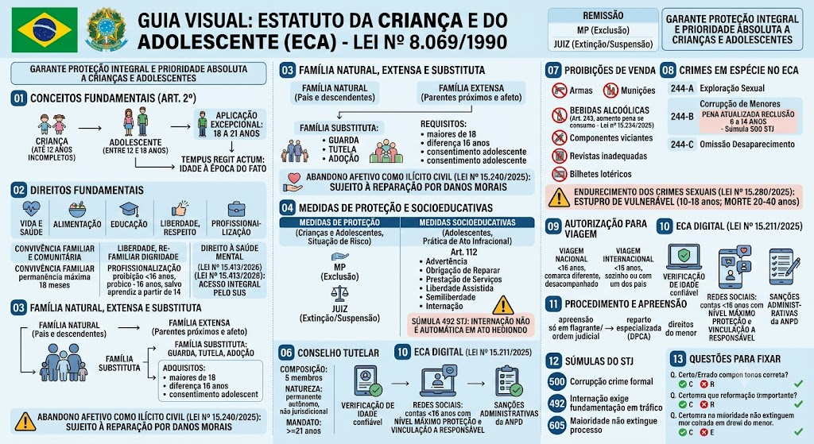

Estatuto da Criança e do Adolescente — Lei 8.069/1990
BR / 2026-10-13 / compilada (texto vigente)
Consultar fonte oficial Baixar cópia local
A redação desta cópia corresponde à versão identificada acima. Consulte a fonte oficial para conferir alterações posteriores e o recorte do seu edital.
Roteiro de leitura
- Proteção integral e direitos
- Ato infracional e garantias
- Crimes e infrações administrativas
Índice dos 329 dispositivos
Lei nº 8.069 de 13/07/1990
LEI Nº 8.069, DE 13 DE JULHO DE 1990
Dispõe sobre o Estatuto da Criança e do Adolescente, e dá outras providências.
O PRESIDENTE DA REPÚBLICA
Faço saber que o Congresso Nacional decreta e eu sanciono a seguinte Lei:
LIVRO I
PARTE GERAL
TÍTULO I — DAS DISPOSIÇÕES PRELIMINARES
Art. 1º Esta Lei dispõe sobre a proteção integral à criança e ao adolescente.
Art. 2º Considera-se criança, para os efeitos desta Lei, a pessoa até doze anos de idade incompletos, e adolescente aquela entre doze e dezoito anos de idade.
Parágrafo único. Nos casos expressos em lei, aplica-se excepcionalmente este Estatuto às pessoas entre dezoito e vinte e um anos de idade.
Art. 3º A criança e o adolescente gozam de todos os direitos fundamentais inerentes à pessoa humana, sem prejuízo da proteção integral de que trata esta Lei, assegurando-se-lhes, por lei ou por outros meios, todas as oportunidades e facilidades, a fim de lhes facultar o desenvolvimento físico, mental, moral, espiritual e social, em condições de liberdade e de dignidade.
Parágrafo único. Os direitos enunciados nesta Lei aplicam-se a todas as crianças e adolescentes, sem discriminação de nascimento, situação familiar, idade, sexo, raça, etnia ou cor, religião ou crença, deficiência, condição pessoal de desenvolvimento e aprendizagem, condição econômica, ambiente social, região e local de moradia ou outra condição que diferencie as pessoas, as famílias ou a comunidade em que vivem. *(Parágrafo único acrescido pela Lei nº 13.257, de 8/3/2016)*
Art. 4º É dever da família, da comunidade, da sociedade em geral e do poder público assegurar, com absoluta prioridade, a efetivação dos direitos referentes à vida, à saúde, à alimentação, à educação, ao esporte, ao lazer, à profissionalização, à cultura, à dignidade, ao respeito, à liberdade, à natureza e à convivência familiar e comunitária. *("Caput" do artigo com redação dada pela Lei nº 15.512, de 22/9/2026)*
§ 1º A garantia de prioridade compreende: *(Parágrafo único transformado em § 1º pela Lei nº 15.240, de 28/10/2025)*
a) primazia de receber proteção e socorro em quaisquer circunstâncias;
b) precedência de atendimento nos serviços públicos ou de relevância pública;
c) preferência na formulação e na execução das políticas sociais públicas;
d) destinação privilegiada de recursos públicos nas áreas relacionadas com a proteção à infância e à juventude.
§ 2º Compete aos pais, além de zelar pelos direitos de que trata o art. 3º desta Lei, prestar aos filhos assistência afetiva, por meio de convívio ou de visitação periódica, que permita o acompanhamento da formação psicológica, moral e social da pessoa em desenvolvimento. *(Parágrafo acrescido pela Lei nº 15.240, de 28/10/2025)*
§ 3º Para efeitos desta Lei, considera-se assistência afetiva:
I - orientação quanto às principais escolhas e oportunidades profissionais, educacionais e culturais;
II - solidariedade e apoio nos momentos de intenso sofrimento ou de dificuldade;
III - presença física espontaneamente solicitada pela criança ou adolescente quando possível de ser atendida. *(Parágrafo acrescido pela Lei nº 15.240, de 28/10/2025)*
Art. 5º Nenhuma criança ou adolescente será objeto de qualquer forma de negligência, discriminação, exploração, violência, crueldade e opressão, punido na forma da lei qualquer atentado, por ação ou omissão, aos seus direitos fundamentais.
Parágrafo único. Considera-se conduta ilícita, sujeita a reparação de danos, sem prejuízo de outras sanções cabíveis, a ação ou a omissão que ofenda direito fundamental de criança ou de adolescente previsto nesta Lei, incluídos os casos de abandono afetivo. *(Parágrafo único acrescido pela Lei nº 15.240, de 28/10/2025)*
Art. 6º Na interpretação desta Lei levar-se-ão em conta os fins sociais a que ela se dirige, as exigências do bem comum, os direitos e deveres individuais e coletivos, e a condição peculiar da criança e do adolescente como pessoas em desenvolvimento.
TÍTULO II — DOS DIREITOS FUNDAMENTAIS
CAPÍTULO I — DO DIREITO À VIDA E À SAÚDE
Art. 7º A criança e o adolescente têm direito a proteção à vida e à saúde, mediante a efetivação de políticas sociais públicas que permitam o nascimento e o desenvolvimento sadio e harmonioso, em condições dignas de existência.
Art. 8º É assegurado a todas as mulheres o acesso aos programas e às políticas de saúde da mulher e de planejamento reprodutivo e, às gestantes, nutrição adequada, atenção humanizada à gravidez, ao parto e ao puerpério e atendimento pré-natal, perinatal e pós-natal integral no âmbito do Sistema Único de Saúde. *(“Caput” do artigo com redação dada pela Lei nº 13.257, de 8/3/2016)*
§ 1º O atendimento pré-natal será realizado por profissionais da atenção primária. *(Parágrafo com redação dada pela Lei nº 13.257, de 8/3/2016)*
§ 2º Os profissionais de saúde de referência da gestante garantirão sua vinculação, no último trimestre da gestação, ao estabelecimento em que será realizado o parto, garantido o direito de opção da mulher. *(Parágrafo com redação dada pela Lei nº 13.257, de 8/3/2016)*
§ 3º Os serviços de saúde onde o parto for realizado assegurarão às mulheres e aos seus filhos recém-nascidos alta hospitalar responsável e contrarreferência na atenção primária, bem como o acesso a outros serviços e a grupos de apoio à amamentação. *(Parágrafo com redação dada pela Lei nº 13.257, de 8/3/2016)*
§ 4º Incumbe ao poder público proporcionar assistência psicológica à gestante e à mãe, no período pré e pós-natal, inclusive como forma de prevenir ou minorar as consequências do estado puerperal. *(Parágrafo acrescido pela Lei nº 12.010, de 3/8/2009, publicada no DOU de 4/8/2009, em vigor 90 dias após a publicação)*
§ 5º A assistência referida no § 4º deste artigo deverá ser prestada também a gestantes e mães que manifestem interesse em entregar seus filhos para adoção, bem como a gestantes e mães que se encontrem em situação de privação de liberdade. *(Parágrafo acrescido pela Lei nº 12.010, de 3/8/2009 e com redação dada pela Lei nº 13.257, de 8/3/2016)*
§ 6º A gestante e a parturiente têm direito a 1 (um) acompanhante de sua preferência durante o período do pré-natal, do trabalho de parto e do pós-parto imediato. *(Parágrafo acrescido pela Lei nº 13.257, de 8/3/2016)*
§ 7º A gestante deverá receber orientação sobre aleitamento materno, alimentação complementar saudável e crescimento e desenvolvimento infantil, bem como sobre formas de favorecer a criação de vínculos afetivos e de estimular o desenvolvimento integral da criança. *(Parágrafo acrescido pela Lei nº 13.257, de 8/3/2016)*
§ 8º A gestante tem direito a acompanhamento saudável durante toda a gestação e a parto natural cuidadoso, estabelecendo-se a aplicação de cesariana e outras intervenções cirúrgicas por motivos médicos. *(Parágrafo acrescido pela Lei nº 13.257, de 8/3/2016)*
§ 9º A atenção primária à saúde fará a busca ativa da gestante que não iniciar ou que abandonar as consultas de pré-natal, bem como da puérpera que não comparecer às consultas pós-parto. *(Parágrafo acrescido pela Lei nº 13.257, de 8/3/2016)*
§ 10. Incumbe ao poder público garantir, à gestante e à mulher com filho na primeira infância que se encontrem sob custódia em unidade de privação de liberdade, ambiência que atenda às normas sanitárias e assistenciais do Sistema Único de Saúde para o acolhimento do filho, em articulação com o sistema de ensino competente, visando ao desenvolvimento integral da criança. *(Parágrafo acrescido pela Lei nº 13.257, de 8/3/2016)*
§ 11. A assistência psicológica à gestante, à parturiente e à puérpera deve ser indicada após avaliação do profissional de saúde no pré-natal e no puerpério, com encaminhamento de acordo com o prognóstico. *(Parágrafo acrescido pela Lei nº 14.721, de 8/11/2023, publicada no DOU de 9/11/2023, em vigor 180 dias após a publicação)*
Art. 8º-A. Fica instituída a Semana Nacional de Prevenção da Gravidez na Adolescência, a ser realizada anualmente na semana que incluir o dia 1º de fevereiro, com o objetivo de disseminar informações sobre medidas preventivas e educativas que contribuam para a redução da incidência da gravidez na adolescência.
Parágrafo único. As ações destinadas a efetivar o disposto no *caput* deste artigo ficarão a cargo do poder público, em conjunto com organizações da sociedade civil, e serão dirigidas prioritariamente ao público adolescente. *(Artigo acrescido pela Lei nº 13.798, de 3/1/2019)*
Art. 9º O Poder Público, as instituições e os empregadores propiciarão condições adequadas ao aleitamento materno, inclusive aos filhos de mães submetidas a medida privativa de liberdade.
§ 1º Os profissionais das unidades primárias de saúde desenvolverão ações sistemáticas, individuais ou coletivas, visando ao planejamento, à implementação e à avaliação de ações de promoção, proteção e apoio ao aleitamento materno e à alimentação complementar saudável, de forma contínua. *(Parágrafo acrescido pela Lei nº 13.257, de 8/3/2016)*
§ 2º Os serviços de unidades de terapia intensiva neonatal deverão dispor de banco de leite humano ou unidade de coleta de leite humano. *(Parágrafo acrescido pela Lei nº 13.257, de 8/3/2016)*
Art. 10. Os hospitais e demais estabelecimentos de atenção à saúde de gestantes, públicos e particulares, são obrigados a:
I - manter registro das atividades desenvolvidas, através de prontuários individuais, pelo prazo de dezoito anos;
II - identificar o recém-nascido mediante o registro de sua impressão plantar e digital e da impressão digital da mãe, sem prejuízo de outras formas normatizadas pela autoridade administrativa competente;
III - proceder a exames visando ao diagnóstico e terapêutica de anormalidades no metabolismo do recém-nascido, bem como prestar orientação aos pais;
IV - fornecer declaração de nascimento onde constem necessariamente as intercorrências do parto e do desenvolvimento do neonato;
V - manter alojamento conjunto, possibilitando ao neonato a permanência junto à mãe.
VI - acompanhar a prática do processo de amamentação, prestando orientações quanto à técnica adequada, enquanto a mãe permanecer na unidade hospitalar, utilizando o corpo técnico já existente. *(Inciso acrescido pela Lei nº 13.436, de 12/4/2017, publicada no DOU de 13/4/2017, em vigor 90 dias após a publicação)*
VII - desenvolver atividades de educação, de conscientização e de esclarecimentos a respeito da saúde mental da mulher no período da gravidez e do puerpério. *(Inciso acrescido pela Lei nº 14.721, de 8/11/2023, publicada no DOU de 9/11/2023, em vigor 180 dias após a publicação)*
§ 1º Os testes para o rastreamento de doenças no recém-nascido serão disponibilizados pelo Sistema Único de Saúde, no âmbito do Programa Nacional de Triagem Neonatal (PNTN), na forma da regulamentação elaborada pelo Ministério da Saúde, com implementação de forma escalonada, de acordo com a seguinte ordem de progressão:
I - etapa 1:
a) fenilcetonúria e outras hiperfenilalaninemias;
b) hipotireoidismo congênito;
c) doença falciforme e outras hemoglobinopatias;
d) fibrose cística;
e) hiperplasia adrenal congênita;
f) deficiência de biotinidase;
g) toxoplasmose congênita;
II - etapa 2:
a) galactosemias;
b) aminoacidopatias;
c) distúrbios do ciclo da ureia;
d) distúrbios da betaoxidação dos ácidos graxos;
III - etapa 3: doenças lisossômicas;
IV - etapa 4: imunodeficiências primárias;
V - etapa 5: atrofia muscular espinhal. *(Parágrafo acrescido pela Lei nº 14.154, de 26/5/2021, publicada no DOU de 27/5/2021, em vigor 365 dias após a publicação)*
§ 2º A delimitação de doenças a serem rastreadas pelo teste do pezinho, no âmbito do PNTN, será revisada periodicamente, com base em evidências científicas, considerados os benefícios do rastreamento, do diagnóstico e do tratamento precoce, priorizando as doenças com maior prevalência no País, com protocolo de tratamento aprovado e com tratamento incorporado no Sistema Único de Saúde. *(Parágrafo acrescido pela Lei nº 14.154, de 26/5/2021, publicada no DOU de 27/5/2021, em vigor 365 dias após a publicação)*
§ 3º O rol de doenças constante do § 1º deste artigo poderá ser expandido pelo poder público com base nos critérios estabelecidos no § 2º deste artigo. *(Parágrafo acrescido pela Lei nº 14.154, de 26/5/2021, publicada no DOU de 27/5/2021, em vigor 365 dias após a publicação)*
§ 4º Durante os atendimentos de pré-natal e de puerpério imediato, os profissionais de saúde devem informar a gestante e os acompanhantes sobre a importância do teste do pezinho e sobre as eventuais diferenças existentes entre as modalidades oferecidas no Sistema Único de Saúde e na rede privada de saúde. *(Parágrafo acrescido pela Lei nº 14.154, de 26/5/2021, publicada no DOU de 27/5/2021, em vigor 365 dias após a publicação)*
Art. 11. É assegurado acesso integral às linhas de cuidado voltadas à saúde da criança e do adolescente, por intermédio do Sistema Único de Saúde, observado o princípio da equidade no acesso a ações e serviços para promoção, proteção e recuperação da saúde. *(“Caput” do artigo com redação dada pela Lei nº 13.257, de 8/3/2016)*
§ 1º A criança e o adolescente com deficiência serão atendidos, sem discriminação ou segregação, em suas necessidades gerais de saúde e específicas de habilitação e reabilitação. *(Parágrafo com redação dada pela Lei nº 13.257, de 8/3/2016)*
§ 2º Incumbe ao poder público fornecer gratuitamente, àqueles que necessitarem, medicamentos, órteses, próteses e outras tecnologias assistivas relativas ao tratamento, habilitação ou reabilitação para crianças e adolescentes, de acordo com as linhas de cuidado voltadas às suas necessidades específicas. *(Parágrafo com redação dada pela Lei nº 13.257, de 8/3/2016)*
§ 3º Os profissionais que atuam no cuidado diário ou frequente de crianças na primeira infância receberão formação específica e permanente para a detecção de sinais de risco para o desenvolvimento psíquico, bem como para o acompanhamento que se fizer necessário. *(Parágrafo acrescido pela Lei nº 13.257, de 8/3/2016)*
Art. 11-A. É assegurado às crianças e aos adolescentes acesso a programas de saúde mental promovidos pelo Sistema Único de Saúde (SUS) para a prevenção e o tratamento de agravos de saúde mental.
§ 1º Os programas de saúde mental para crianças e adolescentes promoverão a atenção psicossocial básica e especializada, de urgência e emergência, e a atenção hospitalar.
§ 2º Os profissionais que atuam na prevenção e no tratamento de agravos de saúde mental que acometem crianças e adolescentes receberão formação específica e permanente para a detecção de sinais de risco, bem como para o acompanhamento que se fizer necessário.
§ 3º É assegurado às crianças e aos adolescentes em situação de vulnerabilidade que estejam em tratamento de agravos de saúde mental o acesso a todos os recursos terapêuticos, de forma gratuita ou subsidiada, de acordo com as linhas de cuidado voltadas às suas necessidades específicas. *(Artigo acrescido pela Lei nº 15.413, de 21/5/2026)*
Art. 12. Os estabelecimentos de atendimento à saúde, inclusive as unidades neonatais, de terapia intensiva e de cuidados intermediários, deverão proporcionar condições para a permanência em tempo integral de um dos pais ou responsável, nos casos de internação de criança ou adolescente. *(“Caput” do artigo com redação dada pela Lei nº 13.257, de 8/3/2016)*
Parágrafo único. Será garantido à criança e ao adolescente o direito de visitação à mãe ou ao pai internados em instituição de saúde, nos termos das normas regulamentadoras. *(Parágrafo único acrescido pela Lei nº 14.950, de 2/8/2024, publicada no DOU de 5/8/2024, em vigor 180 dias após a publicação)*
Art. 13. Os casos de suspeita ou confirmação de castigo físico, de tratamento cruel ou degradante e de maus-tratos contra criança ou adolescente serão obrigatoriamente comunicados ao Conselho Tutelar da respectiva localidade, sem prejuízo de outras providências legais. *(“Caput” do artigo com redação dada pela Lei nº 13.010, de 26/6/2014)*
§ 1º As gestantes ou mães que manifestem interesse em entregar seus filhos para adoção serão obrigatoriamente encaminhadas, sem constrangimento, à Justiça da Infância e da Juventude. *(Parágrafo único acrescido pela Lei nº 12.010, de 3/8/2009 transformado em § 1º e com redação dada pela Lei nº 13.257, de 8/3/2016)*
§ 2º Os serviços de saúde em suas diferentes portas de entrada, os serviços de assistência social em seu componente especializado, o Centro de Referência Especializado de Assistência Social (Creas) e os demais órgãos do Sistema de Garantia de Direitos da Criança e do Adolescente deverão conferir máxima prioridade ao atendimento das crianças na faixa etária da primeira infância com suspeita ou confirmação de violência de qualquer natureza, formulando projeto terapêutico singular que inclua intervenção em rede e, se necessário, acompanhamento domiciliar. *(Parágrafo acrescido pela Lei nº 13.257, de 8/3/2016)*
Art. 14. O Sistema Único de Saúde promoverá programas de assistência médica e odontológica para a prevenção das enfermidades que ordinariamente afetam a população infantil, e campanhas de educação sanitária para pais, educadores e alunos.
§ 1º É obrigatória a vacinação das crianças nos casos recomendados pelas autoridades sanitárias. *(Parágrafo único transformado em § 1º pela Lei nº 13.257, de 8/3/2016)*
§ 2º O Sistema Único de Saúde promoverá a atenção à saúde bucal das crianças e das gestantes, de forma transversal, integral e intersetorial com as demais linhas de cuidado direcionadas à mulher e à criança. *(Parágrafo acrescido pela Lei nº 13.257, de 8/3/2016)*
§ 3º A atenção odontológica à criança terá função educativa protetiva e será prestada, inicialmente, antes de o bebê nascer, por meio de aconselhamento pré-natal, e, posteriormente, no sexto e no décimo segundo anos de vida, com orientações sobre saúde bucal. *(Parágrafo acrescido pela Lei nº 13.257, de 8/3/2016)*
§ 4º A criança com necessidade de cuidados odontológicos especiais será atendida pelo Sistema Único de Saúde. *(Parágrafo acrescido pela Lei nº 13.257, de 8/3/2016)*
§ 5º É obrigatória a aplicação a todas as crianças, nos seus primeiros dezoito meses de vida, de protocolo ou outro instrumento construído com a finalidade de facilitar a detecção, em consulta pediátrica de acompanhamento da criança, de risco para o seu desenvolvimento psíquico. *(Parágrafo acrescido pela Lei nº 13.438, de 26/4/2017, publicada no DOU de 27/4/2017, em vigor 180 dias após a publicação)*
§ 6º *(Vide Lei nº 15.450, de 30/6/2026)*
Art. 14-A. Incumbe ao poder público proporcionar assistência integral e multiprofissional à criança e ao adolescente dependentes químicos e/ou com problemas decorrentes do uso de drogas, com vistas à proteção de sua saúde física e mental e de seu bem-estar social, e promover campanhas de prevenção do uso de drogas lícitas e ilícitas. *(Artigo acrescido pela Lei nº 15.243, de 28/10/2025, publicada no DOU de 29/10/2025, em vigor 120 dias após a publicação)*
CAPÍTULO II — DO DIREITO À LIBERDADE, AO RESPEITO E À DIGNIDADE
Art. 15. A criança e o adolescente têm direito à liberdade, ao respeito e à dignidade como pessoas humanas em processo de desenvolvimento e como sujeitos de direitos civis, humanos e sociais garantidos na Constituição e nas leis.
Art. 16. O direito à liberdade compreende os seguintes aspectos:
I - ir, vir e estar nos logradouros públicos e espaços comunitários, ressalvadas as restrições legais;
II - opinião e expressão;
III - crença e culto religioso;
IV - brincar, praticar esportes e divertir-se;
V - participar da vida familiar e comunitária, sem discriminação;
VI - participar da vida política, na forma da lei;
VII - buscar refúgio, auxílio e orientação.
Art. 17. O direito ao respeito consiste na inviolabilidade da integridade física, psíquica e moral da criança e do adolescente, abrangendo a preservação da imagem, da identidade, da autonomia, dos valores, idéias e crenças, dos espaços e objetos pessoais.
Art. 18. É dever de todos velar pela dignidade da criança e do adolescente, pondo-os a salvo de qualquer tratamento desumano, violento, aterrorizante, vexatório ou constrangedor.
Art. 18-A. A criança e o adolescente têm o direito de ser educados e cuidados sem o uso de castigo físico ou de tratamento cruel ou degradante, como formas de correção, disciplina, educação ou qualquer outro pretexto, pelos pais, pelos integrantes da família ampliada, pelos responsáveis, pelos agentes públicos executores de medidas socioeducativas ou por qualquer pessoa encarregada de cuidar deles, tratá-los, educá-los ou protegê-los.
Parágrafo único. Para os fins desta Lei, considera-se:
I - castigo físico: ação de natureza disciplinar ou punitiva aplicada com o uso da força física sobre a criança ou o adolescente que resulte em:
a) sofrimento físico; ou
b) lesão;
II - tratamento cruel ou degradante: conduta ou forma cruel de tratamento em relação à criança ou ao adolescente que:
a) humilhe; ou
b) ameace gravemente; ou
c) ridicularize. *(Artigo acrescido pela Lei nº 13.010, de 26/6/2014)*
Art. 18-B. Os pais, os integrantes da família ampliada, os responsáveis, os agentes públicos executores de medidas socioeducativas ou qualquer pessoa encarregada de cuidar de crianças e de adolescentes, tratá-los, educá-los ou protegê-los que utilizarem castigo físico ou tratamento cruel ou degradante como formas de correção, disciplina, educação ou qualquer outro pretexto estarão sujeitos, sem prejuízo de outras sanções cabíveis, às seguintes medidas, que serão aplicadas de acordo com a gravidade do caso: *(“Caput” do artigo acrescido pela Lei nº 13.010, de 26/6/2014)*
I - encaminhamento a programa oficial ou comunitário de proteção à família; *(Inciso acrescido pela Lei nº 13.010, de 26/6/2014)*
II - encaminhamento a tratamento psicológico ou psiquiátrico; *(Inciso acrescido pela Lei nº 13.010, de 26/6/2014)*
III - encaminhamento a cursos ou programas de orientação; *(Inciso acrescido pela Lei nº 13.010, de 26/6/2014)*
IV - obrigação de encaminhar a criança a tratamento especializado; *(Inciso acrescido pela Lei nº 13.010, de 26/6/2014)*
V - advertência. *(Inciso acrescido pela Lei nº 13.010, de 26/6/2014)*
VI - garantia de tratamento de saúde especializado à vítima. *(Inciso acrescido pela Lei nº 14.344, de 24/5/2022, publicada no DOU de 25/5/2022, em vigor 45 dias após a publicação)*
Parágrafo único. As medidas previstas neste artigo serão aplicadas pelo Conselho Tutelar, sem prejuízo de outras providências legais. *(Parágrafo único acrescido pela Lei nº 13.010, de 26/6/2014)*
CAPÍTULO III — DO DIREITO À CONVIVÊNCIA FAMILIAR E COMUNITÁRIA
Seção I — Disposições Gerais
Art. 19. É direito da criança e do adolescente ser criado e educado no seio de sua família e, excepcionalmente, em família substituta, assegurada a convivência familiar e comunitária, em ambiente que garanta seu desenvolvimento integral. *(“Caput” do artigo com redação dada pela Lei nº 13.257, de 8/3/2016)*
§ 1º Toda criança ou adolescente que estiver inserido em programa de acolhimento familiar ou institucional terá sua situação reavaliada, no máximo, a cada 3 (três) meses, devendo a autoridade judiciária competente, com base em relatório elaborado por equipe interprofissional ou multidisciplinar, decidir de forma fundamentada pela possibilidade de reintegração familiar ou pela colocação em família substituta, em quaisquer das modalidades previstas no art. 28 desta Lei. *(Parágrafo acrescido pela Lei nº 12.010, de 3/8/2009, com redação dada pela Lei nº 13.509, de 22/11/2017, vetado pelo Presidente da República, mantido pelo Congresso Nacional e publicado no DOU-Edição Extra de 23/2/2018)*
§ 2º A permanência da criança e do adolescente em programa de acolhimento institucional não se prolongará por mais de 18 (dezoito meses), salvo comprovada necessidade que atenda ao seu superior interesse, devidamente fundamentada pela autoridade judiciária. *(Parágrafo acrescido pela Lei nº 12.010, de 3/8/2009, com redação dada pela Lei nº 13.509, de 22/11/2017)*
§ 3º A manutenção ou a reintegração de criança ou adolescente à sua família terá preferência em relação a qualquer outra providência, caso em que será esta incluída em serviços e programas de proteção, apoio e promoção, nos termos do § 1º do art. 23, dos incisos I e IV do *caput* do art. 101 e dos incisos I a IV do *caput* do art. 129 desta Lei. *(Parágrafo acrescido pela Lei nº 12.010, de 3/8/2009 e com redação dada pela Lei nº 13.257, de 8/3/2016)*
§ 4º Será garantida a convivência da criança e do adolescente com a mãe ou o pai privado de liberdade, por meio de visitas periódicas promovidas pelo responsável ou, nas hipóteses de acolhimento institucional, pela entidade responsável, independentemente de autorização judicial. *(Parágrafo acrescido pela Lei nº 12.962, de 8/4/2014)*
§ 5º Será garantida a convivência integral da criança com a mãe adolescente que estiver em acolhimento institucional. *(Parágrafo acrescido pela Lei nº 13.509, de 22/11/2017)*
§ 6º A mãe adolescente será assistida por equipe especializada multidisciplinar. *(Parágrafo acrescido pela Lei nº 13.509, de 22/11/2017)*
Art. 19-A. A gestante ou mãe que manifeste interesse em entregar seu filho para adoção, antes ou logo após o nascimento, será encaminhada à Justiça da Infância e da Juventude. *(“Caput” do artigo acrescido pela Lei nº 13.509, de 22/11/2017)*
§ 1º A gestante ou mãe será ouvida pela equipe interprofissional da Justiça da Infância e da Juventude, que apresentará relatório à autoridade judiciária, considerando inclusive os eventuais efeitos do estado gestacional e puerperal. *(Parágrafo acrescido pela Lei nº 13.509, de 22/11/2017)*
§ 2º De posse do relatório, a autoridade judiciária poderá determinar o encaminhamento da gestante ou mãe, mediante sua expressa concordância, à rede pública de saúde e assistência social para atendimento especializado. *(Parágrafo acrescido pela Lei nº 13.509, de 22/11/2017)*
§ 3º A busca à família extensa, conforme definida nos termos do parágrafo único do art. 25 desta Lei, respeitará o prazo máximo de 90 (noventa) dias, prorrogável por igual período. *(Parágrafo acrescido pela Lei nº 13.509, de 22/11/2017)*
§ 4º Na hipótese de não haver a indicação do genitor e de não existir outro representante da família extensa apto a receber a guarda, a autoridade judiciária competente deverá decretar a extinção do poder familiar e determinar a colocação da criança sob a guarda provisória de quem estiver habilitado a adotá-la ou de entidade que desenvolva programa de acolhimento familiar ou institucional. *(Parágrafo acrescido pela Lei nº 13.509, de 22/11/2017)*
§ 5º Após o nascimento da criança, a vontade da mãe ou de ambos os genitores, se houver pai registral ou pai indicado, deve ser manifestada na audiência a que se refere o § 1º do art. 166 desta Lei, garantido o sigilo sobre a entrega. *(Parágrafo acrescido pela Lei nº 13.509, de 22/11/2017)*
§ 6º Na hipótese de não comparecerem à audiência nem o genitor nem representante da família extensa para confirmar a intenção de exercer o poder familiar ou a guarda, a autoridade judiciária suspenderá o poder familiar da mãe, e a criança será colocada sob a guarda provisória de quem esteja habilitado a adotá-la. *(Parágrafo vetado pelo Presidente da República na Lei nº 13.509, de 22/11/2017, mantido pelo Congresso Nacional e publicado no DOU-Edição Extra de 23/2/2018)*
§ 7º Os detentores da guarda possuem o prazo de 15 (quinze) dias para propor a ação de adoção, contado do dia seguinte à data do término do estágio de convivência. *(Parágrafo acrescido pela Lei nº 13.509, de 22/11/2017)*
§ 8º Na hipótese de desistência pelos genitores - manifestada em audiência ou perante a equipe interprofissional - da entrega da criança após o nascimento, a criança será mantida com os genitores, e será determinado pela Justiça da Infância e da Juventude o acompanhamento familiar pelo prazo de 180 (cento e oitenta) dias. *(Parágrafo acrescido pela Lei nº 13.509, de 22/11/2017)*
§ 9º É garantido à mãe o direito ao sigilo sobre o nascimento, respeitado o disposto no art. 48 desta Lei. *(Parágrafo acrescido pela Lei nº 13.509, de 22/11/2017)*
§ 10. Serão cadastrados para adoção recém-nascidos e crianças acolhidas não procuradas por suas famílias no prazo de 30 (trinta) dias, contado a partir do dia do acolhimento. *(Parágrafo vetado pelo Presidente da República na Lei nº 13.509, de 22/11/2017, mantido pelo Congresso Nacional e publicado no DOU-Edição Extra de 23/2/2018)*
Art. 19-B. A criança e o adolescente em programa de acolhimento institucional ou familiar poderão participar de programa de apadrinhamento. *(“Caput” do artigo acrescido pela Lei nº 13.509, de 22/11/2017)*
§ 1º O apadrinhamento consiste em estabelecer e proporcionar à criança e ao adolescente vínculos externos à instituição para fins de convivência familiar e comunitária e colaboração com o seu desenvolvimento nos aspectos social, moral, físico, cognitivo, educacional e financeiro. *(Parágrafo acrescido pela Lei nº 13.509, de 22/11/2017)*
§ 2º Podem ser padrinhos ou madrinhas pessoas maiores de 18 (dezoito) anos não inscritas nos cadastros de adoção, desde que cumpram os requisitos exigidos pelo programa de apadrinhamento de que fazem parte. *(Parágrafo vetado pelo Presidente da República na Lei nº 13.509, de 22/11/2017, mantido pelo Congresso Nacional e publicado no DOU-Edição Extra de 23/2/2018)*
§ 3º Pessoas jurídicas podem apadrinhar criança ou adolescente a fim de colaborar para o seu desenvolvimento. *(Parágrafo acrescido pela Lei nº 13.509, de 22/11/2017)*
§ 4º O perfil da criança ou do adolescente a ser apadrinhado será definido no âmbito de cada programa de apadrinhamento, com prioridade para crianças ou adolescentes com remota possibilidade de reinserção familiar ou colocação em família adotiva. *(Parágrafo acrescido pela Lei nº 13.509, de 22/11/2017)*
§ 5º Os programas ou serviços de apadrinhamento apoiados pela Justiça da Infância e da Juventude poderão ser executados por órgãos públicos ou por organizações da sociedade civil. *(Parágrafo acrescido pela Lei nº 13.509, de 22/11/2017)*
§ 6º Se ocorrer violação das regras de apadrinhamento, os responsáveis pelo programa e pelos serviços de acolhimento deverão imediatamente notificar a autoridade judiciária competente. *(Parágrafo acrescido pela Lei nº 13.509, de 22/11/2017)*
Art. 20. Os filhos, havidos ou não da relação do casamento, ou por adoção, terão os mesmos direitos e qualificações, proibidas quaisquer designações discriminatórias relativas à filiação.
Art. 21. O poder familiar será exercido, em igualdade de condições, pelo pai e pela mãe, na forma do que dispuser a legislação civil, assegurado a qualquer deles o direito de, em caso de discordância, recorrer à autoridade judiciária competente para a solução da divergência. *(Expressão "pátrio poder" substituída por “poder familiar” pelo art. 3º da Lei nº 12.010, de 3/8/2009)*
Art. 22. Aos pais incumbe o dever de sustento, guarda, convivência, assistência material e afetiva e educação dos filhos menores, cabendo-lhes ainda, no interesse destes, a obrigação de cumprir e fazer cumprir as determinações judiciais. *(“Caput” do artigo com redação dada pela Lei nº 15.240, de 28/10/2025)*
Parágrafo único. A mãe e o pai, ou os responsáveis, têm direitos iguais e deveres e responsabilidades compartilhados no cuidado e na educação da criança, devendo ser resguardado o direito de transmissão familiar de suas crenças e culturas, assegurados os direitos da criança estabelecidos nesta Lei. *(Parágrafo único acrescido pela Lei nº 13.257, de 8/3/2016)*
Art. 23. A falta ou a carência de recursos materiais não constitui motivo suficiente para a perda ou a suspensão do poder familiar. *(Expressão "pátrio poder" substituída por “poder familiar” pelo art. 3º da Lei nº 12.010, de 3/8/2009)*
§ 1º Não existindo outro motivo que por si só autorize a decretação da medida, a criança ou o adolescente será mantido em sua família de origem, a qual deverá obrigatoriamente ser incluída em serviços e programas oficiais de proteção, apoio e promoção. *(Parágrafo único transformado em §1º pela Lei nº 12.962, de 8/4/2014 e com redação dada pela Lei nº 13.257, de 8/3/2016)*
§ 2º A condenação criminal do pai ou da mãe não implicará a destituição do poder familiar, exceto na hipótese de condenação por crime doloso sujeito à pena de reclusão contra outrem igualmente titular do mesmo poder familiar ou contra filho, filha ou outro descendente. *(Parágrafo acrescido pela Lei nº 12.962, de 8/4/2014, com redação dada pela Lei nº 13.715, de 24/9/2018)*
Art. 24. A perda e a suspensão do poder familiar serão decretadas judicialmente, em procedimento contraditório, nos casos previstos na legislação civil, bem como na hipótese de descumprimento injustificado dos deveres e obrigações a que alude o art. 22. *(Expressão "pátrio poder" substituída por “poder familiar” pelo art. 3º da Lei nº 12.010, de 3/8/2009)*
Seção II — Da Família Natural
Art. 25. Entende-se por família natural a comunidade formada pelos pais ou qualquer deles e seus descendentes.
Parágrafo único. Entende-se por família extensa ou ampliada aquela que se estende para além da unidade pais e filhos ou da unidade do casal, formada por parentes próximos com os quais a criança ou adolescente convive e mantém vínculos de afinidade e afetividade. *(Parágrafo único acrescido pela Lei nº 12.010, de 3/8/2009, publicada no DOU de 4/8/2009, em vigor 90 dias após a publicação)*
Art. 26. Os filhos havidos fora do casamento poderão ser reconhecidos pelos pais, conjunta ou separadamente, no próprio termo de nascimento, por testamento, mediante escritura ou outro documento público, qualquer que seja a origem da filiação.
Parágrafo único. O reconhecimento pode preceder o nascimento do filho ou suceder-lhe ao falecimento, se deixar descendentes.
Art. 27. O reconhecimento do estado de filiação é direito personalíssimo, indisponível e imprescritível, podendo ser exercitado contra os pais ou seus herdeiros, sem qualquer restrição, observado o segredo de Justiça.
Seção III — Da Família Substituta
Subseção I — Disposições Gerais
Art. 28. A colocação em família substituta far-se-á mediante guarda, tutela ou adoção, independentemente da situação jurídica da criança ou adolescente, nos termos desta Lei.
§ 1º Sempre que possível, a criança ou o adolescente será previamente ouvido por equipe interprofissional, respeitado seu estágio de desenvolvimento e grau de compreensão sobre as implicações da medida, e terá sua opinião devidamente considerada. *(Parágrafo com redação dada pela Lei nº 12.010, de 3/8/2009, publicada no DOU de 4/8/2009, em vigor 90 dias após a publicação)*
§ 2º Tratando-se de maior de 12 (doze) anos de idade, será necessário seu consentimento, colhido em audiência. *(Parágrafo com redação dada pela Lei nº 12.010, de 3/8/2009, publicada no DOU de 4/8/2009, em vigor 90 dias após a publicação)*
§ 3º Na apreciação do pedido levar-se-á em conta o grau de parentesco e a relação de afinidade ou de afetividade, a fim de evitar ou minorar as consequências decorrentes da medida. *(Parágrafo acrescido pela Lei nº 12.010, de 3/8/2009, publicada no DOU de 4/8/2009, em vigor 90 dias após a publicação)*
§ 4º Os grupos de irmãos serão colocados sob adoção, tutela ou guarda da mesma família substituta, ressalvada a comprovada existência de risco de abuso ou outra situação que justifique plenamente a excepcionalidade de solução diversa, procurando-se, em qualquer caso, evitar o rompimento definitivo dos vínculos fraternais. *(Parágrafo acrescido pela Lei nº 12.010, de 3/8/2009, publicada no DOU de 4/8/2009, em vigor 90 dias após a publicação)*
§ 5º A colocação da criança ou adolescente em família substituta será precedida de sua preparação gradativa e acompanhamento posterior, realizados pela equipe interprofissional a serviço da Justiça da Infância e da Juventude, preferencialmente com o apoio dos técnicos responsáveis pela execução da política municipal de garantia do direito à convivência familiar. *(Parágrafo acrescido pela Lei nº 12.010, de 3/8/2009, publicada no DOU de 4/8/2009, em vigor 90 dias após a publicação)*
§ 6º Em se tratando de criança ou adolescente indígena ou proveniente de comunidade remanescente de quilombo, é ainda obrigatório:
I - que sejam consideradas e respeitadas sua identidade social e cultural, os seus costumes e tradições, bem como suas instituições, desde que não sejam incompatíveis com os direitos fundamentais reconhecidos por esta Lei e pela Constituição Federal;
II - que a colocação familiar ocorra prioritariamente no seio de sua comunidade ou junto a membros da mesma etnia;
III - a intervenção e oitiva de representantes do órgão federal responsável pela política indigenista, no caso de crianças e adolescentes indígenas, e de antropólogos, perante a equipe interprofissional ou multidisciplinar que irá acompanhar o caso. *(Parágrafo acrescido pela Lei nº 12.010, de 3/8/2009, publicada no DOU de 4/8/2009, em vigor 90 dias após a publicação)*
Art. 29. Não se deferirá colocação em família substituta a pessoa que revele, por qualquer modo, incompatibilidade com a natureza da medida ou não ofereça ambiente familiar adequado.
Art. 30. A colocação em família substituta não admitirá transferência da criança ou adolescente a terceiros ou a entidades governamentais ou não-governamentais, sem autorização judicial.
Art. 31. A colocação em família substituta estrangeira constitui medida excepcional, somente admissível na modalidade de adoção.
Art. 32. Ao assumir a guarda ou a tutela, o responsável prestará compromisso de bem e fielmente desempenhar o encargo, mediante termo nos autos.
Subseção II — Da Guarda
Art. 33. A guarda obriga à prestação de assistência material, moral e educacional à criança ou adolescente, conferindo a seu detentor o direito de opor-se a terceiros, inclusive aos pais.
§ 1º A guarda destina-se a regularizar a posse de fato, podendo ser deferida, liminar ou incidentalmente, nos procedimentos de tutela e adoção, exceto no de adoção por estrangeiros.
§ 2º Excepcionalmente, deferir-se-á a guarda, fora dos casos de tutela e adoção, para atender a situações peculiares ou suprir a falta eventual dos pais ou responsável, podendo ser deferido o direito de representação para a prática de atos determinados.
§ 3º A guarda confere à criança ou adolescente a condição de dependente, para todos os fins e efeitos de direito, inclusive previdenciários.
§ 4º Salvo expressa e fundamentada determinação em contrário, da autoridade judiciária competente, ou quando a medida for aplicada em preparação para adoção, o deferimento da guarda de criança ou adolescente a terceiros não impede o exercício do direito de visitas pelos pais, assim como o dever de prestar alimentos, que serão objeto de regulamentação específica, a pedido do interessado ou do Ministério Público. *(Parágrafo acrescido pela Lei nº 12.010, de 3/8/2009, publicada no DOU de 4/8/2009, em vigor 90 dias após a publicação)*
Art. 34. O poder público estimulará, por meio de assistência jurídica, incentivos fiscais e subsídios, o acolhimento, sob a forma de guarda, de criança ou adolescente afastado do convívio familiar. *("Caput" do artigo com redação dada pela Lei nº 12.010, de 3/8/2009, publicada no DOU de 4/8/2009, em vigor 90 dias após a publicação)*
§ 1º A inclusão da criança ou adolescente em programas de acolhimento familiar terá preferência a seu acolhimento institucional, observado, em qualquer caso, o caráter temporário e excepcional da medida, nos termos desta Lei. *(Parágrafo acrescido pela Lei nº 12.010, de 3/8/2009, publicada no DOU de 4/8/2009, em vigor 90 dias após a publicação)*
§ 2º Na hipótese do § 1º deste artigo a pessoa ou casal cadastrado no programa de acolhimento familiar poderá receber a criança ou adolescente mediante guarda, observado o disposto nos arts. 28 a 33 desta Lei. *(Parágrafo acrescido pela Lei nº 12.010, de 3/8/2009, publicada no DOU de 4/8/2009, em vigor 90 dias após a publicação)*
§ 3º A União apoiará a implementação de serviços de acolhimento em família acolhedora como política pública, os quais deverão dispor de equipe que organize o acolhimento temporário de crianças e de adolescentes em residências de famílias selecionadas, capacitadas e acompanhadas que não estejam no cadastro de adoção. *(Parágrafo acrescido pela Lei nº 13.257, de 8/3/2016)*
§ 4º Poderão ser utilizados recursos federais, estaduais, distritais e municipais para a manutenção dos serviços de acolhimento em família acolhedora, facultando-se o repasse de recursos para a própria família acolhedora. *(Parágrafo acrescido pela Lei nº 13.257, de 8/3/2016)*
Art. 35. A guarda poderá ser revogada a qualquer tempo, mediante ato judicial fundamentado, ouvido o Ministério Público.
Subseção III — Da Tutela
Art. 36. A tutela será deferida, nos termos da lei civil, a pessoa de até 18 (dezoito) anos incompletos. *("Caput" do artigo com redação dada pela Lei nº 12.010, de 3/8/2009, publicada no DOU de 4/8/2009, em vigor 90 dias após a publicação)*
Parágrafo único. O deferimento da tutela pressupõe a prévia decretação da perda ou suspensão do poder familiar e implica necessariamente o dever de guarda. *(Expressão "pátrio poder" substituída por “poder familiar” pelo art. 3º da Lei nº 12.010, de 3/8/2009)*
Art. 37. O tutor nomeado por testamento ou qualquer documento autêntico, conforme previsto no parágrafo único do art. 1.729 da Lei nº 10.406, de 10 de janeiro de 2002 - Código Civil, deverá, no prazo de 30 (trinta) dias após a abertura da sucessão, ingressar com pedido destinado ao controle judicial do ato, observando o procedimento previsto nos arts. 165 a 170 desta Lei. *("Caput" do artigo com redação dada pela Lei nº 12.010, de 3/8/2009, publicada no DOU de 4/8/2009, em vigor 90 dias após a publicação)*
Parágrafo único. Na apreciação do pedido, serão observados os requisitos previstos nos arts. 28 e 29 desta Lei, somente sendo deferida a tutela à pessoa indicada na disposição de última vontade, se restar comprovado que a medida é vantajosa ao tutelando e que não existe outra pessoa em melhores condições de assumi-la. *(Parágrafo único com redação dada pela Lei nº 12.010, de 3/8/2009, publicada no DOU de 4/8/2009, em vigor 90 dias após a publicação)*
Art. 38. Aplica-se à destituição da tutela o disposto no art. 24.
Subseção IV — Da Adoção
Art. 39. A adoção de criança e de adolescente reger-se-á segundo o disposto nesta Lei.
§ 1º A adoção é medida excepcional e irrevogável, à qual se deve recorrer apenas quando esgotados os recursos de manutenção da criança ou adolescente na família natural ou extensa, na forma do parágrafo único do art. 25 desta Lei. *(Parágrafo acrescido pela Lei nº 12.010, de 3/8/2009, publicada no DOU de 4/8/2009, em vigor 90 dias após a publicação)*
§ 2º É vedada a adoção por procuração. *(Parágrafo único transformado em § 2º pela Lei nº 12.010, de 3/8/2009, publicada no DOU de 4/8/2009, em vigor 90 dias após a publicação)*
§ 3º Em caso de conflito entre direitos e interesses do adotando e de outras pessoas, inclusive seus pais biológicos, devem prevalecer os direitos e os interesses do adotando. *(Parágrafo acrescido pela Lei nº 13.509, de 22/11/2017)*
Art. 40. O adotando deve contar com, no máximo, dezoito anos à data do pedido, salvo se já estiver sob a guarda ou tutela dos adotantes.
Art. 41. A adoção atribui a condição de filho ao adotado, com os mesmos direitos e deveres, inclusive sucessórios, desligando-o de qualquer vínculo com pais e parentes, salvo os impedimentos matrimoniais.
§ 1º Se um dos cônjuges ou concubinos adota o filho do outro, mantêm-se os vínculos de filiação entre o adotado e o cônjuge ou concubino do adotante e os respectivos parentes.
§ 2º É recíproco o direito sucessório entre o adotado, seus descendentes, o adotante, seus ascendentes, descendentes e colaterais até o 4º grau, observada a ordem de vocação hereditária.
Art. 42. Podem adotar os maiores de 18 (dezoito) anos, independentemente do estado civil. *("Caput" do artigo com redação dada pela Lei nº 12.010, de 3/8/2009, publicada no DOU de 4/8/2009, em vigor 90 dias após a publicação)*
§ 1º Não podem adotar os ascendentes e os irmãos do adotando.
§ 2º Para adoção conjunta, é indispensável que os adotantes sejam casados civilmente ou mantenham união estável, comprovada a estabilidade da família. *(Parágrafo com redação dada pela Lei nº 12.010, de 3/8/2009, publicada no DOU de 4/8/2009, em vigor 90 dias após a publicação)*
§ 3º O adotante há de ser, pelo menos, dezesseis anos mais velho do que o adotando.
§ 4º Os divorciados, os judicialmente separados e os ex-companheiros podem adotar conjuntamente, contanto que acordem sobre a guarda e o regime de visitas e desde que o estágio de convivência tenha sido iniciado na constância do período de convivência e que seja comprovada a existência de vínculos de afinidade e afetividade com aquele não detentor da guarda, que justifiquem a excepcionalidade da concessão. *(Parágrafo com redação dada pela Lei nº 12.010, de 3/8/2009, publicada no DOU de 4/8/2009, em vigor 90 dias após a publicação)*
§ 5º Nos casos do § 4º deste artigo, desde que demonstrado efetivo benefício ao adotando, será assegurada a guarda compartilhada, conforme previsto no art. 1.584 da Lei nº 10.406, de 10 de janeiro de 2002 - Código Civil. *(Parágrafo com redação dada pela Lei nº 12.010, de 3/8/2009, publicada no DOU de 4/8/2009, em vigor 90 dias após a publicação)*
§ 6º A adoção poderá ser deferida ao adotante que, após inequívoca manifestação de vontade, vier a falecer no curso do procedimento, antes de prolatada a sentença. *(Parágrafo acrescido pela Lei nº 12.010, de 3/8/2009, publicada no DOU de 4/8/2009, em vigor 90 dias após a publicação)*
Art. 43. A adoção será deferida quando apresentar reais vantagens para o adotando e fundar-se em motivos legítimos.
Art. 44. Enquanto não der conta de sua administração e saldar o seu alcance, não pode o tutor ou o curador adotar o pupilo ou o curatelado.
Art. 45. A adoção depende do consentimento dos pais ou do representante legal do adotando.
§ 1º O consentimento será dispensado em relação à criança ou adolescente cujos pais sejam desconhecidos ou tenham sido destituídos do poder familiar. *(Expressão "pátrio poder" substituída por “poder familiar” pelo art. 3º da Lei nº 12.010, de 3/8/2009)*
§ 2º Em se tratando de adotando maior de doze anos de idade, será também necessário o seu consentimento.
Art. 46. A adoção será precedida de estágio de convivência com a criança ou adolescente, pelo prazo máximo de 90 (noventa) dias, observadas a idade da criança ou adolescente e as peculiaridades do caso. *(“Caput” do artigo com redação dada pela Lei nº 13.509, de 22/11/2017)*
§ 1º O estágio de convivência poderá ser dispensado se o adotando já estiver sob a tutela ou guarda legal do adotante durante tempo suficiente para que seja possível avaliar a conveniência da constituição do vínculo. *(Parágrafo com redação dada pela Lei nº 12.010, de 3/8/2009, publicada no DOU de 4/8/2009, em vigor 90 dias após a publicação)*
§ 2º A simples guarda de fato não autoriza, por si só, a dispensa da realização do estágio de convivência. *(Parágrafo com redação dada pela Lei nº 12.010, de 3/8/2009, publicada no DOU de 4/8/2009, em vigor 90 dias após a publicação)*
§ 2º-A. O prazo máximo estabelecido no *caput* deste artigo pode ser prorrogado por até igual período, mediante decisão fundamentada da autoridade judiciária. *(Parágrafo acrescido pela Lei nº 13.509, de 22/11/2017)*
§ 3º Em caso de adoção por pessoa ou casal residente ou domiciliado fora do País, o estágio de convivência será de, no mínimo, 30 (trinta) dias e, no máximo, 45 (quarenta e cinco) dias, prorrogável por até igual período, uma única vez, mediante decisão fundamentada da autoridade judiciária. *(Parágrafo acrescido pela Lei nº 12.010, de 3/8/2009, com redação dada pela Lei nº 13.509, de 22/11/2017)*
§ 3º-A. Ao final do prazo previsto no § 3º deste artigo, deverá ser apresentado laudo fundamentado pela equipe mencionada no § 4º deste artigo, que recomendará ou não o deferimento da adoção à autoridade judiciária. *(Parágrafo acrescido pela Lei nº 13.509, de 22/11/2017)*
§ 4º O estágio de convivência será acompanhado pela equipe interprofissional a serviço da Justiça da Infância e da Juventude, preferencialmente com apoio dos técnicos responsáveis pela execução da política de garantia do direito à convivência familiar, que apresentarão relatório minucioso acerca da conveniência do deferimento da medida. *(Parágrafo acrescido pela Lei nº 12.010, de 3/8/2009, publicada no DOU de 4/8/2009, em vigor 90 dias após a publicação)*
§ 5º O estágio de convivência será cumprido no território nacional, preferencialmente na comarca de residência da criança ou adolescente, ou, a critério do juiz, em cidade limítrofe, respeitada, em qualquer hipótese, a competência do juízo da comarca de residência da criança. *(Parágrafo acrescido pela Lei nº 13.509, de 22/11/2017)*
Art. 47. O vínculo da adoção constitui-se por sentença judicial, que será inscrita no registro civil mediante mandado do qual não se fornecerá certidão.
§ 1º A inscrição consignará o nome dos adotantes como pais, bem como o nome de seus ascendentes.
§ 2º O mandado judicial, que será arquivado, cancelará o registro original do adotado.
§ 3º A pedido do adotante, o novo registro poderá ser lavrado no Cartório do Registro Civil do Município de sua residência. *(Parágrafo com redação dada pela Lei nº 12.010, de 3/8/2009, publicada no DOU de 4/8/2009, em vigor 90 dias após a publicação)*
§ 4º Nenhuma observação sobre a origem do ato poderá constar nas certidões do registro. *(Parágrafo com redação dada pela Lei nº 12.010, de 3/8/2009, publicada no DOU de 4/8/2009, em vigor 90 dias após a publicação)*
§ 5º A sentença conferirá ao adotado o nome do adotante e, a pedido de qualquer deles, poderá determinar a modificação do prenome. *(Parágrafo com redação dada pela Lei nº 12.010, de 3/8/2009, publicada no DOU de 4/8/2009, em vigor 90 dias após a publicação)*
§ 6º Caso a modificação de prenome seja requerida pelo adotante, é obrigatória a oitiva do adotando, observado o disposto nos §§ 1º e 2º do art. 28 desta Lei. *(Parágrafo com redação dada pela Lei nº 12.010, de 3/8/2009, publicada no DOU de 4/8/2009, em vigor 90 dias após a publicação)*
§ 7º A adoção produz seus efeitos a partir do trânsito em julgado da sentença constitutiva, exceto na hipótese prevista no § 6º do art. 42 desta Lei, caso em que terá força retroativa à data do óbito. *(Parágrafo acrescido pela Lei nº 12.010, de 3/8/2009, publicada no DOU de 4/8/2009, em vigor 90 dias após a publicação)*
§ 8º O processo relativo à adoção assim como outros a ele relacionados serão mantidos em arquivo, admitindo-se seu armazenamento em microfilme ou por outros meios, garantida a sua conservação para consulta a qualquer tempo. *(Parágrafo acrescido pela Lei nº 12.010, de 3/8/2009, publicada no DOU de 4/8/2009, em vigor 90 dias após a publicação)*
§ 9º Terão prioridade de tramitação os processos de adoção em que o adotando for criança ou adolescente com deficiência ou com doença crônica. *(Parágrafo acrescido pela Lei nº 12.955, de 5/2/2014)*
§ 10. O prazo máximo para conclusão da ação de adoção será de 120 (cento e vinte) dias, prorrogável uma única vez por igual período, mediante decisão fundamentada da autoridade judiciária. *(Parágrafo acrescido pela Lei nº 13.509, de 22/11/2017)*
Art. 48. O adotado tem direito de conhecer sua origem biológica, bem como de obter acesso irrestrito ao processo no qual a medida foi aplicada e seus eventuais incidentes, após completar 18 (dezoito) anos. *("Caput" do artigo com redação dada pela Lei nº 12.010, de 3/8/2009, publicada no DOU de 4/8/2009, em vigor 90 dias após a publicação)*
Parágrafo único. O acesso ao processo de adoção poderá ser também deferido ao adotado menor de 18 (dezoito) anos, a seu pedido, assegurada orientação e assistência jurídica e psicológica. *(Parágrafo único acrescido pela Lei nº 12.010, de 3/8/2009, publicada no DOU de 4/8/2009, em vigor 90 dias após a publicação)*
Art. 49. A morte dos adotantes não restabelece o poder familiar dos pais naturais. *(Expressão "pátrio poder" substituída por “poder familiar” pelo art. 3º da Lei nº 12.010, de 3/8/2009)*
Art. 50. A autoridade judiciária manterá, em cada comarca ou foro regional, um registro de crianças e adolescentes em condições de serem adotados e outro de pessoas interessadas na adoção.
§ 1º O deferimento da inscrição dar-se-á após prévia consulta aos órgãos técnicos do Juizado, ouvido o Ministério Público.
§ 2º Não será deferida a inscrição se o interessado não satisfizer os requisitos legais, ou verificada qualquer das hipóteses previstas no art. 29.
§ 3º A inscrição de postulantes à adoção será precedida de um período de preparação psicossocial e jurídica, orientado pela equipe técnica da Justiça da Infância e da Juventude, preferencialmente com apoio dos técnicos responsáveis pela execução da política municipal de garantia do direito à convivência familiar. *(Parágrafo acrescido pela Lei nº 12.010, de 3/8/2009, publicada no DOU de 4/8/2009, em vigor 90 dias após a publicação)*
§ 4º Sempre que possível e recomendável, a preparação referida no § 3º deste artigo incluirá o contato com crianças e adolescentes em acolhimento familiar ou institucional em condições de serem adotados, a ser realizado sob a orientação, supervisão e avaliação da equipe técnica da Justiça da Infância e da Juventude, com apoio dos técnicos responsáveis pelo programa de acolhimento e pela execução da política municipal de garantia do direito à convivência familiar. *(Parágrafo acrescido pela Lei nº 12.010, de 3/8/2009, publicada no DOU de 4/8/2009, em vigor 90 dias após a publicação)*
§ 5º Serão criados e implementados cadastros estaduais, distrital e nacional de crianças e adolescentes em condições de serem adotados e de pessoas ou casais habilitados à adoção, que deverão obrigatoriamente ser consultados pela autoridade judiciária em qualquer procedimento de adoção, ressalvadas as hipóteses do § 13 deste artigo e as particularidades das crianças e adolescentes indígenas ou provenientes de comunidade remanescente de quilombo previstas no inciso II do § 6º do art. 28 desta Lei. *(Parágrafo acrescido pela Lei nº 12.010, de 3/8/2009, e com redação dada pela Lei nº 14.979, de 18/9/2024)*
§ 6º Haverá cadastros distintos para pessoas ou casais residentes fora do País, que somente serão consultados na inexistência de postulantes nacionais habilitados nos cadastros mencionados no § 5º deste artigo. *(Parágrafo acrescido pela Lei nº 12.010, de 3/8/2009, publicada no DOU de 4/8/2009, em vigor 90 dias após a publicação)*
§ 7º As autoridades estaduais e federais em matéria de adoção terão acesso integral aos cadastros, incumbindo-lhes a troca de informações e a cooperação mútua, para melhoria do sistema. *(Parágrafo acrescido pela Lei nº 12.010, de 3/8/2009, publicada no DOU de 4/8/2009, em vigor 90 dias após a publicação)*
§ 8º A autoridade judiciária providenciará, no prazo de 48 (quarenta e oito) horas, a inscrição das crianças e adolescentes em condições de serem adotados que não tiveram colocação familiar na comarca de origem, e das pessoas ou casais que tiveram deferida sua habilitação à adoção nos cadastros estadual e nacional referidos no § 5º deste artigo, sob pena de responsabilidade. *(Parágrafo acrescido pela Lei nº 12.010, de 3/8/2009, publicada no DOU de 4/8/2009, em vigor 90 dias após a publicação)*
§ 9º Compete à Autoridade Central Estadual zelar pela manutenção e correta alimentação dos cadastros, com posterior comunicação à Autoridade Central Federal Brasileira. *(Parágrafo acrescido pela Lei nº 12.010, de 3/8/2009, publicada no DOU de 4/8/2009, em vigor 90 dias após a publicação)*
§ 10. Consultados os cadastros e verificada a ausência de pretendentes habilitados residentes no País com perfil compatível e interesse manifesto pela adoção de criança ou adolescente inscrito nos cadastros existentes, será realizado o encaminhamento da criança ou adolescente à adoção internacional. *(Parágrafo acrescido pela Lei nº 12.010, de 3/8/2009, com redação dada pela Lei nº 13.509, de 22/11/2017)*
§ 11. Enquanto não localizada pessoa ou casal interessado em sua adoção, a criança ou o adolescente, sempre que possível e recomendável, será colocado sob guarda de família cadastrada em programa de acolhimento familiar. *(Parágrafo acrescido pela Lei nº 12.010, de 3/8/2009, publicada no DOU de 4/8/2009, em vigor 90 dias após a publicação)*
§ 12. A alimentação do cadastro e a convocação criteriosa dos postulantes à adoção serão fiscalizadas pelo Ministério Público. *(Parágrafo acrescido pela Lei nº 12.010, de 3/8/2009, publicada no DOU de 4/8/2009, em vigor 90 dias após a publicação)*
§ 13. Somente poderá ser deferida adoção em favor de candidato domiciliado no Brasil não cadastrado previamente nos termos desta Lei quando:
I - se tratar de pedido de adoção unilateral;
II - for formulada por parente com o qual a criança ou adolescente mantenha vínculos de afinidade e afetividade;
III - oriundo o pedido de quem detém a tutela ou guarda legal de criança maior de 3 (três) anos ou adolescente, desde que o lapso de tempo de convivência comprove a fixação de laços de afinidade e afetividade, e não seja constatada a ocorrência de má-fé ou qualquer das situações previstas nos arts. 237 ou 238 desta Lei. *(Parágrafo acrescido pela Lei nº 12.010, de 3/8/2009, publicada no DOU de 4/8/2009, em vigor 90 dias após a publicação)*
§ 14. Nas hipóteses previstas no § 13 deste artigo, o candidato deverá comprovar, no curso do procedimento, que preenche os requisitos necessários à adoção, conforme previsto nesta Lei. *(Parágrafo acrescido pela Lei nº 12.010, de 3/8/2009, publicada no DOU de 4/8/2009, em vigor 90 dias após a publicação)*
§ 15. Será assegurada prioridade no cadastro a pessoas interessadas em adotar criança ou adolescente com deficiência, com doença crônica ou com necessidades específicas de saúde, além de grupo de irmãos. *(Parágrafo acrescido pela Lei nº 13.509, de 22/11/2017)*
Art. 51. Considera-se adoção internacional aquela na qual o pretendente possui residência habitual em país-parte da Convenção de Haia, de 29 de maio de 1993, Relativa à Proteção das Crianças e à Cooperação em Matéria de Adoção Internacional, promulgada pelo Decreto nº 3.087, de 21 junho de 1999, e deseja adotar criança em outro país-parte da Convenção. *(“Caput” do artigo com redação dada pela Lei nº 13.509, de 22/11/2017)*
§ 1º A adoção internacional de criança ou adolescente brasileiro ou domiciliado no Brasil somente terá lugar quando restar comprovado: *("Caput" do parágrafo com redação dada pela Lei nº 12.010, de 3/8/2009, publicada no DOU de 4/8/2009, em vigor 90 dias após a publicação)*
I - que a colocação em família adotiva é a solução adequada ao caso concreto; *(Inciso acrescido pela Lei nº 12.010, de 3/8/2009, com redação dada pela Lei nº 13.509, de 22/11/2017)*
II - que foram esgotadas todas as possibilidades de colocação da criança ou adolescente em família adotiva brasileira, com a comprovação, certificada nos autos, da inexistência de adotantes habilitados residentes no Brasil com perfil compatível com a criança ou adolescente, após consulta aos cadastros mencionados nesta Lei; *(Inciso acrescido pela Lei nº 12.010, de 3/8/2009, com redação dada pela Lei nº 13.509, de 22/11/2017)*
III - que, em se tratando de adoção de adolescente, este foi consultado, por meios adequados ao seu estágio de desenvolvimento, e que se encontra preparado para a medida, mediante parecer elaborado por equipe interprofissional, observado o disposto nos §§ 1º e 2º do art. 28 desta Lei. *(Inciso acrescido pela Lei nº 12.010, de 3/8/2009, publicada no DOU de 4/8/2009, em vigor 90 dias após a publicação)*
§ 2º Os brasileiros residentes no exterior terão preferência aos estrangeiros, nos casos de adoção internacional de criança ou adolescente brasileiro. *(Parágrafo com redação dada pela Lei nº 12.010, de 3/8/2009, publicada no DOU de 4/8/2009, em vigor 90 dias após a publicação)*
§ 3º A adoção internacional pressupõe a intervenção das Autoridades Centrais Estaduais e Federal em matéria de adoção internacional. *(Parágrafo com redação dada pela Lei nº 12.010, de 3/8/2009, publicada no DOU de 4/8/2009, em vigor 90 dias após a publicação)*
§ 4º *(Revogado pela Lei nº 12.010, de 3/8/2009, publicada no DOU de 4/8/2009, em vigor 90 dias após a publicação)*
Art. 52. A adoção internacional observará o procedimento previsto nos arts. 165 a 170 desta Lei, com as seguintes adaptações: *("Caput" do artigo com redação dada pela Lei nº 12.010, de 3/8/2009, publicada no DOU de 4/8/2009, em vigor 90 dias após a publicação)*
I - a pessoa ou casal estrangeiro, interessado em adotar criança ou adolescente brasileiro, deverá formular pedido de habilitação à adoção perante a Autoridade Central em matéria de adoção internacional no país de acolhida, assim entendido aquele onde está situada sua residência habitual; *(Inciso acrescido pela Lei nº 12.010, de 3/8/2009, publicada no DOU de 4/8/2009, em vigor 90 dias após a publicação)*
II - se a Autoridade Central do país de acolhida considerar que os solicitantes estão habilitados e aptos para adotar, emitirá um relatório que contenha informações sobre a identidade, a capacidade jurídica e adequação dos solicitantes para adotar, sua situação pessoal, familiar e médica, seu meio social, os motivos que os animam e sua aptidão para assumir uma adoção internacional; *(Inciso acrescido pela Lei nº 12.010, de 3/8/2009, publicada no DOU de 4/8/2009, em vigor 90 dias após a publicação)*
III - a Autoridade Central do país de acolhida enviará o relatório à Autoridade Central Estadual, com cópia para a Autoridade Central Federal Brasileira; *(Inciso acrescido pela Lei nº 12.010, de 3/8/2009, publicada no DOU de 4/8/2009, em vigor 90 dias após a publicação)*
IV - o relatório será instruído com toda a documentação necessária, incluindo estudo psicossocial elaborado por equipe interprofissional habilitada e cópia autenticada da legislação pertinente, acompanhada da respectiva prova de vigência; *(Inciso acrescido pela Lei nº 12.010, de 3/8/2009, publicada no DOU de 4/8/2009, em vigor 90 dias após a publicação)*
V - os documentos em língua estrangeira serão devidamente autenticados pela autoridade consular, observados os tratados e convenções internacionais, e acompanhados da respectiva tradução, por tradutor público juramentado; *(Inciso acrescido pela Lei nº 12.010, de 3/8/2009, publicada no DOU de 4/8/2009, em vigor 90 dias após a publicação)*
VI - a Autoridade Central Estadual poderá fazer exigências e solicitar complementação sobre o estudo psicossocial do postulante estrangeiro à adoção, já realizado no país de acolhida; *(Inciso acrescido pela Lei nº 12.010, de 3/8/2009, publicada no DOU de 4/8/2009, em vigor 90 dias após a publicação)*
VII - verificada, após estudo realizado pela Autoridade Central Estadual, a compatibilidade da legislação estrangeira com a nacional, além do preenchimento por parte dos postulantes à medida dos requisitos objetivos e subjetivos necessários ao seu deferimento, tanto à luz do que dispõe esta Lei como da legislação do país de acolhida, será expedido laudo de habilitação à adoção internacional, que terá validade por, no máximo, 1 (um) ano; *(Inciso acrescido pela Lei nº 12.010, de 3/8/2009, publicada no DOU de 4/8/2009, em vigor 90 dias após a publicação)*
VIII - de posse do laudo de habilitação, o interessado será autorizado a formalizar pedido de adoção perante o Juízo da Infância e da Juventude do local em que se encontra a criança ou adolescente, conforme indicação efetuada pela Autoridade Central Estadual. *(Inciso acrescido pela Lei nº 12.010, de 3/8/2009, publicada no DOU de 4/8/2009, em vigor 90 dias após a publicação)*
§ 1º Se a legislação do país de acolhida assim o autorizar, admite-se que os pedidos de habilitação à adoção internacional sejam intermediados por organismos credenciados. *(Parágrafo acrescido pela Lei nº 12.010, de 3/8/2009, publicada no DOU de 4/8/2009, em vigor 90 dias após a publicação)*
§ 2º Incumbe à Autoridade Central Federal Brasileira o credenciamento de organismos nacionais e estrangeiros encarregados de intermediar pedidos de habilitação à adoção internacional, com posterior comunicação às Autoridades Centrais Estaduais e publicação nos órgãos oficiais de imprensa e em sítio próprio da internet. *(Parágrafo acrescido pela Lei nº 12.010, de 3/8/2009, publicada no DOU de 4/8/2009, em vigor 90 dias após a publicação)*
§ 3º Somente será admissível o credenciamento de organismos que:
I - sejam oriundos de países que ratificaram a Convenção de Haia e estejam devidamente credenciados pela Autoridade Central do país onde estiverem sediados e no país de acolhida do adotando para atuar em adoção internacional no Brasil;
II - satisfizerem as condições de integridade moral, competência profissional, experiência e responsabilidade exigidas pelos países respectivos e pela Autoridade Central Federal Brasileira;
III - forem qualificados por seus padrões éticos e sua formação e experiência para atuar na área de adoção internacional;
IV - cumprirem os requisitos exigidos pelo ordenamento jurídico brasileiro e pelas normas estabelecidas pela Autoridade Central Federal Brasileira. *(Parágrafo acrescido pela Lei nº 12.010, de 3/8/2009, publicada no DOU de 4/8/2009, em vigor 90 dias após a publicação)*
§ 4º Os organismos credenciados deverão ainda:
I - perseguir unicamente fins não lucrativos, nas condições e dentro dos limites fixados pelas autoridades competentes do país onde estiverem sediados, do país de acolhida e pela Autoridade Central Federal Brasileira;
II - ser dirigidos e administrados por pessoas qualificadas e de reconhecida idoneidade moral, com comprovada formação ou experiência para atuar na área de adoção internacional, cadastradas pelo Departamento de Polícia Federal e aprovadas pela Autoridade Central Federal Brasileira, mediante publicação de portaria do órgão federal competente;
III - estar submetidos à supervisão das autoridades competentes do país onde estiverem sediados e no país de acolhida, inclusive quanto à sua composição, funcionamento e situação financeira;
IV - apresentar à Autoridade Central Federal Brasileira, a cada ano, relatório geral das atividades desenvolvidas, bem como relatório de acompanhamento das adoções internacionais efetuadas no período, cuja cópia será encaminhada ao Departamento de Polícia Federal;
V - enviar relatório pós-adotivo semestral para a Autoridade Central Estadual, com cópia para a Autoridade Central Federal Brasileira, pelo período mínimo de 2 (dois) anos. O envio do relatório será mantido até a juntada de cópia autenticada do registro civil, estabelecendo a cidadania do país de acolhida para o adotado;
VI - tomar as medidas necessárias para garantir que os adotantes encaminhem à Autoridade Central Federal Brasileira cópia da certidão de registro de nascimento estrangeira e do certificado de nacionalidade tão logo lhes sejam concedidos. *(Parágrafo acrescido pela Lei nº 12.010, de 3/8/2009, publicada no DOU de 4/8/2009, em vigor 90 dias após a publicação)*
§ 5º A não apresentação dos relatórios referidos no § 4º deste artigo pelo organismo credenciado poderá acarretar a suspensão de seu credenciamento. *(Parágrafo acrescido pela Lei nº 12.010, de 3/8/2009, publicada no DOU de 4/8/2009, em vigor 90 dias após a publicação)*
§ 6º O credenciamento de organismo nacional ou estrangeiro encarregado de intermediar pedidos de adoção internacional terá validade de 2 (dois) anos. *(Parágrafo acrescido pela Lei nº 12.010, de 3/8/2009, publicada no DOU de 4/8/2009, em vigor 90 dias após a publicação)*
§ 7º A renovação do credenciamento poderá ser concedida mediante requerimento protocolado na Autoridade Central Federal Brasileira nos 60 (sessenta) dias anteriores ao término do respectivo prazo de validade. *(Parágrafo acrescido pela Lei nº 12.010, de 3/8/2009, publicada no DOU de 4/8/2009, em vigor 90 dias após a publicação)*
§ 8º Antes de transitada em julgado a decisão que concedeu a adoção internacional, não será permitida a saída do adotando do território nacional. *(Parágrafo acrescido pela Lei nº 12.010, de 3/8/2009, publicada no DOU de 4/8/2009, em vigor 90 dias após a publicação)*
§ 9º Transitada em julgado a decisão, a autoridade judiciária determinará a expedição de alvará com autorização de viagem, bem como para obtenção de passaporte, constando, obrigatoriamente, as características da criança ou adolescente adotado, como idade, cor, sexo, eventuais sinais ou traços peculiares, assim como foto recente e a aposição da impressão digital do seu polegar direito, instruindo o documento com cópia autenticada da decisão e certidão de trânsito em julgado. *(Parágrafo acrescido pela Lei nº 12.010, de 3/8/2009, publicada no DOU de 4/8/2009, em vigor 90 dias após a publicação)*
§ 10. A Autoridade Central Federal Brasileira poderá, a qualquer momento, solicitar informações sobre a situação das crianças e adolescentes adotados. *(Parágrafo acrescido pela Lei nº 12.010, de 3/8/2009, publicada no DOU de 4/8/2009, em vigor 90 dias após a publicação)*
§ 11. A cobrança de valores por parte dos organismos credenciados, que sejam considerados abusivos pela Autoridade Central Federal Brasileira e que não estejam devidamente comprovados, é causa de seu descredenciamento. *(Parágrafo acrescido pela Lei nº 12.010, de 3/8/2009, publicada no DOU de 4/8/2009, em vigor 90 dias após a publicação)*
§ 12. Uma mesma pessoa ou seu cônjuge não podem ser representados por mais de uma entidade credenciada para atuar na cooperação em adoção internacional. *(Parágrafo acrescido pela Lei nº 12.010, de 3/8/2009, publicada no DOU de 4/8/2009, em vigor 90 dias após a publicação)*
§ 13. A habilitação de postulante estrangeiro ou domiciliado fora do Brasil terá validade máxima de 1 (um) ano, podendo ser renovada. *(Parágrafo acrescido pela Lei nº 12.010, de 3/8/2009, publicada no DOU de 4/8/2009, em vigor 90 dias após a publicação)*
§ 14. É vedado o contato direto de representantes de organismos de adoção, nacionais ou estrangeiros, com dirigentes de programas de acolhimento institucional ou familiar, assim como com crianças e adolescentes em condições de serem adotados, sem a devida autorização judicial. *(Parágrafo acrescido pela Lei nº 12.010, de 3/8/2009, publicada no DOU de 4/8/2009, em vigor 90 dias após a publicação)*
§ 15. A Autoridade Central Federal Brasileira poderá limitar ou suspender a concessão de novos credenciamentos sempre que julgar necessário, mediante ato administrativo fundamentado. *(Parágrafo acrescido pela Lei nº 12.010, de 3/8/2009, publicada no DOU de 4/8/2009, em vigor 90 dias após a publicação)*
Art. 52-A. É vedado, sob pena de responsabilidade e descredenciamento, o repasse de recursos provenientes de organismos estrangeiros encarregados de intermediar pedidos de adoção internacional a organismos nacionais ou a pessoas físicas.
Parágrafo único. Eventuais repasses somente poderão ser efetuados via Fundo dos Direitos da Criança e do Adolescente e estarão sujeitos às deliberações do respectivo Conselho de Direitos da Criança e do Adolescente. *(Artigo acrescido pela Lei nº 12.010, de 3/8/2009, publicada no DOU de 4/8/2009, em vigor 90 dias após a publicação)*
Art. 52-B. A adoção por brasileiro residente no exterior em país ratificante da Convenção de Haia, cujo processo de adoção tenha sido processado em conformidade com a legislação vigente no país de residência e atendido o disposto na Alínea "c" do Artigo 17 da referida Convenção, será automaticamente recepcionada com o reingresso no Brasil.
§ 1º Caso não tenha sido atendido o disposto na Alínea "c" do Artigo 17 da Convenção de Haia, deverá a sentença ser homologada pelo Superior Tribunal de Justiça.
§ 2º O pretendente brasileiro residente no exterior em país não ratificante da Convenção de Haia, uma vez reingressado no Brasil, deverá requerer a homologação da sentença estrangeira pelo Superior Tribunal de Justiça. *(Artigo acrescido pela Lei nº 12.010, de 3/8/2009, publicada no DOU de 4/8/2009, em vigor 90 dias após a publicação)*
Art. 52-C. Nas adoções internacionais, quando o Brasil for o país de acolhida, a decisão da autoridade competente do país de origem da criança ou do adolescente será conhecida pela Autoridade Central Estadual que tiver processado o pedido de habilitação dos pais adotivos, que comunicará o fato à Autoridade Central Federal e determinará as providências necessárias à expedição do Certificado de Naturalização Provisório.
§ 1º A Autoridade Central Estadual, ouvido o Ministério Público, somente deixará de reconhecer os efeitos daquela decisão se restar demonstrado que a adoção é manifestamente contrária à ordem pública ou não atende ao interesse superior da criança ou do adolescente.
§ 2º Na hipótese de não reconhecimento da adoção, prevista no § 1º deste artigo, o Ministério Público deverá imediatamente requerer o que for de direito para resguardar os interesses da criança ou do adolescente, comunicando-se as providências à Autoridade Central Estadual, que fará a comunicação à Autoridade Central Federal Brasileira e à Autoridade Central do país de origem. *(Artigo acrescido pela Lei nº 12.010, de 3/8/2009, publicada no DOU de 4/8/2009, em vigor 90 dias após a publicação)*
Art. 52-D. Nas adoções internacionais, quando o Brasil for o país de acolhida e a adoção não tenha sido deferida no país de origem porque a sua legislação a delega ao país de acolhida, ou, ainda, na hipótese de, mesmo com decisão, a criança ou o adolescente ser oriundo de país que não tenha aderido à Convenção referida, o processo de adoção seguirá as regras da adoção nacional. *(Artigo acrescido pela Lei nº 12.010, de 3/8/2009, publicada no DOU de 4/8/2009, em vigor 90 dias após a publicação)*
CAPÍTULO IV — DO DIREITO À EDUCAÇÃO, À CULTURA, AO ESPORTE E AO LAZER
Art. 53. A criança e o adolescente têm direito à educação, visando ao pleno desenvolvimento de sua pessoa, preparo para o exercício da cidadania e qualificação para o trabalho, assegurando-se-lhes:
I - igualdade de condições para o acesso e permanência na escola;
II - direito de ser respeitado por seus educadores;
III - direito de contestar critérios avaliativos, podendo recorrer às instâncias escolares superiores;
IV - direito de organização e participação em entidades estudantis;
V - acesso à escola pública e gratuita, próxima de sua residência, garantindo-se vagas no mesmo estabelecimento a irmãos que frequentem a mesma etapa ou ciclo de ensino da educação básica. *(Inciso com redação dada pela Lei nº 13.845, de 18/6/2019)*
Parágrafo único. É direito dos pais ou responsáveis ter ciência do processo pedagógico, bem como participar da definição das propostas educacionais.
Art. 53-A. É dever da instituição de ensino, clubes e agremiações recreativas e de estabelecimentos congêneres assegurar medidas de conscientização, prevenção e enfrentamento ao uso ou dependência de drogas ilícitas. *(Artigo acrescido pela Lei nº 13.840, de 5/6/2019)*
Art. 54. É dever do Estado assegurar à criança e ao adolescente:
I - ensino fundamental, obrigatório e gratuito, inclusive para os que a ele não tiveram acesso na idade própria;
II - progressiva extensão da obrigatoriedade e gratuidade ao ensino médio;
III - atendimento educacional especializado aos portadores de deficiência, preferencialmente na rede regular de ensino;
IV - atendimento em creche e pré-escola às crianças de zero a cinco anos de idade; *(Inciso com redação dada pela Lei nº 13.306, de 4/7/2016)*
V - acesso aos níveis mais elevados do ensino, da pesquisa e da criação artística, segundo a capacidade de cada um;
VI - oferta de ensino noturno regular, adequado às condições do adolescente trabalhador;
VII - atendimento no ensino fundamental, através de programas suplementares de material didático-escolar, transporte, alimentação e assistência à saúde.
§ 1º O acesso ao ensino obrigatório e gratuito é direito público subjetivo.
§ 2º O não-oferecimento do ensino obrigatório pelo Poder Público ou sua oferta irregular importa responsabilidade da autoridade competente.
§ 3º Compete ao Poder Público recensear os educandos no ensino fundamental, fazer-lhes a chamada e zelar, junto aos pais ou responsável, pela frequência à escola.
Art. 55. Os pais ou responsável têm a obrigação de matricular seus filhos ou pupilos na rede regular de ensino.
Art. 56. Os dirigentes de estabelecimentos de ensino fundamental comunicarão ao Conselho Tutelar os casos de:
I - maus-tratos envolvendo seus alunos;
II - reiteração de faltas injustificadas e de evasão escolar, esgotados os recursos escolares;
III - elevados níveis de repetência.
IV - negligência, abuso ou abandono na forma prevista nos arts. 4º e 5º desta Lei. *(Inciso acrescido pela Lei nº 15.240, de 28/10/2025)*
Art. 57. O Poder Público estimulará pesquisas, experiências e novas propostas relativas a calendário, seriação, currículo, metodologia, didática e avaliação, com vistas à inserção de crianças e adolescentes excluídos do ensino fundamental obrigatório.
Art. 58. No processo educacional, respeitar-se-ão os valores culturais, morais, éticos, artísticos e históricos próprios do contexto social da criança e do adolescente, garantindo-se-lhes a liberdade da criação e o acesso às fontes de cultura. *(Artigo com redação dada pela Lei nº 15.240, de 28/10/2025)*
Art. 59. Os Municípios, com apoio dos Estados e da União, estimularão e facilitarão a destinação de recursos e espaços para programações culturais, esportivas e de lazer voltadas para a infância e a juventude.
Art. 59-A. As instituições sociais públicas ou privadas que desenvolvam atividades com crianças e adolescentes e que recebam recursos públicos deverão exigir e manter certidões de antecedentes criminais de todos os seus colaboradores, as quais deverão ser atualizadas a cada 6 (seis) meses.
Parágrafo único. Os estabelecimentos educacionais e similares, públicos ou privados, que desenvolvem atividades com crianças e adolescentes, independentemente de recebimento de recursos públicos, deverão manter fichas cadastrais e certidões de antecedentes criminais atualizadas de todos os seus colaboradores. *(Artigo acrescido dada pela Lei nº 14.811, de 12/1/2024)*
CAPÍTULO V — DO DIREITO À PROFISSIONALIZAÇÃO E À PROTEÇÃO NO TRABALHO
Art. 60. É proibido qualquer trabalho a menores de quatorze anos de idade, salvo na condição de aprendiz.
Art. 61. A proteção ao trabalho dos adolescentes é regulada por legislação especial, sem prejuízo do disposto nesta Lei.
Art. 62. Considera-se aprendizagem a formação técnico-profissional ministrada segundo as diretrizes e bases da legislação de educação em vigor.
Art. 63. A formação técnico-profissional obedecerá aos seguintes princípios:
I - garantia de acesso e freqüência obrigatória ao ensino regular;
II - atividade compatível com o desenvolvimento do adolescente;
III - horário especial para o exercício das atividades.
Art. 64. Ao adolescente até quatorze anos de idade é assegurada bolsa de aprendizagem.
Art. 65. Ao adolescente aprendiz, maior de quatorze anos, são assegurados os direitos trabalhistas e previdenciários.
Art. 66. Ao adolescente portador de deficiência é assegurado trabalho protegido.
Art. 67. Ao adolescente empregado, aprendiz, em regime familiar de trabalho, aluno de escola técnica, assistido em entidade governamental ou não-governamental, é vedado trabalho:
I - noturno, realizado entre as vinte e duas horas de um dia e as cinco horas do dia seguinte;
II - perigoso, insalubre ou penoso;
III - realizado em locais prejudiciais à sua formação e ao seu desenvolvimento físico, psíquico, moral e social;
IV - realizado em horários e locais que não permitam a freqüência à escola.
Art. 68. O programa social que tenha por base o trabalho educativo, sob responsabilidade de entidade governamental ou não-governamental sem fins lucrativos, deverá assegurar ao adolescente que dele participe condições de capacitação para o exercício de atividade regular remunerada.
§ 1º Entende-se por trabalho educativo a atividade laboral em que as exigências pedagógicas relativas ao desenvolvimento pessoal e social do educando prevalecem sobre o aspecto produtivo.
§ 2º A remuneração que o adolescente recebe pelo trabalho efetuado ou a participação na venda dos produtos de seu trabalho não desfigura o caráter educativo.
Art. 69. O adolescente tem direito à profissionalização e à proteção no trabalho, observados os seguintes aspectos, entre outros:
I - respeito à condição peculiar de pessoa em desenvolvimento;
II - capacitação profissional adequada ao mercado de trabalho.
TÍTULO III — DA PREVENÇÃO
CAPÍTULO I — DISPOSIÇÕES GERAIS
Art. 70. É dever de todos prevenir a ocorrência de ameaça ou violação dos direitos da criança e do adolescente.
Art. 70-A. A União, os Estados, o Distrito Federal e os Municípios deverão atuar de forma articulada na elaboração de políticas públicas e na execução de ações destinadas a coibir o uso de castigo físico ou de tratamento cruel ou degradante e difundir formas não violentas de educação de crianças e de adolescentes, tendo como principais ações: *(“Caput” do artigo acrescido pela Lei nº 13.010, de 26/6/2014)*
I - a promoção de campanhas educativas permanentes para a divulgação do direito da criança e do adolescente de serem educados e cuidados sem o uso de castigo físico ou de tratamento cruel ou degradante e dos instrumentos de proteção aos direitos humanos; *(Inciso acrescido pela Lei nº 13.010, de 26/6/2014)*
II - a integração com os órgãos de segurança pública, do Poder Judiciário, do Ministério Público e da Defensoria Pública, com o Conselho Tutelar, com os Conselhos de Direitos da Criança e do Adolescente e com as entidades não governamentais que atuam na promoção, na proteção e na defesa dos direitos da criança e do adolescente; *(Inciso acrescido pela Lei nº 13.010, de 26/6/2014,* *e com redação dada pela Lei nº 15.280, de 5/12/2025)*
III - a formação continuada e a capacitação dos profissionais de saúde, educação e assistência social e dos demais agentes que atuam na promoção, proteção e defesa dos direitos da criança e do adolescente para o desenvolvimento das competências necessárias à prevenção, à identificação de evidências, ao diagnóstico e ao enfrentamento de todas as formas de violência contra a criança e o adolescente; *(Inciso acrescido pela Lei nº 13.010, de 26/6/2014)*
IV - o apoio e o incentivo às práticas de resolução pacífica de conflitos que envolvam violência contra a criança e o adolescente; *(Inciso acrescido pela Lei nº 13.010, de 26/6/2014)*
V - a inclusão, nas políticas públicas, de ações que visem a garantir os direitos da criança e do adolescente, desde a atenção pré-natal, e de atividades junto aos pais e responsáveis com o objetivo de promover a informação, a reflexão, o debate e a orientação sobre alternativas ao uso de castigo físico ou de tratamento cruel ou degradante no processo educativo; *(Inciso acrescido pela Lei nº 13.010, de 26/6/2014)*
VI - a promoção de espaços intersetoriais locais para a articulação de ações e a elaboração de planos de atuação conjunta focados nas famílias em situação de violência, com participação de profissionais de saúde, de assistência social e de educação e de órgãos de promoção, proteção e defesa dos direitos da criança e do adolescente. *(Inciso acrescido pela Lei nº 13.010, de 26/6/2014)*
VII - a promoção de estudos e pesquisas, de estatísticas e de outras informações relevantes às consequências e à frequência das formas de violência contra a criança e o adolescente para a sistematização de dados nacionalmente unificados e a avaliação periódica dos resultados das medidas adotadas; *(Inciso acrescido pela Lei nº 14.344, de 24/5/2022, publicada no DOU de 25/5/2022, em vigor 45 dias após a publicação)*
VIII - o respeito aos valores da dignidade da pessoa humana, de forma a coibir a violência, o tratamento cruel ou degradante e as formas violentas de educação, correção ou disciplina; *(Inciso acrescido pela Lei nº 14.344, de 24/5/2022, publicada no DOU de 25/5/2022, em vigor 45 dias após a publicação)*
IX - a promoção e a realização de campanhas educativas direcionadas ao público escolar, a entidades esportivas, a unidades de saúde, a conselhos tutelares, a organizações da sociedade civil, a centros culturais, a associações comunitárias e outros espaços públicos de convivência e à sociedade em geral, bem como a difusão desta Lei e dos instrumentos de proteção aos direitos humanos das crianças e dos adolescentes, incluídos os canais de denúncia existentes; *(Inciso acrescido pela Lei nº 14.344, de 24/5/2022,* *e com redação dada pela Lei nº 15.280, de 5/12/2025)*
X - a celebração de convênios, de protocolos, de ajustes, de termos e de outros instrumentos de promoção de parceria entre órgãos governamentais ou entre estes e entidades não governamentais, com o objetivo de implementar programas de erradicação da violência, de tratamento cruel ou degradante e de formas violentas de educação, correção ou disciplina; *(Inciso acrescido pela Lei nº 14.344, de 24/5/2022, publicada no DOU de 25/5/2022, em vigor 45 dias após a publicação)*
XI - a capacitação permanente das Polícias Civil e Militar, da Guarda Municipal, do Corpo de Bombeiros, dos profissionais nas escolas, dos Conselhos Tutelares e dos profissionais pertencentes aos órgãos e às áreas referidos no inciso II deste *caput*, para que identifiquem situações em que crianças e adolescentes vivenciam violência e agressões no âmbito familiar ou institucional; *(Inciso acrescido pela Lei nº 14.344, de 24/5/2022, publicada no DOU de 25/5/2022, em vigor 45 dias após a publicação)*
XII - a promoção de programas educacionais que disseminem valores éticos de irrestrito respeito à dignidade da pessoa humana, bem como de programas de fortalecimento da parentalidade positiva, da educação sem castigos físicos e de ações de prevenção e enfrentamento da violência doméstica e familiar contra a criança e o adolescente; *(Inciso acrescido pela Lei nº 14.344, de 24/5/2022, publicada no DOU de 25/5/2022, em vigor 45 dias após a publicação)*
XIII - o destaque, nos currículos escolares de todos os níveis de ensino, dos conteúdos relativos à prevenção, à identificação e à resposta à violência doméstica e familiar. *(Inciso acrescido pela Lei nº 14.344, de 24/5/2022, publicada no DOU de 25/5/2022, em vigor 45 dias após a publicação)*
Parágrafo único. As famílias com crianças e adolescentes com deficiência terão prioridade de atendimento nas ações e políticas públicas de prevenção e proteção. *(Parágrafo único acrescido pela Lei nº 13.010, de 26/6/2014)*
Art. 70-B. As entidades, públicas e privadas, que atuem nas áreas da saúde e da educação, além daquelas às quais se refere o art. 71 desta Lei, entre outras, devem contar, em seus quadros, com pessoas capacitadas a reconhecer e a comunicar ao Conselho Tutelar suspeitas ou casos de crimes praticados contra a criança e o adolescente. *(“Caput” do artigo acrescido pela Lei nº 13.046, de 1/12/2014,* *e* *com nova redação dada pela Lei nº 14.344, de 24/5/2022, publicada no DOU de 25/5/2022, em vigor 45 dias após a publicação)*
Parágrafo único. São igualmente responsáveis pela comunicação de que trata este artigo, as pessoas encarregadas, por razão de cargo, função, ofício, ministério, profissão ou ocupação, do cuidado, assistência ou guarda de crianças e adolescentes, punível, na forma deste Estatuto, o injustificado retardamento ou omissão, culposos ou dolosos. *(Parágrafo único acrescido pela Lei nº 13.046, de 1/12/2014)*
Art. 71. A criança e o adolescente têm direito a informação, cultura, lazer, esportes, diversões, espetáculos e produtos e serviços que respeitem sua condição peculiar de pessoa em desenvolvimento.
Art. 72. As obrigações previstas nesta Lei não excluem da prevenção especial outras decorrentes dos princípios por ela adotados.
Art. 73. A inobservância das normas de prevenção importará em responsabilidade da pessoa física ou jurídica, nos termos desta Lei.
CAPÍTULO II — DA PREVENÇÃO ESPECIAL
Seção I — Da Informação, Cultura, Lazer, Esportes, Diversões e Espetáculos
Art. 74. O Poder Público, através do órgão competente, regulará as diversões e espetáculos públicos, informando sobre a natureza deles, as faixas etárias a que não se recomendem, locais e horários em que sua apresentação se mostre inadequada.
Parágrafo único. Os responsáveis pelas diversões e espetáculos públicos deverão afixar, em lugar visível e de fácil acesso, à entrada do local de exibição, informação destacada sobre a natureza do espetáculo e a faixa etária especificada no certificado de classificação.
Art. 75. Toda criança ou adolescente terá acesso às diversões e espetáculos públicos classificados como adequados à sua faixa etária.
Parágrafo único. As crianças menores de dez anos somente poderão ingressar e permanecer nos locais de apresentação ou exibição quando acompanhadas dos pais ou responsável.
Art. 76. As emissoras de rádio e televisão somente exibirão, no horário recomendado para o público infanto-juvenil, programas com finalidades educativas, artísticas, culturais e informativas.
Parágrafo único. Nenhum espetáculo será apresentado ou anunciado sem aviso de sua classificação, antes de sua transmissão, apresentação ou exibição.
Art. 77. Os proprietários, diretores, gerentes e funcionários de empresas que explorem a venda ou aluguel de fitas de programação em vídeo cuidarão para que não haja venda ou locação em desacordo com a classificação atribuída pelo órgão competente.
Parágrafo único. As fitas a que alude este artigo deverão exibir, no invólucro, informação sobre a natureza da obra e a faixa etária a que se destinam.
Art. 78. As revistas e publicações contendo material impróprio ou inadequado a crianças e adolescentes deverão ser comercializadas em embalagem lacrada, com a advertência de seu conteúdo.
Parágrafo único. As editoras cuidarão para que as capas que contenham mensagens pornográficas ou obscenas sejam protegidas com embalagem opaca.
Art. 79. As revistas e publicações destinadas ao público infanto-juvenil não poderão conter ilustrações, fotografias, legendas, crônicas ou anúncios de bebidas alcoólicas, tabaco, armas e munições, e deverão respeitar os valores éticos e sociais da pessoa e da família.
Art. 80. Os responsáveis por estabelecimentos que explorem comercialmente bilhar, sinuca ou congênere ou por casas de jogos, assim entendidas as que realizem apostas, ainda que eventualmente, cuidarão para que não seja permitida a entrada e a permanência de crianças e adolescentes no local, afixando aviso para orientação do público.
Seção II — Dos Produtos e Serviços
Art. 81. É proibida a venda à criança ou ao adolescente de:
I - armas, munições e explosivos;
II - bebidas alcoólicas;
III - produtos cujos componentes possam causar dependência física ou psíquica ainda que por utilização indevida;
IV - fogos de estampido e de artifício, exceto aqueles que pelo seu reduzido potencial sejam incapazes de provocar qualquer dano físico em caso de utilização indevida;
V - revistas e publicações a que alude o art. 78;
VI - bilhetes lotéricos e equivalentes.
Art. 82. É proibida a hospedagem de criança ou adolescente em hotel, motel, pensão ou estabelecimento congênere, salvo se autorizado ou acompanhado pelos pais ou responsável.
Seção III — Da Autorização para Viajar
Art. 83. Nenhuma criança ou adolescente menor de 16 (dezesseis) anos poderá viajar para fora da comarca onde reside desacompanhado dos pais ou dos responsáveis sem expressa autorização judicial. *(“Caput” do artigo com redação dada pela Lei nº 13.812, de 16/3/2019)*
§ 1º A autorização não será exigida quando:
a) tratar-se de comarca contígua à da residência da criança ou do adolescente menor de 16 (dezesseis) anos, se na mesma unidade da Federação, ou incluída na mesma região metropolitana; *(Alínea com redação dada pela Lei nº 13.812, de 16/3/2019)*
b) a criança ou o adolescente menor de 16 (dezesseis) anos estiver acompanhado: *(“Caput” da alínea com redação dada pela Lei nº 13.812, de 16/3/2019)*
1) de ascendente ou colateral maior, até o terceiro grau, comprovado documentalmente o parentesco;
2) de pessoa maior, expressamente autorizada pelo pai, mãe ou responsável.
§ 2º A autoridade judiciária poderá, a pedido dos pais ou responsável, conceder autorização válida por dois anos.
Art. 84. Quando se tratar de viagem ao exterior, a autorização é dispensável, se a criança ou adolescente:
I - estiver acompanhado de ambos os pais ou responsável;
II - viajar na companhia de um dos pais, autorizado expressamente pelo outro através de documento com firma reconhecida.
Art. 85. Sem prévia e expressa autorização judicial, nenhuma criança ou adolescente nascido em território nacional poderá sair do País em companhia de estrangeiro residente ou domiciliado no exterior.
LIVRO II
PARTE ESPECIAL
TÍTULO I — DA POLÍTICA DE ATENDIMENTO
CAPÍTULO I — DISPOSIÇÕES GERAIS
Art. 86. A política de atendimento dos direitos da criança e do adolescente far-se-á através de um conjunto articulado de ações governamentais e não-governamentais, da União, dos Estados, do Distrito Federal e dos Municípios.
Art. 87. São linhas de ação da política de atendimento:
I - políticas sociais básicas;
II - serviços, programas, projetos e benefícios de assistência social de garantia de proteção social e de prevenção e redução de violações de direitos, seus agravamentos ou reincidências; *(Inciso com redação dada pela Lei nº 13.257, de 8/3/2016)*
III - serviços especiais de prevenção e atendimento médico e psicossocial às vítimas de negligência, maus-tratos, exploração, abuso, crueldade e opressão e às crianças e aos adolescentes que tiverem qualquer dos pais ou responsáveis vitimado por grave violência ou preso em regime fechado; *(Inciso com redação dada pela Lei nº 14.987, de 25/9/2024, publicada no DOU de 26/9/2024, em vigor 90 dias após a publicação)*
IV - serviço de identificação e localização de pais, responsável, crianças e adolescentes desaparecidos;
V - proteção jurídico-social por entidades de defesa dos direitos da criança e do adolescente.
VI - políticas e programas destinados a prevenir ou abreviar o período de afastamento do convívio familiar e a garantir o efetivo exercício do direito à convivência familiar de crianças e adolescentes; *(Inciso acrescido pela Lei nº 12.010, de 3/8/2009, publicada no DOU de 4/8/2009, em vigor 90 dias após a publicação)*
VII - campanhas de estímulo ao acolhimento sob forma de guarda de crianças e adolescentes afastados do convívio familiar e à adoção, especificamente inter-racial, de crianças maiores ou de adolescentes, com necessidades específicas de saúde ou com deficiências e de grupos de irmãos. *(Inciso acrescido pela Lei nº 12.010, de 3/8/2009, publicada no DOU de 4/8/2009, em vigor 90 dias após a publicação)*
Parágrafo único. A linha de ação da política de atendimento a que se refere o inciso IV do *caput* deste artigo será executada em cooperação com o Cadastro Nacional de Pessoas Desaparecidas, criado pela Lei nº 13.812, de 16 de março de 2019, com o Cadastro Nacional de Crianças e Adolescentes Desaparecidos, criado pela Lei nº 12.127, de 17 de dezembro de 2009, e com os demais cadastros, sejam eles nacionais, estaduais ou municipais. *(Parágrafo único acrescido pela Lei nº 14.548, de 13/4/2023)*
Art. 88. São diretrizes da política de atendimento:
I - municipalização do atendimento;
II - criação de conselhos municipais, estaduais e nacional dos direitos da criança e do adolescente, órgãos deliberativos e controladores das ações em todos os níveis, assegurada a participação popular paritária por meio de organizações representativas, segundo leis federal, estaduais e municipais;
III - criação e manutenção de programas específicos, observada a descentralização político-administrativa;
IV - manutenção de fundos nacional, estaduais e municipais vinculados aos respectivos conselhos dos direitos da criança e do adolescente;
V - integração operacional de órgãos do Judiciário, Ministério Público, Defensoria, Segurança Pública e Assistência Social, preferencialmente em um mesmo local, para efeito de agilização do atendimento inicial a adolescente a quem se atribua autoria de ato infracional;
VI - integração operacional de órgãos do Judiciário, Ministério Público, Defensoria, Conselho Tutelar e encarregados da execução das políticas sociais básicas e de assistência social, para efeito de agilização do atendimento de crianças e de adolescentes inseridos em programas de acolhimento familiar ou institucional, com vista na sua rápida reintegração à família de origem ou, se tal solução se mostrar comprovadamente inviável, sua colocação em família substituta, em quaisquer das modalidades previstas no art. 28 desta Lei; *(Inciso com redação dada pela Lei nº 12.010, de 3/8/2009, publicada no DOU de 4/8/2009, em vigor 90 dias após a publicação)*
VII - mobilização da opinião pública para a indispensável participação dos diversos segmentos da sociedade. *(Inciso acrescido pela Lei nº 12.010, de 3/8/2009, publicada no DOU de 4/8/2009, em vigor 90 dias após a publicação)*
VIII - especialização e formação continuada dos profissionais que trabalham nas diferentes áreas da atenção à primeira infância, incluindo os conhecimentos sobre direitos da criança e sobre desenvolvimento infantil; *(Inciso acrescido pela Lei nº 13.257, de 8/3/2016)*
IX - formação profissional com abrangência dos diversos direitos da criança e do adolescente que favoreça a intersetorialidade no atendimento da criança e do adolescente e seu desenvolvimento integral; *(Inciso acrescido pela Lei nº 13.257, de 8/3/2016)*
X - realização e divulgação de pesquisas sobre desenvolvimento infantil e sobre prevenção da violência. *(Inciso acrescido pela Lei nº 13.257, de 8/3/2016)*
Art. 89. A função de membro dos Conselhos dos Direitos da Criança e do Adolescente nacional, estaduais, distrital e municipais é considerada de interesse público relevante e não será remunerada. *(“Caput” do artigo com redação dada pela Lei nº 15.426, de 3/6/ 2026)*
Parágrafo único. Lei de cada ente da Federação disporá, respeitadas as disposições previstas no parágrafo único do art. 89-A desta Lei, sobre a perda da função de membro do respectivo Conselho dos Direitos da Criança e do Adolescente. *(Parágrafo único acrescido pela Lei nº 15.426, de 3/6/ 2026)*
Art. 89-A. São deveres fundamentais dos membros dos Conselhos dos Direitos da Criança e do Adolescente nacional, estaduais, distrital e municipais: *(“Caput” do artigo acrescido pela Lei nº 15.426, de 3/6/ 2026)*
I - promover a defesa dos direitos das crianças e dos adolescentes; *(Inciso acrescido pela Lei nº 15.426, de 3/6/ 2026)*
II - respeitar e cumprir a Constituição Federal, as leis e as demais normas estabelecidas; *(Inciso acrescido pela Lei nº 15.426, de 3/6/ 2026)*
III - zelar pelo prestígio, pelo aprimoramento e pela valorização do respectivo Conselho, bem como pela preservação de suas prerrogativas; *(Inciso acrescido pela Lei nº 15.426, de 3/6/ 2026)*
IV - exercer a função de membro de Conselho com dignidade e respeito aos princípios e às normas que regem a administração pública e com boa-fé, probidade, zelo e eficiência para produzir os resultados esperados pela sociedade; *(Inciso acrescido pela Lei nº 15.426, de 3/6/ 2026)*
V - apresentar-se ao respectivo Conselho e participar das sessões, das reuniões e dos demais compromissos nos termos da lei ou do regimento aplicável; *(Inciso acrescido pela Lei nº 15.426, de 3/6/ 2026)*
VI - examinar e avaliar todos os assuntos, questões, projetos e expedientes submetidos a sua apreciação e voto sob a ótica do interesse público; *(Inciso acrescido pela Lei nº 15.426, de 3/6/ 2026)*
VII - tratar com respeito os demais membros do respectivo Conselho, os agentes e servidores públicos e as demais pessoas com as quais mantenham contato no exercício da função; *(Inciso acrescido pela Lei nº 15.426, de 3/6/ 2026)*
VIII - prestar contas do exercício da função de membro de Conselho à sociedade e aos Poderes, órgãos e entidades públicos na forma da lei, disponibilizando as informações necessárias ao acompanhamento, ao controle e à fiscalização pertinentes; *(Inciso acrescido pela Lei nº 15.426, de 3/6/ 2026)*
IX - (VETADO). *(Vetado na Lei nº 15.426, de 3/6/2026)*
Parágrafo único. (VETADO). *(Vetado na Lei nº 15.426, de 3/6/2026)*
CAPÍTULO II — DAS ENTIDADES DE ATENDIMENTO
Seção I — Disposições Gerais
Art. 90. As entidades de atendimento são responsáveis pela manutenção das próprias unidades, assim como pelo planejamento e execução de programas de proteção e sócio-educativos destinados a crianças e adolescentes, em regime de:
I - orientação e apoio sócio-familiar;
II - apoio sócio-educativo em meio aberto;
III - colocação familiar;
IV - acolhimento institucional; *(Inciso com redação dada pela Lei nº 12.010, de 3/8/2009, publicada no DOU de 4/8/2009, em vigor 90 dias após a publicação)*
V - prestação de serviços à comunidade; *(Inciso com redação dada pela Lei nº 12.594, de 18/1/2012, publicada no DOU de 19/1/2012, em vigor 90 dias após a publicação)*
VI - liberdade assistida; *(Inciso com redação dada pela Lei nº 12.594, de 18/1/2012,* *publicada no DOU de 19/1/2012, em vigor 90 dias após a publicação)*
VII - semiliberdade; e *(Inciso com redação dada pela Lei nº 12.594, de 18/1/2012,* *publicada no DOU de 19/1/2012, em vigor 90 dias após a publicação)*
VIII - internação. *(Inciso com redação dada pela Lei nº 12.594, de 18/1/2012,* *publicada no DOU de 19/1/2012, em vigor 90 dias após a publicação)*
§ 1º As entidades governamentais e não governamentais deverão proceder à inscrição de seus programas, especificando os regimes de atendimento, na forma definida neste artigo, no Conselho Municipal dos Direitos da Criança e do Adolescente, o qual manterá registro das inscrições e de suas alterações, do que fará comunicação ao Conselho Tutelar e à autoridade judiciária. *(Parágrafo único transformado em § 1º pela Lei nº 12.010, de 3/8/2009, publicada no DOU de 4/8/2009, em vigor 90 dias após a publicação)*
§ 2º Os recursos destinados à implementação e manutenção dos programas relacionados neste artigo serão previstos nas dotações orçamentárias dos órgãos públicos encarregados das áreas de Educação, Saúde e Assistência Social, dentre outros, observando-se o princípio da prioridade absoluta à criança e ao adolescente preconizado pelo *caput* do art. 227 da Constituição Federal e pelo *caput* e parágrafo único do art. 4º desta Lei. *(Parágrafo acrescido pela Lei nº 12.010, de 3/8/2009, publicada no DOU de 4/8/2009, em vigor 90 dias após a publicação)*
§ 3º Os programas em execução serão reavaliados pelo Conselho Municipal dos Direitos da Criança e do Adolescente, no máximo, a cada 2 (dois) anos, constituindo-se critérios para renovação da autorização de funcionamento:
I - o efetivo respeito às regras e princípios desta Lei, bem como às resoluções relativas à modalidade de atendimento prestado expedidas pelos Conselhos de Direitos da Criança e do Adolescente, em todos os níveis;
II - a qualidade e eficiência do trabalho desenvolvido, atestadas pelo Conselho Tutelar, pelo Ministério Público e pela Justiça da Infância e da Juventude;
III - em se tratando de programas de acolhimento institucional ou familiar, serão considerados os índices de sucesso na reintegração familiar ou de adaptação à família substituta, conforme o caso. *(Parágrafo acrescido pela Lei nº 12.010, de 3/8/2009, publicada no DOU de 4/8/2009, em vigor 90 dias após a publicação)*
Art. 91. As entidades não-governamentais somente poderão funcionar depois de registradas no Conselho Municipal dos Direitos da Criança e do Adolescente, o qual comunicará o registro ao Conselho Tutelar e à autoridade judiciária da respectiva localidade.
§ 1º Será negado o registro à entidade que: *(Parágrafo único transformado em § 1º pela Lei nº 12.010, de 3/8/2009, publicada no DOU de 4/8/2009, em vigor 90 dias após a publicação)*
a) não ofereça instalações físicas em condições adequadas de habitabilidade, higiene, salubridade e segurança;
b) não apresente plano de trabalho compatível com os princípios desta Lei;
c) esteja irregularmente constituída;
d) tenha em seus quadros pessoas inidôneas.
e) não se adequar ou deixar de cumprir as resoluções e deliberações relativas à modalidade de atendimento prestado expedidas pelos Conselhos de Direitos da Criança e do Adolescente, em todos os níveis. *(Alínea acrescida pela Lei nº 12.010, de 3/8/2009, publicada no DOU de 4/8/2009, em vigor 90 dias após a publicação)*
§ 2º O registro terá validade máxima de 4 (quatro) anos, cabendo ao Conselho Municipal dos Direitos da Criança e do Adolescente, periodicamente, reavaliar o cabimento de sua renovação, observado o disposto no § 1º deste artigo. *(Parágrafo acrescido pela Lei nº 12.010, de 3/8/2009, publicada no DOU de 4/8/2009, em vigor 90 dias após a publicação)*
Art. 92. As entidades que desenvolvam programas de acolhimento familiar ou institucional deverão adotar os seguintes princípios: *("Caput" do artigo com redação dada pela Lei nº 12.010, de 3/8/2009, publicada no DOU de 4/8/2009, em vigor 90 dias após a publicação)*
I - preservação dos vínculos familiares e promoção da reintegração familiar; *(Inciso com redação dada pela Lei nº 12.010, de 3/8/2009, publicada no DOU de 4/8/2009, em vigor 90 dias após a publicação)*
II - integração em família substituta, quando esgotados os recursos de manutenção na família natural ou extensa; *(Inciso com redação dada pela Lei nº 12.010, de 3/8/2009, publicada no DOU de 4/8/2009, em vigor 90 dias após a publicação)*
III - atendimento personalizado e em pequenos grupos;
IV - desenvolvimento de atividades em regime de co-educação;
V - não-desmembramento de grupos de irmãos;
VI - evitar, sempre que possível, a transferência para outras entidades de crianças e adolescentes abrigados;
VII - participação na vida da comunidade local;
VIII - preparação gradativa para o desligamento;
IX - participação de pessoas da comunidade no processo educativo.
§ 1º O dirigente de entidade que desenvolve programa de acolhimento institucional é equiparado ao guardião, para todos os efeitos de direito. *(Parágrafo único transformado em § 1º com nova redação dada pela Lei nº 12.010, de 3/8/2009, publicada no DOU de 4/8/2009, em vigor 90 dias após a publicação)*
§ 2º Os dirigentes de entidades que desenvolvem programas de acolhimento familiar ou institucional remeterão à autoridade judiciária, no máximo a cada 6 (seis) meses, relatório circunstanciado acerca da situação de cada criança ou adolescente acolhido e sua família, para fins da reavaliação prevista no § 1º do art. 19 desta Lei. *(Parágrafo acrescido pela Lei nº 12.010, de 3/8/2009, publicada no DOU de 4/8/2009, em vigor 90 dias após a publicação)*
§ 3º Os entes federados, por intermédio dos Poderes Executivo e Judiciário, promoverão conjuntamente a permanente qualificação dos profissionais que atuam direta ou indiretamente em programas de acolhimento institucional e destinados à colocação familiar de crianças e adolescentes, incluindo membros do Poder Judiciário, Ministério Público e Conselho Tutelar. *(Parágrafo acrescido pela Lei nº 12.010, de 3/8/2009, publicada no DOU de 4/8/2009, em vigor 90 dias após a publicação)*
§ 4º Salvo determinação em contrário da autoridade judiciária competente, as entidades que desenvolvem programas de acolhimento familiar ou institucional, se necessário com o auxílio do Conselho Tutelar e dos órgãos de assistência social, estimularão o contato da criança ou adolescente com seus pais e parentes, em cumprimento ao disposto nos incisos I e VIII do *caput* deste artigo. *(Parágrafo acrescido pela Lei nº 12.010, de 3/8/2009, publicada no DOU de 4/8/2009, em vigor 90 dias após a publicação)*
§ 5º As entidades que desenvolvem programas de acolhimento familiar ou institucional somente poderão receber recursos públicos se comprovado o atendimento dos princípios, exigências e finalidades desta Lei. *(Parágrafo acrescido pela Lei nº 12.010, de 3/8/2009, publicada no DOU de 4/8/2009, em vigor 90 dias após a publicação)*
§ 6º O descumprimento das disposições desta Lei pelo dirigente de entidade que desenvolva programas de acolhimento familiar ou institucional é causa de sua destituição, sem prejuízo da apuração de sua responsabilidade administrativa, civil e criminal. *(Parágrafo acrescido pela Lei nº 12.010, de 3/8/2009, publicada no DOU de 4/8/2009, em vigor 90 dias após a publicação)*
§ 7º Quando se tratar de criança de 0 (zero) a 3 (três) anos em acolhimento institucional, dar-se-á especial atenção à atuação de educadores de referência estáveis e qualitativamente significativos, às rotinas específicas e ao atendimento das necessidades básicas, incluindo as de afeto como prioritárias. *(Parágrafo acrescido pela Lei nº 13.257, de 8/3/2016)*
Art. 93. As entidades que mantenham programa de acolhimento institucional poderão, em caráter excepcional e de urgência, acolher crianças e adolescentes sem prévia determinação da autoridade competente, fazendo comunicação do fato em até 24 (vinte e quatro) horas ao Juiz da Infância e da Juventude, sob pena de responsabilidade. *("Caput" do artigo com redação dada pela Lei nº 12.010, de 3/8/2009, publicada no DOU de 4/8/2009, em vigor 90 dias após a publicação)*
Parágrafo único. Recebida a comunicação, a autoridade judiciária, ouvido o Ministério Público e se necessário com o apoio do Conselho Tutelar local, tomará as medidas necessárias para promover a imediata reintegração familiar da criança ou do adolescente ou, se por qualquer razão não for isso possível ou recomendável, para seu encaminhamento a programa de acolhimento familiar, institucional ou a família substituta, observado o disposto no § 2º do art. 101 desta Lei. *(Parágrafo único acrescido pela Lei nº 12.010, de 3/8/2009, publicada no DOU de 4/8/2009, em vigor 90 dias após a publicação)*
Art. 94. As entidades que desenvolvem programas de internação têm as seguintes obrigações, entre outras:
I - observar os direitos e garantias de que são titulares os adolescentes;
II - não restringir nenhum direito que não tenha sido objeto de restrição na decisão de internação;
III - oferecer atendimento personalizado, em pequenas unidades e grupos reduzidos;
IV - preservar a identidade e oferecer ambiente de respeito e dignidade ao adolescente;
V - diligenciar no sentido do restabelecimento e da preservação dos vínculos familiares;
VI - comunicar à autoridade judiciária, periodicamente, os casos em que se mostre inviável ou impossível o reatamento dos vínculos familiares;
VII - oferecer instalações físicas em condições adequadas de habitabilidade, higiene, salubridade e segurança e os objetos necessários à higiene pessoal;
VIII - oferecer vestuário e alimentação suficientes e adequados à faixa etária dos adolescentes atendidos;
IX - oferecer cuidados médicos, psicológicos, odontológicos e farmacêuticos;
X - propiciar escolarização e profissionalização;
XI - propiciar atividades culturais, esportivas e de lazer;
XII - propiciar assistência religiosa àqueles que desejarem, de acordo com suas crenças;
XIII - proceder a estudo social e pessoal de cada caso;
XIV - reavaliar periodicamente cada caso, com intervalo máximo de seis meses, dando ciência dos resultados à autoridade competente;
XV - informar, periodicamente, o adolescente internado sobre sua situação processual;
XVI - comunicar às autoridades competentes todos os casos de adolescente portadores de moléstias infecto-contagiosas;
XVII - fornecer comprovante de depósito dos pertences dos adolescentes;
XVIII - manter programas destinados ao apoio e acompanhamento de egressos;
XIX - providenciar os documentos necessários ao exercício da cidadania àqueles que não os tiverem;
XX - manter arquivo de anotações onde constem data e circunstâncias do atendimento, nome do adolescente, seus pais ou responsável, parentes, endereços, sexo, idade, acompanhamento da sua formação, relação de seus pertences e demais dados que possibilitem sua identificação e a individualização do atendimento.
§ 1º Aplicam-se, no que couber, as obrigações constantes deste artigo às entidades que mantêm programas de acolhimento institucional e familiar. *(Parágrafo com redação dada pela Lei nº 12.010, de 3/8/2009, publicada no DOU de 4/8/2009, em vigor 90 dias após a publicação)*
§ 2º No cumprimento das obrigações a que alude este artigo as entidades utilizarão preferencialmente os recursos da comunidade.
Art. 94-A. As entidades, públicas ou privadas, que abriguem ou recepcionem crianças e adolescentes, ainda que em caráter temporário, devem ter, em seus quadros, profissionais capacitados a reconhecer e reportar ao Conselho Tutelar suspeitas ou ocorrências de maus-tratos. *(Artigo acrescido pela Lei nº 13.046, de 1/12/2014)*
Seção II — Da Fiscalização das Entidades
Art. 95. As entidades governamentais e não-governamentais, referidas no art. 90, serão fiscalizadas pelo Judiciário, pelo Ministério Público e pelos Conselhos Tutelares.
Art. 96. Os planos de aplicação e as prestações de contas serão apresentados ao Estado ou ao Município, conforme a origem das dotações orçamentárias.
Art. 97. São medidas aplicáveis às entidades de atendimento que descumprirem obrigação constante do art. 94, sem prejuízo da responsabilidade civil e criminal de seus dirigentes ou prepostos:
I - às entidades governamentais:
a) advertência;
b) afastamento provisório de seus dirigentes;
c) afastamento definitivo de seus dirigentes;
d) fechamento de unidade ou interdição de programa;
II - às entidades não-governamentais:
a) advertência;
b) suspensão total ou parcial do repasse de verbas públicas;
c) interdição de unidades ou suspensão de programa;
d) cassação do registro.
§ 1º Em caso de reiteradas infrações cometidas por entidades de atendimento, que coloquem em risco os direitos assegurados nesta Lei, deverá ser o fato comunicado ao Ministério Público ou representado perante autoridade judiciária competente para as providências cabíveis, inclusive suspensão das atividades ou dissolução da entidade. *(Parágrafo único transformado em § 1º pela Lei nº 12.010, de 3/8/2009, publicada no DOU de 4/8/2009, em vigor 90 dias após a publicação)*
§ 2º As pessoas jurídicas de direito público e as organizações não governamentais responderão pelos danos que seus agentes causarem às crianças e aos adolescentes, caracterizado o descumprimento dos princípios norteadores das atividades de proteção específica. *(Parágrafo acrescido pela Lei nº 12.010, de 3/8/2009, publicada no DOU de 4/8/2009, em vigor 90 dias após a publicação)*
TÍTULO II — DAS MEDIDAS DE PROTEÇÃO
CAPÍTULO I — DISPOSIÇÕES GERAIS
Art. 98. As medidas de proteção à criança e ao adolescente são aplicáveis sempre que os direitos reconhecidos nesta Lei forem ameaçados ou violados:
I - por ação ou omissão da sociedade ou do Estado;
II - por falta, omissão ou abuso dos pais ou responsável;
III - em razão de sua conduta.
CAPÍTULO II — DAS MEDIDAS ESPECÍFICAS DE PROTEÇÃO
Art. 99. As medidas previstas neste Capítulo poderão ser aplicadas isolada ou cumulativamente, bem como substituídas a qualquer tempo.
Art. 100. Na aplicação das medidas levar-se-ão em conta as necessidades pedagógicas, preferindo-se aquelas que visem ao fortalecimento dos vínculos familiares e comunitários.
Parágrafo único. São também princípios que regem a aplicação das medidas: *(“Caput” do parágrafo único acrescido pela Lei nº 12.010, de 3/8/2009, publicada no DOU de 4/8/2009, em vigor 90 dias após a publicação)*
I - condição da criança e do adolescente como sujeitos de direitos: crianças e adolescentes são os titulares dos direitos previstos nesta e em outras Leis, bem como na Constituição Federal; *(Inciso acrescido pela Lei nº 12.010, de 3/8/2009, publicada no DOU de 4/8/2009, em vigor 90 dias após a publicação)*
II - proteção integral e prioritária: a interpretação e aplicação de toda e qualquer norma contida nesta Lei deve ser voltada à proteção integral e prioritária dos direitos de que crianças e adolescentes são titulares; *(Inciso acrescido pela Lei nº 12.010, de 3/8/2009, publicada no DOU de 4/8/2009, em vigor 90 dias após a publicação)*
III - responsabilidade primária e solidária do poder público: a plena efetivação dos direitos assegurados a crianças e a adolescentes por esta Lei e pela Constituição Federal, salvo nos casos por esta expressamente ressalvados, é de responsabilidade primária e solidária das 3 (três) esferas de governo, sem prejuízo da municipalização do atendimento e da possibilidade da execução de programas por entidades não governamentais; *(Inciso acrescido pela Lei nº 12.010, de 3/8/2009, publicada no DOU de 4/8/2009, em vigor 90 dias após a publicação)*
IV - interesse superior da criança e do adolescente: a intervenção deve atender prioritariamente aos interesses e direitos da criança e do adolescente, sem prejuízo da consideração que for devida a outros interesses legítimos no âmbito da pluralidade dos interesses presentes no caso concreto; *(Inciso acrescido pela Lei nº 12.010, de 3/8/2009, publicada no DOU de 4/8/2009, em vigor 90 dias após a publicação)*
V - privacidade: a promoção dos direitos e proteção da criança e do adolescente deve ser efetuada no respeito pela intimidade, direito à imagem e reserva da sua vida privada; *(Inciso acrescido pela Lei nº 12.010, de 3/8/2009, publicada no DOU de 4/8/2009, em vigor 90 dias após a publicação)*
VI - intervenção precoce: a intervenção das autoridades competentes deve ser efetuada logo que a situação de perigo seja conhecida; *(Inciso acrescido pela Lei nº 12.010, de 3/8/2009, publicada no DOU de 4/8/2009, em vigor 90 dias após a publicação)*
VII - intervenção mínima: a intervenção deve ser exercida exclusivamente pelas autoridades e instituições cuja ação seja indispensável à efetiva promoção dos direitos e à proteção da criança e do adolescente; *(Inciso acrescido pela Lei nº 12.010, de 3/8/2009, publicada no DOU de 4/8/2009, em vigor 90 dias após a publicação)*
VIII - proporcionalidade e atualidade: a intervenção deve ser a necessária e adequada à situação de perigo em que a criança ou o adolescente se encontram no momento em que a decisão é tomada; *(Inciso acrescido pela Lei nº 12.010, de 3/8/2009, publicada no DOU de 4/8/2009, em vigor 90 dias após a publicação)*
IX - responsabilidade parental: a intervenção deve ser efetuada de modo que os pais assumam os seus deveres para com a criança e o adolescente; *(Inciso acrescido pela Lei nº 12.010, de 3/8/2009, publicada no DOU de 4/8/2009, em vigor 90 dias após a publicação)*
X - prevalência da família: na promoção de direitos e na proteção da criança e do adolescente deve ser dada prevalência às medidas que os mantenham ou reintegrem na sua família natural ou extensa ou, se isso não for possível, que promovam a sua integração em família adotiva; *(Inciso acrescido pela Lei nº 12.010, de 3/8/2009, com redação dada pela Lei nº 13.509, de 22/11/2017)*
XI - obrigatoriedade da informação: a criança e o adolescente, respeitado seu estágio de desenvolvimento e capacidade de compreensão, seus pais ou responsável devem ser informados dos seus direitos, dos motivos que determinaram a intervenção e da forma como esta se processa; *(Inciso acrescido pela Lei nº 12.010, de 3/8/2009, publicada no DOU de 4/8/2009, em vigor 90 dias após a publicação)*
XII - oitiva obrigatória e participação: a criança e o adolescente, em separado ou na companhia dos pais, de responsável ou de pessoa por si indicada, bem como os seus pais ou responsável, têm direito a ser ouvidos e a participar nos atos e na definição da medida de promoção dos direitos e de proteção, sendo sua opinião devidamente considerada pela autoridade judiciária competente, observado o disposto nos §§ 1º e 2º do art. 28 desta Lei. *(Inciso acrescido pela Lei nº 12.010, de 3/8/2009, publicada no DOU de 4/8/2009, em vigor 90 dias após a publicação)*
Art. 101. Verificada qualquer das hipóteses previstas no art. 98, a autoridade competente poderá determinar, dentre outras, as seguintes medidas:
I - encaminhamento aos pais ou responsável, mediante termo de responsabilidade;
II - orientação, apoio e acompanhamento temporários;
III - matrícula e freqüência obrigatórias em estabelecimento oficial de ensino fundamental;
IV - inclusão em serviços e programas oficiais ou comunitários de proteção, apoio e promoção da família, da criança e do adolescente; *(Inciso com redação dada pela Lei nº 13.257, de 8/3/2016)*
V - requisição de tratamento médico, psicológico ou psiquiátrico, em regime hospitalar ou ambulatorial, extensivo às famílias, se for o caso, especialmente em caso de vitimização em crime contra a dignidade sexual; *(Inciso com redação dada pela Lei nº 15.280, de 5/12/2025)*
VI - inclusão em programa oficial ou comunitário de auxílio, orientação e tratamento a alcoólatras e toxicômanos;
VII - acolhimento institucional; *(Inciso com redação dada pela Lei nº 12.010, de 3/8/2009, publicada no DOU de 4/8/2009, em vigor 90 dias após a publicação)*
VIII - inclusão em programa de acolhimento familiar; *(Inciso com redação dada pela Lei nº 12.010, de 3/8/2009, publicada no DOU de 4/8/2009, em vigor 90 dias após a publicação)*
IX - colocação em família substituta. *(Inciso acrescido pela Lei nº 12.010, de 3/8/2009, publicada no DOU de 4/8/2009, em vigor 90 dias após a publicação)*
§ 1º O acolhimento institucional e o acolhimento familiar são medidas provisórias e excepcionais, utilizáveis como forma de transição para reintegração familiar ou, não sendo esta possível, para colocação em família substituta, não implicando privação de liberdade. *(Parágrafo único transformado em § 1º com nova redação dada pela Lei nº 12.010, de 3/8/2009, publicada no DOU de 4/8/2009, em vigor 90 dias após a publicação)*
§ 2º Sem prejuízo da tomada de medidas emergenciais para proteção de vítimas de violência ou abuso sexual e das providências a que alude o art. 130 desta Lei, o afastamento da criança ou adolescente do convívio familiar é de competência exclusiva da autoridade judiciária e importará na deflagração, a pedido do Ministério Público ou de quem tenha legítimo interesse, de procedimento judicial contencioso, no qual se garanta aos pais ou ao responsável legal o exercício do contraditório e da ampla defesa. *(Parágrafo acrescido pela Lei nº 12.010, de 3/8/2009, publicada no DOU de 4/8/2009, em vigor 90 dias após a publicação)*
§ 3º Crianças e adolescentes somente poderão ser encaminhados às instituições que executam programas de acolhimento institucional, governamentais ou não, por meio de uma Guia de Acolhimento, expedida pela autoridade judiciária, na qual obrigatoriamente constará, dentre outros:
I - sua identificação e a qualificação completa de seus pais ou de seu responsável, se conhecidos;
II - o endereço de residência dos pais ou do responsável, com pontos de referência;
III - os nomes de parentes ou de terceiros interessados em tê-los sob sua guarda;
IV - os motivos da retirada ou da não reintegração ao convívio familiar. *(Parágrafo acrescido pela Lei nº 12.010, de 3/8/2009, publicada no DOU de 4/8/2009, em vigor 90 dias após a publicação)*
§ 4º Imediatamente após o acolhimento da criança ou do adolescente, a entidade responsável pelo programa de acolhimento institucional ou familiar elaborará um plano individual de atendimento, visando à reintegração familiar, ressalvada a existência de ordem escrita e fundamentada em contrário de autoridade judiciária competente, caso em que também deverá contemplar sua colocação em família substituta, observadas as regras e princípios desta Lei. *(Parágrafo acrescido pela Lei nº 12.010, de 3/8/2009, publicada no DOU de 4/8/2009, em vigor 90 dias após a publicação)*
§ 5º O plano individual será elaborado sob a responsabilidade da equipe técnica do respectivo programa de atendimento e levará em consideração a opinião da criança ou do adolescente e a oitiva dos pais ou do responsável. *(Parágrafo acrescido pela Lei nº 12.010, de 3/8/2009, publicada no DOU de 4/8/2009, em vigor 90 dias após a publicação)*
§ 6º Constarão do plano individual, dentre outros:
I - os resultados da avaliação interdisciplinar;
II - os compromissos assumidos pelos pais ou responsável; e
III - a previsão das atividades a serem desenvolvidas com a criança ou com o adolescente acolhido e seus pais ou responsável, com vista na reintegração familiar ou, caso seja esta vedada por expressa e fundamentada determinação judicial, as providências a serem tomadas para sua colocação em família substituta, sob direta supervisão da autoridade judiciária. *(Parágrafo acrescido pela Lei nº 12.010, de 3/8/2009, publicada no DOU de 4/8/2009, em vigor 90 dias após a publicação)*
§ 7º O acolhimento familiar ou institucional ocorrerá no local mais próximo à residência dos pais ou do responsável e, como parte do processo de reintegração familiar, sempre que identificada a necessidade, a família de origem será incluída em programas oficiais de orientação, de apoio e de promoção social, sendo facilitado e estimulado o contato com a criança ou com o adolescente acolhido. *(Parágrafo acrescido pela Lei nº 12.010, de 3/8/2009, publicada no DOU de 4/8/2009, em vigor 90 dias após a publicação)*
§ 8º Verificada a possibilidade de reintegração familiar, o responsável pelo programa de acolhimento familiar ou institucional fará imediata comunicação à autoridade judiciária, que dará vista ao Ministério Público, pelo prazo de 5 (cinco) dias, decidindo em igual prazo. *(Parágrafo acrescido pela Lei nº 12.010, de 3/8/2009, publicada no DOU de 4/8/2009, em vigor 90 dias após a publicação)*
§ 9º Em sendo constatada a impossibilidade de reintegração da criança ou do adolescente à família de origem, após seu encaminhamento a programas oficiais ou comunitários de orientação, apoio e promoção social, será enviado relatório fundamentado ao Ministério Público, no qual conste a descrição pormenorizada das providências tomadas e a expressa recomendação, subscrita pelos técnicos da entidade ou responsáveis pela execução da política municipal de garantia do direito à convivência familiar, para a destituição do poder familiar, ou destituição de tutela ou guarda. *(Parágrafo acrescido pela Lei nº 12.010, de 3/8/2009, publicada no DOU de 4/8/2009, em vigor 90 dias após a publicação)*
§ 10. Recebido o relatório, o Ministério Público terá o prazo de 15 (quinze) dias para o ingresso com a ação de destituição do poder familiar, salvo se entender necessária a realização de estudos complementares ou de outras providências indispensáveis ao ajuizamento da demanda. *(Parágrafo acrescido pela Lei nº 12.010, de 3/8/2009, com redação dada pela Lei nº 13.509, de 22/11/2017)*
§ 11. A autoridade judiciária manterá, em cada comarca ou foro regional, um cadastro contendo informações atualizadas sobre as crianças e adolescentes em regime de acolhimento familiar e institucional sob sua responsabilidade, com informações pormenorizadas sobre a situação jurídica de cada um, bem como as providências tomadas para sua reintegração familiar ou colocação em família substituta, em qualquer das modalidades previstas no art. 28 desta Lei. *(Parágrafo acrescido pela Lei nº 12.010, de 3/8/2009, publicada no DOU de 4/8/2009, em vigor 90 dias após a publicação)*
§ 12. Terão acesso ao cadastro o Ministério Público, o Conselho Tutelar, o órgão gestor da Assistência Social e os Conselhos Municipais dos Direitos da Criança e do Adolescente e da Assistência Social, aos quais incumbe deliberar sobre a implementação de políticas públicas que permitam reduzir o número de crianças e adolescentes afastados do convívio familiar e abreviar o período de permanência em programa de acolhimento. *(Parágrafo acrescido pela Lei nº 12.010, de 3/8/2009, publicada no DOU de 4/8/2009, em vigor 90 dias após a publicação)*
Art. 102. As medidas de proteção de que trata este Capítulo serão acompanhadas da regularização do registro civil.
§ 1º Verificada a inexistência de registro anterior, o assento de nascimento da criança ou adolescente será feito à vista dos elementos disponíveis, mediante requisição da autoridade judiciária.
§ 2º Os registros e certidões necessárias à regularização de que trata este artigo são isentos de multas, custas e emolumentos, gozando de absoluta prioridade.
§ 3º Caso ainda não definida a paternidade, será deflagrado procedimento específico destinado à sua averiguação, conforme previsto pela Lei nº 8.560, de 29 de dezembro de 1992. *(Parágrafo acrescido pela Lei nº 12.010, de 3/8/2009, publicada no DOU de 4/8/2009, em vigor 90 dias após a publicação)*
§ 4º Nas hipóteses previstas no § 3º deste artigo, é dispensável o ajuizamento de ação de investigação de paternidade pelo Ministério Público se, após o não comparecimento ou a recusa do suposto pai em assumir a paternidade a ele atribuída, a criança for encaminhada para adoção. *(Parágrafo acrescido pela Lei nº 12.010, de 3/8/2009, publicada no DOU de 4/8/2009, em vigor 90 dias após a publicação)*
§ 5º Os registros e certidões necessários à inclusão, a qualquer tempo, do nome do pai no assento de nascimento são isentos de multas, custas e emolumentos, gozando de absoluta prioridade. *(Parágrafo acrescido pela Lei nº 13.257, de 8/3/2016)*
§ 6º São gratuitas, a qualquer tempo, a averbação requerida do reconhecimento de paternidade no assento de nascimento e a certidão correspondente. *(Parágrafo acrescido pela Lei nº 13.257, de 8/3/2016)*
TÍTULO III — DA PRÁTICA DE ATO INFRACIONAL
CAPÍTULO I — DISPOSIÇÕES GERAIS
Art. 103. Considera-se ato infracional a conduta descrita como crime ou contravenção penal.
Art. 104. São penalmente inimputáveis os menores de dezoito anos, sujeitos às medidas previstas nesta Lei.
Parágrafo único. Para os efeitos desta Lei, deve ser considerada a idade do adolescente à data do fato.
Art. 105. Ao ato infracional praticado por criança corresponderão as medidas previstas no art. 101.
CAPÍTULO II — DOS DIREITOS INDIVIDUAIS
Art. 106. Nenhum adolescente será privado de sua liberdade senão em flagrante de ato infracional ou por ordem escrita e fundamentada da autoridade judiciária competente.
Parágrafo único. O adolescente tem direito à identificação dos responsáveis pela sua apreensão, devendo ser informado acerca de seus direitos.
Art. 107. A apreensão de qualquer adolescente e o local onde se encontra recolhido serão incontinenti comunicados à autoridade judiciária competente e à família do apreendido ou à pessoa por ele indicada.
Parágrafo único. Examinar-se-á, desde logo e sob pena de responsabilidade, a possibilidade de liberação imediata.
Art. 108. A internação, antes da sentença, pode ser determinada pelo prazo máximo de quarenta e cinco dias.
Parágrafo único. A decisão deverá ser fundamentada e basear-se em indícios suficientes de autoria e materialidade, demonstrada a necessidade imperiosa da medida.
Art. 109. O adolescente civilmente identificado não será submetido a identificação compulsória pelos órgãos policiais, de proteção e judiciais, salvo para efeito de confrontação, havendo dúvida fundada.
CAPÍTULO III — DAS GARANTIAS PROCESSUAIS
Art. 110. Nenhum adolescente será privado de sua liberdade sem o devido processo legal.
Art. 111. São asseguradas ao adolescente, entre outras, as seguintes garantias:
I - pleno e formal conhecimento da atribuição de ato infracional, mediante citação ou meio equivalente;
II - igualdade na relação processual, podendo confrontar-se com vítimas e testemunhas e produzir todas as provas necessárias à sua defesa;
III - defesa técnica por advogado;
IV - assistência judiciária gratuita e integral aos necessitados, na forma da lei;
V - direito de ser ouvido pessoalmente pela autoridade competente;
VI - direito de solicitar a presença de seus pais ou responsável em qualquer fase do procedimento.
CAPÍTULO IV — DAS MEDIDAS SÓCIO-EDUCATIVAS
Seção I — Disposições Gerais
Art. 112. Verificada a prática de ato infracional, a autoridade competente poderá aplicar ao adolescente as seguintes medidas:
I - advertência;
II - obrigação de reparar o dano;
III - prestação de serviços à comunidade;
IV - liberdade assistida;
V - inserção em regime de semiliberdade;
VI - internação em estabelecimento educacional;
VII - qualquer uma das previstas no art. 101, I a VI.
§ 1º A medida aplicada ao adolescente levará em conta a sua capacidade de cumpri-la, as circunstâncias e a gravidade da infração.
§ 2º Em hipótese alguma e sob pretexto algum, será admitida a prestação de trabalho forçado.
§ 3º Os adolescentes portadores de doença ou deficiência mental receberão tratamento individual e especializado, em local adequado às suas condições.
Art. 113. Aplica-se a este Capítulo o disposto nos arts. 99 e 100.
Art. 114. A imposição das medidas previstas nos incisos II a VI do art. 112 pressupõe a existência de provas suficientes da autoria e da materialidade da infração, ressalvada a hipótese de remissão, nos termos do art. 127.
Parágrafo único. A advertência poderá ser aplicada sempre que houver prova da materialidade e indícios suficientes da autoria.
Seção II — Da Advertência
Art. 115. A advertência consistirá em admoestação verbal, que será reduzida a termo e assinada.
Seção III — Da Obrigação de Reparar o Dano
Art. 116. Em se tratando de ato infracional com reflexos patrimoniais, a autoridade poderá determinar, se for o caso, que o adolescente restitua a coisa, promova o ressarcimento do dano, ou, por outra forma, compense o prejuízo da vítima.
Parágrafo único. Havendo manifesta impossibilidade, a medida poderá ser substituída por outra adequada.
Seção IV — Da Prestação de Serviços à Comunidade
Art. 117. A prestação de serviços comunitários consiste na realização de tarefas gratuitas de interesse geral, por período não excedente a seis meses, junto a entidades assistenciais, hospitais, escolas e outros estabelecimentos congêneres, bem como em programas comunitários ou governamentais.
Parágrafo único. As tarefas serão atribuídas conforme as aptidões do adolescente, devendo ser cumpridas durante jornada máxima de oito horas semanais, aos sábados, domingos e feriados ou em dias úteis, de modo a não prejudicar a freqüência à escola ou à jornada normal de trabalho.
Seção V — Da Liberdade Assistida
Art. 118. A liberdade assistida será adotada sempre que se afigurar a medida mais adequada para o fim de acompanhar, auxiliar e orientar o adolescente.
§ 1º A autoridade designará pessoa capacitada para acompanhar o caso, a qual poderá ser recomendada por entidade ou programa de atendimento.
§ 2º A liberdade assistida será fixada pelo prazo mínimo de seis meses, podendo a qualquer tempo ser prorrogada, revogada ou substituída por outra medida, ouvido o orientador, o Ministério Público e o defensor.
Art. 119. Incumbe ao orientador, com o apoio e a supervisão da autoridade competente, a realização dos seguintes encargos, entre outros:
I - promover socialmente o adolescente e sua família, fornecendo-lhes orientação e inserindo-os, se necessário, em programa oficial ou comunitário de auxílio e assistência social;
II - supervisionar a freqüência e o aproveitamento escolar do adolescente, promovendo, inclusive, sua matrícula;
III - diligenciar no sentido da profissionalização do adolescente e de sua inserção no mercado de trabalho;
IV - apresentar relatório do caso.
Seção VI — Do Regime de Semiliberdade
Art. 120. O regime de semiliberdade pode ser determinado desde o início, ou como forma de transição para o meio aberto, possibilitada a realização de atividades externas, independentemente de autorização judicial.
§ 1º É obrigatória a escolarização e a profissionalização, devendo, sempre que possível, ser utilizados os recursos existentes na comunidade.
§ 2º A medida não comporta prazo determinado, aplicando-se, no que couber, as disposições relativas à internação.
Seção VII — Da Internação
Art. 121. A internação constitui medida privativa da liberdade, sujeita aos princípios de brevidade, excepcionalidade e respeito à condição peculiar de pessoa em desenvolvimento.
§ 1º Será permitida a realização de atividades externas, a critério da equipe técnica da entidade, salvo expressa determinação judicial em contrário.
§ 2º A medida não comporta prazo determinado, devendo sua manutenção ser reavaliada, mediante decisão fundamentada, no máximo a cada seis meses.
§ 3º Em nenhuma hipótese o período máximo de internação excederá a três anos.
§ 4º Atingido o limite estabelecido no parágrafo anterior, o adolescente deverá ser liberado, colocado em regime de semiliberdade ou de liberdade assistida.
§ 5º A liberação será compulsória aos vinte e um anos de idade.
§ 6º Em qualquer hipótese a desinternação será precedida de autorização judicial, ouvido o Ministério Público.
§ 7º A determinação judicial mencionada no § 1º poderá ser revista a qualquer tempo pela autoridade judiciária. *(Parágrafo acrescido pela Lei nº 12.594, de 18/1/2012,* *publicada no DOU de 19/1/2012, em vigor 90 dias após a publicação)*
Art. 122. A medida de internação só poderá ser aplicada quando:
I - tratar-se de ato infracional cometido mediante grave ameaça ou violência a pessoa;
II - por reiteração no cometimento de outras infrações graves;
III - por descumprimento reiterado e injustificável da medida anteriormente imposta.
§ 1º O prazo de internação na hipótese do inciso III deste artigo não poderá ser superior a 3 (três) meses, devendo ser decretada judicialmente após o devido processo legal. *(Parágrafo com redação dada pela Lei nº 12.594, de 18/1/2012, publicada no DOU de 19/1/2012, em vigor 90 dias após a publicação)*
§ 2º Em nenhuma hipótese será aplicada a internação, havendo outra medida adequada.
Art. 123. A internação deverá ser cumprida em entidade exclusiva para adolescentes, em local distinto daquele destinado ao abrigo, obedecida rigorosa separação por critérios de idade, compleição física e gravidade da infração.
Parágrafo único. Durante o período de internação, inclusive provisória, serão obrigatórias atividades pedagógicas.
Art. 124. São direitos do adolescente privado de liberdade, entre outros, os seguintes:
I - entrevistar-se pessoalmente com o representante do Ministério Público;
II - peticionar diretamente a qualquer autoridade;
III - avistar-se reservadamente com seu defensor;
IV - ser informado de sua situação processual, sempre que solicitada;
V - ser tratado com respeito e dignidade;
VI - permanecer internado na mesma localidade ou naquela mais próxima ao domicílio de seus pais ou responsável;
VII - receber visitas, ao menos semanalmente;
VIII - corresponder-se com seus familiares e amigos;
IX - ter acesso aos objetos necessários à higiene e asseio pessoal;
X - habitar alojamento em condições adequadas de higiene e salubridade;
XI - receber escolarização e profissionalização;
XII - realizar atividades culturais, esportivas e de lazer;
XIII - ter acesso aos meios de comunicação social;
XIV - receber assistência religiosa, segundo a sua crença, e desde que assim o deseje;
XV - manter a posse de seus objetos pessoais e dispor de local seguro para guardá-los, recebendo comprovante daqueles porventura depositados em poder da entidade;
XVI - receber, quando de sua desinternação, os documentos pessoais indispensáveis à vida em sociedade.
§ 1º Em nenhum caso haverá incomunicabilidade.
§ 2º A autoridade judiciária poderá suspender temporariamente a visita, inclusive de pais ou responsável, se existirem motivos sérios e fundados de sua prejudicialidade aos interesses do adolescente.
Art. 125. É dever do Estado zelar pela integridade física e mental dos internos, cabendo-lhe adotar as medidas adequadas de contenção e segurança.
CAPÍTULO V — DA REMISSÃO
Art. 126. Antes de iniciado o procedimento judicial para apuração de ato infracional, o representante do Ministério Público poderá conceder a remissão, como forma de exclusão do processo, atendendo às circunstâncias e conseqüências do fato, ao contexto social, bem como à personalidade do adolescente e sua maior ou menor participação no ato infracional.
Parágrafo único. Iniciado o procedimento, a concessão da remissão pela autoridade judiciária importará na suspensão ou extinção do processo.
Art. 127. A remissão não implica necessariamente o reconhecimento ou comprovação da responsabilidade, nem prevalece para efeito de antecedentes, podendo incluir eventualmente a aplicação de qualquer das medidas previstas em lei, exceto a colocação em regime de semiliberdade e a internação.
Art. 128. A medida aplicada por força da remissão poderá ser revista judicialmente, a qualquer tempo, mediante pedido expresso do adolescente ou de seu representante legal, ou do Ministério Público.
TÍTULO IV — DAS MEDIDAS PERTINENTES AOS PAIS OU RESPONSÁVEL
Art. 129. São medidas aplicáveis aos pais ou responsável:
I - encaminhamento a serviços e programas oficiais ou comunitários de proteção, apoio e promoção da família; *(Inciso com redação dada pela Lei nº 13.257, de 8/3/2016)*
II - inclusão em programa oficial ou comunitário de auxílio, orientação e tratamento a alcoólatras e toxicômanos;
III - encaminhamento a tratamento psicológico ou psiquiátrico;
IV - encaminhamento a cursos ou programas de orientação;
V - obrigação de matricular o filho ou pupilo e acompanhar sua freqüência e aproveitamento escolar;
VI - obrigação de encaminhar a criança ou adolescente a tratamento especializado;
VII - advertência;
VIII - perda da guarda;
IX - destituição da tutela;
X - suspensão ou destituição do poder familiar. *(Expressão "pátrio poder" substituída por “poder familiar” pelo art. 3º da Lei nº 12.010, de 3/8/2009)*
Parágrafo único. Na aplicação das medidas previstas nos incisos IX e X do *caput* deste artigo, observar-se-á o disposto nos arts. 22, 23 e 24 desta Lei. *(Parágrafo único com redação dada pela Lei nº 15.240, de 28/10/2025)*
Art. 130. Verificada a hipótese de maus-tratos, negligência, opressão ou abuso sexual impostos pelos pais ou responsável, a autoridade judiciária poderá determinar, como medida cautelar, o afastamento do agressor da moradia comum. *(“Caput” do artigo com redação dada pela Lei nº 15.240, de 28/10/2025)*
Parágrafo único. Da medida cautelar constará, ainda, a fixação provisória dos alimentos de que necessitem a criança ou o adolescente dependentes do agressor. *(Parágrafo único acrescido pela Lei nº 12.415, de 9/6/2011)*
TÍTULO V — DO CONSELHO TUTELAR
CAPÍTULO I — DISPOSIÇÕES GERAIS
Art. 131. O Conselho Tutelar é órgão permanente e autônomo, não jurisdicional, encarregado pela sociedade de zelar pelo cumprimento dos direitos da criança e do adolescente, definidos nesta Lei.
Art. 132. Em cada Município e em cada Região Administrativa do Distrito Federal haverá, no mínimo, 1 (um) Conselho Tutelar como órgão integrante da administração pública local, composto de 5 (cinco) membros, escolhidos pela população local para mandato de 4 (quatro) anos, permitida recondução por novos processos de escolha. *(Artigo com redação dada pela Lei nº 13.824, de 9/5/2019)*
Art. 133. Para a candidatura a membro do Conselho Tutelar, serão exigidos os seguintes requisitos:
I - reconhecida idoneidade moral;
II - idade superior a vinte e um anos;
III - residir no município.
Art. 134. Lei municipal ou distrital disporá sobre o local, dia e horário de funcionamento do Conselho Tutelar, inclusive quanto à remuneração dos respectivos membros, aos quais é assegurado o direito a: *(“Caput” do artigo com redação dada pela Lei nº 12.696, de 25/7/2012)*
I - cobertura previdenciária; *(Inciso acrescido pela Lei nº 12.696, de 25/7/2012)*
II - gozo de férias anuais remuneradas, acrescidas de 1/3 (um terço) do valor da remuneração mensal; *(Inciso acrescido pela Lei nº 12.696, de 25/7/2012)*
III - licença-maternidade; *(Inciso acrescido pela Lei nº 12.696, de 25/7/2012)*
IV - licença-paternidade; *(Inciso acrescido pela Lei nº 12.696, de 25/7/2012)*
V - gratificação natalina. *(Inciso acrescido pela Lei nº 12.696, de 25/7/2012)*
Parágrafo único. Constará da lei orçamentária municipal e da do Distrito Federal previsão dos recursos necessários ao funcionamento do Conselho Tutelar e à remuneração e formação continuada dos conselheiros tutelares. *(Parágrafo único com redação dada pela Lei nº 12.696, de 25/7/2012)*
Art. 135. O exercício efetivo da função de conselheiro constituirá serviço público relevante e estabelecerá presunção de idoneidade moral. *(Artigo com redação dada pela Lei nº 12.696, de 25/7/2012)*
CAPÍTULO II — DAS ATRIBUIÇÕES DO CONSELHO
Art. 136. São atribuições do Conselho Tutelar:
I - atender as crianças e adolescentes nas hipóteses previstas nos arts. 98 e 105, aplicando as medidas previstas no art. 101, I a VII;
II - atender e aconselhar os pais ou responsável, aplicando as medidas previstas no art. 129, I a VII;
III - promover a execução de suas decisões, podendo para tanto:
a) requisitar serviços públicos nas áreas de saúde, educação, assistência social, previdência, trabalho e segurança; *(Alínea com redação dada pela Lei nº 15.268, de 21/11/2025)*
b) representar junto à autoridade judiciária nos casos de descumprimento injustificado de suas deliberações;
IV - encaminhar ao Ministério Público notícia de fato que constitua infração administrativa ou penal contra os direitos da criança ou adolescente;
V - encaminhar à autoridade judiciária os casos de sua competência;
VI - providenciar a medida estabelecida pela autoridade judiciária, dentre as previstas no art. 101, de I a VI, para o adolescente autor de ato infracional;
VII - expedir notificações;
VIII - requisitar certidões de nascimento e de óbito de criança ou adolescente quando necessário;
IX - assessorar o Poder Executivo local na elaboração da proposta orçamentária para planos e programas de atendimento dos direitos da criança e do adolescente;
X - representar, em nome da pessoa e da família, contra a violação dos direitos previstos no art. 220, § 3°, inciso II da Constituição Federal;
XI - representar ao Ministério Público para efeito das ações de perda ou suspensão do poder familiar, após esgotadas as possibilidades de manutenção da criança ou do adolescente junto à família natural. *(Inciso com redação dada pela Lei nº 12.010, de 3/8/2009, publicada no DOU de 4/8/2009, em vigor 90 dias após a publicação)*
XII - promover e incentivar, na comunidade e nos grupos profissionais, ações de divulgação e treinamento para o reconhecimento de sintomas de maus-tratos em crianças e adolescentes. *(Inciso acrescido pela Lei nº 13.046, de 1/12/2014)*
XIII - adotar, na esfera de sua competência, ações articuladas e efetivas direcionadas à identificação da agressão, à agilidade no atendimento da criança e do adolescente vítima de violência doméstica e familiar e à responsabilização do agressor; *(Inciso acrescido pela Lei nº 14.344, de 24/5/2022, publicada no DOU de 25/5/2022, em vigor 45 dias após a publicação)*
XIV - atender à criança e ao adolescente vítima ou testemunha de violência doméstica e familiar, ou submetido a tratamento cruel ou degradante ou a formas violentas de educação, correção ou disciplina, a seus familiares e a testemunhas, de forma a prover orientação e aconselhamento acerca de seus direitos e dos encaminhamentos necessários; *(Inciso acrescido pela Lei nº 14.344, de 24/5/2022, publicada no DOU de 25/5/2022, em vigor 45 dias após a publicação)*
XV - representar à autoridade judicial ou policial para requerer o afastamento do agressor do lar, do domicílio ou do local de convivência com a vítima nos casos de violência doméstica e familiar contra a criança e o adolescente; *(Inciso acrescido pela Lei nº 14.344, de 24/5/2022, publicada no DOU de 25/5/2022, em vigor 45 dias após a publicação)*
XVI - representar à autoridade judicial para requerer a concessão de medida protetiva de urgência à criança ou ao adolescente vítima ou testemunha de violência doméstica e familiar, bem como a revisão daquelas já concedidas; *(Inciso acrescido pela Lei nº 14.344, de 24/5/2022, publicada no DOU de 25/5/2022, em vigor 45 dias após a publicação)*
XVII - representar ao Ministério Público para requerer a propositura de ação cautelar de antecipação de produção de prova nas causas que envolvam violência contra a criança e o adolescente; *(Inciso acrescido pela Lei nº 14.344, de 24/5/2022, publicada no DOU de 25/5/2022, em vigor 45 dias após a publicação)*
XVIII - tomar as providências cabíveis, na esfera de sua competência, ao receber comunicação da ocorrência de ação ou omissão, praticada em local público ou privado, que constitua violência doméstica e familiar contra a criança e o adolescente; *(Inciso acrescido pela Lei nº 14.344, de 24/5/2022, publicada no DOU de 25/5/2022, em vigor 45 dias após a publicação)*
XIX - receber e encaminhar, quando for o caso, as informações reveladas por noticiantes ou denunciantes relativas à prática de violência, ao uso de tratamento cruel ou degradante ou de formas violentas de educação, correção ou disciplina contra a criança e o adolescente; *(Inciso acrescido pela Lei nº 14.344, de 24/5/2022, publicada no DOU de 25/5/2022, em vigor 45 dias após a publicação)*
XX - representar à autoridade judicial ou ao Ministério Público para requerer a concessão de medidas cautelares direta ou indiretamente relacionada à eficácia da proteção de noticiante ou denunciante de informações de crimes que envolvam violência doméstica e familiar contra a criança e o adolescente. *(Inciso acrescido pela Lei nº 14.344, de 24/5/2022, publicada no DOU de 25/5/2022, em vigor 45 dias após a publicação)*
Parágrafo único. Se, no exercício de suas atribuições, o Conselho Tutelar entender necessário o afastamento do convívio familiar, comunicará incontinenti o fato ao Ministério Público, prestando-lhe informações sobre os motivos de tal entendimento e as providências tomadas para a orientação, o apoio e a promoção social da família. *(Parágrafo único acrescido pela Lei nº 12.010, de 3/8/2009, publicada no DOU de 4/8/2009, em vigor 90 dias após a publicação)*
Art. 137. As decisões do Conselho Tutelar somente poderão ser revistas pela autoridade judiciária a pedido de quem tenha legítimo interesse.
CAPÍTULO III — DA COMPETÊNCIA
Art. 138. Aplica-se ao Conselho Tutelar a regra de competência constante do art. 147.
CAPÍTULO IV — DA ESCOLHA DOS CONSELHEIROS
Art. 139. O processo para a escolha dos membros do Conselho Tutelar será estabelecido em lei municipal e realizado sob a responsabilidade do Conselho Municipal dos Direitos da Criança e do Adolescente, e a fiscalização do Ministério Público. *(“Caput” do artigo com redação dada pela Lei nº 8.242, de 12/10/1991)*
§ 1º O processo de escolha dos membros do Conselho Tutelar ocorrerá em data unificada em todo o território nacional a cada 4 (quatro) anos, no primeiro domingo do mês de outubro do ano subsequente ao da eleição presidencial. *(Parágrafo acrescido pela Lei nº 12.696, de 25/7/2012)*
§ 2º A posse dos conselheiros tutelares ocorrerá no dia 10 de janeiro do ano subsequente ao processo de escolha. *(Parágrafo acrescido pela Lei nº 12.696, de 25/7/2012)*
§ 3º No processo de escolha dos membros do Conselho Tutelar, é vedado ao candidato doar, oferecer, prometer ou entregar ao eleitor bem ou vantagem pessoal de qualquer natureza, inclusive brindes de pequeno valor. *(Parágrafo acrescido pela Lei nº 12.696, de 25/7/2012)*
CAPÍTULO V — DOS IMPEDIMENTOS
Art. 140. São impedidos de servir no mesmo Conselho marido e mulher, ascendentes e descendentes, sogro e genro ou nora, irmãos, cunhados, durante o cunhadio, tio e sobrinho, padrasto ou madrasta e enteado.
Parágrafo único. Estende-se o impedimento do conselheiro, na forma deste artigo, em relação à autoridade judiciária e ao representante do Ministério Público com atuação na Justiça da Infância e da Juventude, em exercício na Comarca, Foro Regional ou Distrital.
TÍTULO VI — DO ACESSO À JUSTIÇA
CAPÍTULO I — DISPOSIÇÕES GERAIS
Art. 141. É garantido o acesso de toda criança ou adolescente à Defensoria Pública, ao Ministério Público e ao Poder Judiciário, por qualquer de seus órgãos.
§ 1° A assistência judiciária gratuita será prestada aos que dela necessitarem, através de defensor público ou advogado nomeado.
§ 2° As ações judiciais da competência da Justiça da Infância e da Juventude são isentas de custas e emolumentos, ressalvada a hipótese de litigância de má fé.
Art. 142. Os menores de dezesseis anos serão representados e os maiores de dezesseis e menores de vinte e um anos assistidos por seus pais, tutores ou curadores, na forma da legislação civil ou processual.
Parágrafo único. A autoridade judiciária dará curador especial à criança ou adolescente, sempre que os interesses destes colidirem com os de seus pais ou responsável, ou quando carecer de representação ou assistência legal ainda que eventual.
Art. 143. É vedada a divulgação de atos judiciais, policiais e administrativos que digam respeito a crianças e adolescentes a que se atribua autoria de ato infracional.
Parágrafo único. Qualquer notícia a respeito do fato não poderá identificar a criança ou adolescente, vedando-se fotografia, referência a nome, apelido, filiação, parentesco, residência e, inclusive, iniciais do nome e sobrenome. *(Parágrafo único com redação dada pela Lei nº 10.764, de 12/11/2003)*
Art. 144. A expedição de cópia ou certidão de atos a que se refere o artigo anterior somente será deferida pela autoridade judiciária competente, se demonstrado o interesse e justificada a finalidade.
CAPÍTULO II — DA JUSTIÇA DA INFÂNCIA E DA JUVENTUDE
Seção I — Disposições Gerais
Art. 145. Os Estados e o Distrito Federal poderão criar varas especializadas e exclusivas da infância e da juventude, cabendo ao Poder Judiciário estabelecer sua proporcionalidade por número de habitantes, dotá-las de infra-estrutura e dispor sobre o atendimento, inclusive em plantões.
Seção II — Do Juiz
Art. 146. A autoridade a que se refere esta Lei é o Juiz da Infância e da Juventude, ou o Juiz que exerce essa função, na forma da Lei de Organização Judiciária local.
Art. 147. A competência será determinada:
I - pelo domicílio dos pais ou responsável;
II - pelo lugar onde se encontre a criança ou adolescente, à falta dos pais ou responsável.
§ 1º Nos casos de ato infracional, será competente a autoridade do lugar da ação ou omissão, observadas as regras de conexão, continência e prevenção.
§ 2º A execução das medidas poderá ser delegada à autoridade competente da residência dos pais ou responsável, ou do local onde sediar-se a entidade que abrigar a criança ou adolescente.
§ 3º Em caso de infração cometida através de transmissão simultânea de rádio ou televisão, que atinja mais de uma comarca, será competente, para aplicação da penalidade, a autoridade judiciária do local da sede estadual da emissora ou rede, tendo a sentença eficácia para todas as transmissoras ou retransmissoras do respectivo Estado.
Art. 148. A Justiça da Infância e da Juventude é competente para:
I - conhecer de representações promovidas pelo Ministério Público, para apuração de ato infracional atribuído a adolescente, aplicando as medidas cabíveis;
II - conceder a remissão, como forma de suspensão ou extinção do processo;
III - conhecer de pedidos de adoção e seus incidentes;
IV - conhecer de ações civis fundadas em interesses individuais, difusos ou coletivos afetos à criança e ao adolescente, observado o disposto no art. 209;
V - conhecer de ações decorrentes de irregularidades em entidades de atendimento, aplicando as medidas cabíveis;
VI - aplicar penalidades administrativas nos casos de infrações contra norma de proteção a criança ou adolescentes;
VII - conhecer de casos encaminhados pelo Conselho Tutelar, aplicando as medidas cabíveis.
Parágrafo único. Quando se tratar de criança ou adolescente nas hipóteses do art. 98, é também competente a Justiça da Infância e da Juventude para o fim de:
a) conhecer de pedidos de guarda e tutela;
b) conhecer de ações de destituição do poder familiar, perda ou modificação da tutela ou guarda; *(Expressão "pátrio poder" substituída por “poder familiar” pelo art. 3º da Lei nº 12.010, de 3/8/2009)*
c) suprir a capacidade ou o consentimento para o casamento;
d) conhecer de pedidos baseados em discordância paterna ou materna, em relação ao exercício do poder familiar; *(Expressão "pátrio poder" substituída por “poder familiar” pelo art. 3º da Lei nº 12.010, de 3/8/2009)*
e) conceder a emancipação, nos termos da lei civil, quando faltarem os pais;
f) designar curador especial em casos de apresentação de queixa ou representação, ou de outros procedimentos judiciais ou extrajudiciais em que haja interesses de criança ou adolescente;
g) conhecer de ações de alimentos;
h) determinar o cancelamento, a retificação e o suprimento dos registros de nascimento e óbito.
Art. 149. Compete à autoridade judiciária disciplinar, através de portaria, ou autorizar, mediante alvará:
I - a entrada e permanência de criança ou adolescente, desacompanhado dos pais ou responsável, em:
a) estádio, ginásio e campo desportivo;
b) bailes ou promoções dançantes;
c) boate ou congêneres;
d) casa que explore comercialmente diversões eletrônicas;
e) estúdios cinematográficos, de teatro, rádio e televisão;
II - a participação de criança e adolescente em:
a) espetáculos públicos e seus ensaios;
b) certames de beleza.
§ 1º Para os fins do disposto neste artigo, a autoridade judiciária levará em conta, dentre outros fatores:
a) os princípios desta Lei;
b) as peculiaridades locais;
c) a existência de instalações adequadas;
d) o tipo de freqüência habitual ao local;
e) a adequação do ambiente a eventual participação ou freqüência de crianças e adolescentes;
f) a natureza do espetáculo.
§ 2º As medidas adotadas na conformidade deste artigo deverão ser fundamentadas, caso a caso, vedadas as determinações de caráter geral.
Seção III — Dos Serviços Auxiliares
Art. 150. Cabe ao Poder Judiciário, na elaboração de sua proposta orçamentária, prever recursos para manutenção de equipe interprofissional, destinada a assessorar a Justiça da Infância e da Juventude.
Art. 151. Compete à equipe interprofissional, dentre outras atribuições que lhe forem reservadas pela legislação local, fornecer subsídios por escrito, mediante laudos, ou verbalmente, na audiência, e bem assim desenvolver trabalhos de aconselhamento, orientação, encaminhamento, prevenção e outros, tudo sob a imediata subordinação à autoridade judiciária, assegurada a livre manifestação do ponto de vista técnico.
Parágrafo único. Na ausência ou insuficiência de servidores públicos integrantes do Poder Judiciário responsáveis pela realização dos estudos psicossociais ou de quaisquer outras espécies de avaliações técnicas exigidas por esta Lei ou por determinação judicial, a autoridade judiciária poderá proceder à nomeação de perito, nos termos do art. 156 da Lei nº 13.105, de 16 de março de 2015 (Código de Processo Civil). *(Parágrafo único acrescido pela Lei nº 13.509, de 22/11/2017)*
CAPÍTULO III — DOS PROCEDIMENTOS
Seção I — Disposições Gerais
Art. 152. Aos procedimentos regulados nesta Lei aplicam-se subsidiariamente as normas gerais previstas na legislação processual pertinente.
§1º É assegurada, sob pena de responsabilidade, prioridade absoluta na tramitação dos processos e procedimentos previstos nesta Lei, assim como na execução dos atos e diligências judiciais a eles referentes. *(Parágrafo único acrescido pela Lei nº 12.010, de 3/8/2009, transformado em § 1º pela Lei nº 13.509, de 22/11/2017)*
§ 2º Os prazos estabelecidos nesta Lei e aplicáveis aos seus procedimentos são contados em dias corridos, excluído o dia do começo e incluído o dia do vencimento, vedado o prazo em dobro para a Fazenda Pública e o Ministério Público. *(Parágrafo acrescido pela Lei nº 13.509, de 22/11/2017)*
Art. 153. Se a medida judicial a ser adotada não corresponder a procedimento previsto nesta ou em outra lei, a autoridade judiciária poderá investigar os fatos e ordenar de ofício as providências necessárias, ouvido o Ministério Público.
Parágrafo único. O disposto neste artigo não se aplica para o fim de afastamento da criança ou do adolescente de sua família de origem e em outros procedimentos necessariamente contenciosos. *(Parágrafo único acrescido pela Lei nº 12.010, de 3/8/2009, publicada no DOU de 4/8/2009, em vigor 90 dias após a publicação)*
Art. 154. Aplica-se às multas o disposto no art. 214.
Seção II — Da Perda e da Suspensão do Poder Familiar
*(Expressão "pátrio poder" substituída por “poder familiar” pelo art. 3º da Lei nº 12.010, de 3/8/2009)*
Art. 155. O procedimento para a perda ou a suspensão do poder familiar terá início por provocação do Ministério Público ou de quem tenha legítimo interesse. *(Expressão "pátrio poder" substituída por “poder familiar” pelo art. 3º da Lei nº 12.010, de 3/8/2009)*
Art. 156. A petição inicial indicará:
I - a autoridade judiciária a que for dirigida;
II - o nome, o estado civil, a profissão e a residência do requerente e do requerido, dispensada a qualificação em se tratando de pedido formulado por representante do Ministério Público;
III - a exposição sumária do fato e o pedido;
IV - as provas que serão produzidas, oferecendo, desde logo, o rol de testemunhas e documentos.
Art. 157. Havendo motivo grave, poderá a autoridade judiciária, ouvido o Ministério Público, decretar a suspensão do poder familiar, liminar ou incidentalmente, até o julgamento definitivo da causa, ficando a criança ou adolescente confiado a pessoa idônea, mediante termo de responsabilidade. *(Expressão "pátrio poder" substituída por “poder familiar” pelo art. 3º da Lei nº 12.010, de 3/8/2009)*
§ 1º Recebida a petição inicial, a autoridade judiciária determinará, concomitantemente ao despacho de citação e independentemente de requerimento do interessado, a realização de estudo social ou perícia por equipe interprofissional ou multidisciplinar para comprovar a presença de uma das causas de suspensão ou destituição do poder familiar, ressalvado o disposto no § 10 do art. 101 desta Lei, e observada a Lei nº 13.431, de 4 de abril de 2017. *(Parágrafo acrescido pela Lei nº 13.509, de 22/11/2017)*
§ 2º Em sendo os pais oriundos de comunidades indígenas, é ainda obrigatória a intervenção, junto à equipe interprofissional ou multidisciplinar referida no § 1º deste artigo, de representantes do órgão federal responsável pela política indigenista, observado o disposto no § 6º do art. 28 desta Lei. *(Parágrafo acrescido pela Lei nº 13.509, de 22/11/2017)*
§ 3º A concessão da liminar será, preferencialmente, precedida de entrevista da criança ou do adolescente perante equipe multidisciplinar e de oitiva da outra parte, nos termos da Lei nº 13.431, de 4 de abril de 2017. *(Parágrafo acrescido pela Lei nº 14.340, de 18/5/2022)*
§ 4º Se houver indícios de ato de violação de direitos de criança ou de adolescente, o juiz comunicará o fato ao Ministério Público e encaminhará os documentos pertinentes. *(Parágrafo acrescido pela Lei nº 14.340, de 18/5/2022)*
Art. 158. O requerido será citado para, no prazo de dez dias, oferecer resposta escrita, indicando as provas a serem produzidas e oferecendo desde logo o rol de testemunhas e documentos.
§ 1º A citação será pessoal, salvo se esgotados todos os meios para sua realização. *(Parágrafo único transformado em §1º e com redação dada pela Lei nº 12.962, de 8/4/2014)*
§ 2º O requerido privado de liberdade deverá ser citado pessoalmente. *(Parágrafo acrescido pela Lei nº 12.962, de 8/4/2014)*
§ 3º Quando, por 2 (duas) vezes, o oficial de justiça houver procurado o citando em seu domicílio ou residência sem o encontrar, deverá, havendo suspeita de ocultação, informar qualquer pessoa da família ou, em sua falta, qualquer vizinho do dia útil em que voltará a fim de efetuar a citação, na hora que designar, nos termos do art. 252 e seguintes da Lei nº 13.105, de 16 de março de 2015 (Código de Processo Civil). *(Parágrafo acrescido pela Lei nº 13.509, de 22/11/2017)*
§ 4º Na hipótese de os genitores encontrarem-se em local incerto ou não sabido, serão citados por edital no prazo de 10 (dez) dias, em publicação única, dispensado o envio de ofícios para a localização. *(Parágrafo acrescido pela Lei nº 13.509, de 22/11/2017)*
Art. 159. Se o requerido não tiver possibilidade de constituir advogado, sem prejuízo do próprio sustento e de sua família, poderá requerer, em cartório, que lhe seja nomeado dativo, ao qual incumbirá a apresentação de resposta, contando-se o prazo a partir da intimação do despacho de nomeação.
Parágrafo único. Na hipótese de requerido privado de liberdade, o oficial de justiça deverá perguntar, no momento da citação pessoal, se deseja que lhe seja nomeado defensor. *(Parágrafo único acrescido pela Lei nº 12.962, de 8/4/2014)*
Art. 160. Sendo necessário, a autoridade judiciária requisitará de qualquer repartição ou órgão público a apresentação de documento que interesse à causa, de ofício ou a requerimento das partes ou do Ministério Público.
Art. 161. Se não for contestado o pedido e tiver sido concluído o estudo social ou a perícia realizada por equipe interprofissional ou multidisciplinar, a autoridade judiciária dará vista dos autos ao Ministério Público, por 5 (cinco) dias, salvo quando este for o requerente, e decidirá em igual prazo. *(“Caput” do artigo com redação dada pela Lei nº 13.509, de 22/11/2017)*
§ 1º A autoridade judiciária, de ofício ou a requerimento das partes ou do Ministério Público, determinará a oitiva de testemunhas que comprovem a presença de uma das causas de suspensão ou destituição do poder familiar previstas nos arts. 1.637 e 1.638 da Lei nº 10.406, de 10 de janeiro de 2002 (Código Civil), ou no art. 24 desta Lei. *(Parágrafo com redação dada pela Lei nº 13.509, de 22/11/2017)*
§ 2º *(Revogado pela Lei nº 13.509, de 22/11/2017)*
§ 3º Se o pedido importar em modificação de guarda, será obrigatória, desde que possível e razoável, a oitiva da criança ou adolescente, respeitado seu estágio de desenvolvimento e grau de compreensão sobre as implicações da medida. *(Parágrafo acrescido pela Lei nº 12.010, de 3/8/2009, publicada no DOU de 4/8/2009, em vigor 90 dias após a publicação)*
§ 4º É obrigatória a oitiva dos pais sempre que eles forem identificados e estiverem em local conhecido, ressalvados os casos de não comparecimento perante a Justiça quando devidamente citados. *(Parágrafo acrescido pela Lei nº 12.010, de 3/8/2009, com redação dada pela Lei nº 13.509, de 22/11/2017)*
§ 5º Se o pai ou a mãe estiverem privados de liberdade, a autoridade judicial requisitará sua apresentação para a oitiva. *(Parágrafo acrescido pela Lei nº 12.962, de 8/4/2014)*
Art. 162. Apresentada a resposta, a autoridade judiciária dará vista dos autos ao Ministério Público, por cinco dias, salvo quando este for o requerente, designando, desde logo, audiência de instrução e julgamento.
§ 1º *(Revogado pela Lei nº 13.509, de 22/11/2017)*
§ 2º Na audiência, presentes as partes e o Ministério Público, serão ouvidas as testemunhas, colhendo-se oralmente o parecer técnico, salvo quando apresentado por escrito, manifestando-se sucessivamente o requerente, o requerido e o Ministério Público, pelo tempo de 20 (vinte) minutos cada um, prorrogável por mais 10 (dez) minutos. *(Parágrafo com redação dada pela Lei nº 13.509, de 22/11/2017)*
§ 3º A decisão será proferida na audiência, podendo a autoridade judiciária, excepcionalmente, designar data para sua leitura no prazo máximo de 5 (cinco) dias. *(Parágrafo acrescido pela Lei nº 13.509, de 22/11/2017)*
§ 4º Quando o procedimento de destituição de poder familiar for iniciado pelo Ministério Público, não haverá necessidade de nomeação de curador especial em favor da criança ou adolescente. *(Parágrafo acrescido pela Lei nº 13.509, de 22/11/2017)*
Art. 163. O prazo máximo para conclusão do procedimento será de 120 (cento e vinte) dias, e caberá ao juiz, no caso de notória inviabilidade de manutenção do poder familiar, dirigir esforços para preparar a criança ou o adolescente com vistas à colocação em família substituta. *(“Caput” do parágrafo com redação dada pela Lei nº 13.509, de 22/11/2017)*
Parágrafo único. A sentença que decretar a perda ou a suspensão do poder familiar será averbada à margem do registro de nascimento da criança ou do adolescente. *(Parágrafo único acrescido pela Lei nº 12.010, de 3/8/2009, publicada no DOU de 4/8/2009, em vigor 90 dias após a publicação)*
Seção III — Da Destituição da Tutela
Art. 164. Na destituição da tutela, observar-se-á o procedimento para a remoção de tutor previsto na lei processual civil e, no que couber, o disposto na Seção anterior.
Seção IV — Da Colocação em Família Substituta
Art. 165. São requisitos para a concessão de pedidos de colocação em família substituta:
I - qualificação completa do requerente e de seu eventual cônjuge, ou companheiro, com expressa anuência deste;
II - indicação de eventual parentesco do requerente e de seu cônjuge, ou companheiro, com a criança ou adolescente, especificando se tem ou não parente vivo;
III - qualificação completa da criança ou adolescente e de seus pais, se conhecidos;
IV - indicação do cartório onde foi inscrito nascimento, anexando, se possível, uma cópia da respectiva certidão;
V - declaração sobre a existência de bens, direitos ou rendimentos relativos à criança ou ao adolescente.
Parágrafo único. Em se tratando de adoção, observar-se-ão também os requisitos específicos.
Art. 166. Se os pais forem falecidos, tiverem sido destituídos ou suspensos do poder familiar, ou houverem aderido expressamente ao pedido de colocação em família substituta, este poderá ser formulado diretamente em cartório, em petição assinada pelos próprios requerentes, dispensada a assistência de advogado. *("Caput" do artigo com redação dada pela Lei nº 12.010, de 3/8/2009, publicada no DOU de 4/8/2009, em vigor 90 dias após a publicação)*
§ 1º Na hipótese de concordância dos pais, o juiz: *(“Caput” do parágrafo único transformado em § 1º pela Lei nº 12.010, de 3/8/2009, com redação dada pela Lei nº 13.509, de 22/11/2017)*
I - na presença do Ministério Público, ouvirá as partes, devidamente assistidas por advogado ou por defensor público, para verificar sua concordância com a adoção, no prazo máximo de 10 (dez) dias, contado da data do protocolo da petição ou da entrega da criança em juízo, tomando por termo as declarações; e *(Inciso acrescido pela Lei nº 13.509, de 22/11/2017)*
II - declarará a extinção do poder familiar. *(Inciso acrescido pela Lei nº 13.509, de 22/11/2017)*
§ 2º O consentimento dos titulares do poder familiar será precedido de orientações e esclarecimentos prestados pela equipe interprofissional da Justiça da Infância e da Juventude, em especial, no caso de adoção, sobre a irrevogabilidade da medida. *(Parágrafo acrescido pela Lei nº 12.010, de 3/8/2009, publicada no DOU de 4/8/2009, em vigor 90 dias após a publicação)*
§ 3º São garantidos a livre manifestação de vontade dos detentores do poder familiar e o direito ao sigilo das informações. *(Parágrafo acrescido pela Lei nº 12.010, de 3/8/2009, com redação dada pela Lei nº 13.509, de 22/11/2017)*
§ 4º O consentimento prestado por escrito não terá validade se não for ratificado na audiência a que se refere o § 1º deste artigo. *(Parágrafo acrescido pela Lei nº 12.010, de 3/8/2009, com redação dada pela Lei nº 13.509, de 22/11/2017)*
§ 5º O consentimento é retratável até a data da realização da audiência especificada no § 1º deste artigo, e os pais podem exercer o arrependimento no prazo de 10 (dez) dias, contado da data de prolação da sentença de extinção do poder familiar. *(Parágrafo acrescido pela Lei nº 12.010, de 3/8/2009, com redação dada pela Lei nº 13.509, de 22/11/2017)*
§ 6º O consentimento somente terá valor se for dado após o nascimento da criança. *(Parágrafo acrescido pela Lei nº 12.010, de 3/8/2009, publicada no DOU de 4/8/2009, em vigor 90 dias após a publicação)*
§ 7º A família natural e a família substituta receberão a devida orientação por intermédio de equipe técnica interprofissional a serviço da Justiça da Infância e da Juventude, preferencialmente com apoio dos técnicos responsáveis pela execução da política municipal de garantia do direito à convivência familiar. *(Parágrafo acrescido pela Lei nº 12.010, de 3/8/2009, com redação dada pela Lei nº 13.509, de 22/11/2017)*
Art. 167. A autoridade judiciária, de ofício ou a requerimento das partes ou do Ministério Público, determinará a realização de estudo social ou, se possível, perícia por equipe interprofissional, decidindo sobre a concessão de guarda provisória, bem como, no caso de adoção, sobre o estágio de convivência.
Parágrafo único. Deferida a concessão da guarda provisória ou do estágio de convivência, a criança ou o adolescente será entregue ao interessado, mediante termo de responsabilidade. *(Parágrafo único acrescido pela Lei nº 12.010, de 3/8/2009, publicada no DOU de 4/8/2009, em vigor 90 dias após a publicação)*
Art. 168. Apresentado o relatório social ou o laudo pericial, e ouvida, sempre que possível, a criança ou o adolescente, dar-se-á vista dos autos ao Ministério Público, pelo prazo de cinco dias, decidindo a autoridade judiciária em igual prazo.
Art. 169. Nas hipóteses em que a destituição da tutela, a perda ou a suspensão do poder familiar constituir pressuposto lógico da medida principal de colocação em família substituta, será observado o procedimento contraditório previsto nas seções II e III deste Capítulo. *(Expressão "pátrio poder" substituída por “poder familiar” pelo art. 3º da Lei nº 12.010, de 3/8/2009)*
Parágrafo único. A perda ou a modificação da guarda poderá ser decretada nos mesmos autos do procedimento, observado o disposto no art. 35.
Art. 170. Concedida a guarda ou a tutela, observar-se-á o disposto no art. 32, e, quanto à adoção, o contido no art. 47.
Parágrafo único. A colocação de criança ou adolescente sob a guarda de pessoa inscrita em programa de acolhimento familiar será comunicada pela autoridade judiciária à entidade por este responsável no prazo máximo de 5 (cinco) dias. *(Parágrafo único acrescido pela Lei nº 12.010, de 3/8/2009, publicada no DOU de 4/8/2009, em vigor 90 dias após a publicação)*
Seção V — Da apuração de Ato Infracional Atribuído a Adolescente
Art. 171. O adolescente apreendido por força de ordem judicial será, desde logo, encaminhado à autoridade judiciária.
Art. 172. O adolescente apreendido em flagrante de ato infracional será, desde logo, encaminhado à autoridade policial competente.
Parágrafo único. Havendo repartição policial especializada para atendimento de adolescente e em se tratando de ato infracional praticado em co-autoria com maior, prevalecerá a atribuição da repartição especializada, que, após as providências necessárias e conforme o caso, encaminhará o adulto à repartição policial própria.
Art. 173. Em caso de flagrante de ato infracional cometido mediante violência ou grave ameaça a pessoa, a autoridade policial, sem prejuízo do disposto nos arts. 106, parágrafo único e 107, deverá:
I - lavrar auto de apreensão, ouvidos as testemunhas e o adolescente;
II - apreender o produto e os instrumentos da infração;
III - requisitar os exames ou perícias necessários à comprovação da materialidade e autoria da infração.
Parágrafo único. Nas demais hipóteses de flagrante, a lavratura do auto poderá ser substituída por boletim de ocorrência circunstanciada.
Art. 174. Comparecendo qualquer dos pais ou responsável, o adolescente será prontamente liberado pela autoridade policial, sob termo de compromisso e responsabilidade de sua apresentação ao representante do Ministério Público, no mesmo dia ou, sendo impossível, no primeiro dia útil imediato, exceto quando, pela gravidade do ato infracional e sua repercussão social, deva o adolescente permanecer sob internação para garantia de sua segurança pessoal ou manutenção da ordem pública.
Art. 175. Em caso de não-liberação, a autoridade policial encaminhará, desde logo, o adolescente ao representante do Ministério Público, juntamente com cópia do auto de apreensão ou boletim de ocorrência.
§ 1º Sendo impossível a apresentação imediata, a autoridade policial encaminhará o adolescente a entidade de atendimento, que fará a apresentação ao representante do Ministério Público no prazo de vinte e quatro horas.
§ 2º Nas localidades onde não houver entidade de atendimento, a apresentação far-se-á pela autoridade policial. À falta de repartição policial especializada, o adolescente aguardará a apresentação em dependência separada da destinada a maiores, não podendo, em qualquer hipótese, exceder o prazo referido no parágrafo anterior.
Art. 176. Sendo o adolescente liberado, a autoridade policial encaminhará imediatamente ao representante do Ministério Público cópia do auto de apreensão ou boletim de ocorrência.
Art. 177. Se, afastada a hipótese de flagrante, houver indícios de participação de adolescente na prática de ato infracional, a autoridade policial encaminhará ao representante do Ministério Público relatório das investigações e demais documentos.
Art. 178. O adolescente a quem se atribua autoria de ato infracional não poderá ser conduzido ou transportado em compartimento fechado de veículo policial, em condições atentatórias à sua dignidade, ou que impliquem risco à sua integridade física ou mental, sob pena de responsabilidade.
Art. 179. Apresentado o adolescente, o representante do Ministério Público, no mesmo dia e à vista do auto de apreensão, boletim de ocorrência ou relatório policial, devidamente autuados pelo cartório judicial e com informação sobre os antecedentes do adolescente, procederá imediata e informalmente à sua oitiva e, em sendo possível, de seus pais ou responsável, vítima e testemunhas.
Parágrafo único. Em caso de não-apresentação, o representante do Ministério Público notificará os pais ou responsável para apresentação do adolescente, podendo requisitar o concurso das Polícias Civil e Militar.
Art. 180. Adotadas as providências a que alude o artigo anterior, o representante do Ministério Público poderá:
I - promover o arquivamento dos autos;
II - conceder a remissão;
III - representar à autoridade judiciária para aplicação de medida sócio-educativa.
Art. 181. Promovido o arquivamento dos autos ou concedida a remissão pelo representante do Ministério Público, mediante termo fundamentado, que conterá o resumo dos fatos, os autos serão conclusos à autoridade judiciária para homologação.
§ 1º Homologado o arquivamento ou a remissão, a autoridade judiciária determinará, conforme o caso, o cumprimento da medida.
§ 2º Discordando, a autoridade judiciária fará remessa dos autos ao Procurador-Geral de Justiça, mediante despacho fundamentado, e este oferecerá representação, designará outro membro do Ministério Público para apresentá-la, ou ratificará o arquivamento ou a remissão, que só então estará a autoridade judiciária obrigada a homologar.
Art. 182. Se, por qualquer razão, o representante do Ministério Público não promover o arquivamento ou conceder a remissão, oferecerá representação à autoridade judiciária, propondo a instauração de procedimento para aplicação da medida sócio-educativa que se afigurar a mais adequada.
§ 1º A representação será oferecida por petição, que conterá o breve resumo dos fatos e a classificação do ato infracional e, quando necessário, o rol de testemunhas, podendo ser deduzida oralmente, em sessão diária instalada pela autoridade judiciária.
§ 2º A representação independe de prova pré-constituída da autoria e materialidade.
Art. 183. O prazo máximo e improrrogável para a conclusão do procedimento, estando o adolescente internado provisoriamente, será de quarenta e cinco dias.
Art. 184. Oferecida a representação, a autoridade judiciária designará audiência de apresentação do adolescente, decidindo, desde logo, sobre a decretação ou manutenção da internação, observado o disposto no art. 108 e parágrafo.
§ 1º O adolescente e seus pais ou responsável serão cientificados do teor da representação, e notificados a comparecer à audiência, acompanhados de advogado.
§ 2º Se os pais ou responsável não forem localizados, a autoridade judiciária dará curador especial ao adolescente.
§ 3º Não sendo localizado o adolescente, a autoridade judiciária expedirá mandado de busca e apreensão, determinando o sobrestamento do feito, até a efetiva apresentação.
§ 4º Estando o adolescente internado, será requisitada a sua apresentação, sem prejuízo da notificação dos pais ou responsável.
Art. 185. A internação, decretada ou mantida pela autoridade judiciária, não poderá ser cumprida em estabelecimento prisional.
§ 1º Inexistindo na comarca entidade com as características definidas no art. 123, o adolescente deverá ser imediatamente transferido para a localidade mais próxima.
§ 2º Sendo impossível a pronta transferência, o adolescente aguardará sua remoção em repartição policial, desde que em Seção isolada dos adultos e com instalações apropriadas, não podendo ultrapassar o prazo máximo de cinco dias, sob pena de responsabilidade.
Art. 186. Comparecendo o adolescente, seus pais ou responsável, a autoridade judiciária procederá à oitiva dos mesmos, podendo solicitar opinião de profissional qualificado.
§ 1º Se a autoridade judiciária entender adequada a remissão, ouvirá o representante do Ministério Público, proferindo decisão.
§ 2º Sendo o fato grave, passível de aplicação de medida de internação ou colocação em regime de semiliberdade, a autoridade judiciária, verificando que o adolescente não possui advogado constituído, nomeará defensor, designando, desde logo, audiência em continuação, podendo determinar a realização de diligências e estudo do caso.
§ 3º O advogado constituído ou o defensor nomeado, no prazo de três dias contado da audiência de apresentação, oferecerá defesa prévia e rol de testemunhas.
§ 4º Na audiência em continuação, ouvidas as testemunhas arroladas na representação e na defesa prévia, cumpridas as diligências e juntado o relatório da equipe interprofissional, será dada a palavra ao representante do Ministério Público e ao defensor, sucessivamente, pelo tempo de vinte minutos para cada um, prorrogável por mais dez, a critério da autoridade judiciária, que em seguida proferirá decisão.
Art. 187. Se o adolescente, devidamente notificado, não comparecer, injustificadamente, à audiência de apresentação, a autoridade judiciária designará nova data, determinando sua condução coercitiva.
Art. 188. A remissão, como forma de extinção ou suspensão do processo, poderá ser aplicada em qualquer fase do procedimento, antes da sentença.
Art. 189. A autoridade judiciária não aplicará qualquer medida, desde que reconheça na sentença:
I - estar provada a inexistência do fato;
II - não haver prova da existência do fato;
III - não constituir o fato ato infracional;
IV - não existir prova de ter o adolescente concorrido para o ato infracional.
Parágrafo único. Na hipótese deste artigo, estando o adolescente internado, será imediatamente colocado em liberdade.
Art. 190. A intimação da sentença que aplicar medida de internação ou regime de semiliberdade será feita:
I - ao adolescente e ao seu defensor;
II - quando não for encontrado o adolescente, a seus pais ou responsável, sem prejuízo do defensor.
§ 1º Sendo outra a medida aplicada, a intimação far-se-á unicamente na pessoa do defensor.
§ 2º Recaindo a intimação na pessoa do adolescente, deverá este manifestar se deseja ou não recorrer da sentença.
Seção V-A — Da Infiltração de Agentes de Polícia para
a Investigação de Crimes contra a Dignidade Sexual
de Criança e de Adolescente
*(Seção acrescida pela Lei nº 13.441, de 8/5/2017)*
Art. 190-A. A infiltração de agentes de polícia na internet com o fim de investigar os crimes previstos nos arts. 240, 241, 241-A, 241-B, 241-C, 241-D e 244-A desta Lei e nos arts. 154-A, 217-A, 218, 218-A, 218-B e 218-C do Decreto-Lei nº 2.848, de 7 de dezembro de 1940 (Código Penal), obedecerá às seguintes regras: *(“Caput” do artigo acrescido pela Lei nº 13.441, de 8/5/2017,* *e com redação dada pela Lei nº 15.487, de 6/8/2026)*
I - será precedida de autorização judicial devidamente circunstanciada e fundamentada, que estabelecerá os limites da infiltração para obtenção de prova, ouvido o Ministério Público; *(Inciso acrescido pela Lei nº 13.441, de 8/5/2017)*
II - dar-se-á mediante requerimento do Ministério Público ou representação de delegado de polícia e conterá a demonstração de sua necessidade, o alcance das tarefas dos policiais, os nomes ou apelidos das pessoas investigadas e, quando possível, os dados de conexão ou cadastrais que permitam a identificação dessas pessoas; *(Inciso acrescido pela Lei nº 13.441, de 8/5/2017)*
III - não poderá exceder o prazo de 90 (noventa) dias, sem prejuízo de eventuais renovações, desde que o total não exceda a 720 (setecentos e vinte) dias e seja demonstrada sua efetiva necessidade, a critério da autoridade judicial. *(Inciso acrescido pela Lei nº 13.441, de 8/5/2017)*
§ 1º A autoridade judicial e o Ministério Público poderão requisitar relatórios parciais da operação de infiltração antes do término do prazo de que trata o inciso II do § 1º deste artigo. *(Parágrafo acrescido pela Lei nº 13.441, de 8/5/2017)*
§ 2º Para efeitos do disposto no inciso I do § 1º deste artigo, consideram-se:
I - dados de conexão: informações referentes a hora, data, início, término, duração, endereço de Protocolo de Internet (IP) utilizado e terminal de origem da conexão;
II - dados cadastrais: informações referentes a nome e endereço de assinante ou de usuário registrado ou autenticado para a conexão a quem endereço de IP, identificação de usuário ou código de acesso tenha sido atribuído no momento da conexão. *(Parágrafo acrescido pela Lei nº 13.441, de 8/5/2017)*
§ 3º A infiltração de agentes de polícia na internet não será admitida se a prova puder ser obtida por outros meios. *(Parágrafo acrescido pela Lei nº 13.441, de 8/5/2017)*
Art. 190-B. As informações da operação de infiltração serão encaminhadas diretamente ao juiz responsável pela autorização da medida, que zelará por seu sigilo.
Parágrafo único. Antes da conclusão da operação, o acesso aos autos será reservado ao juiz, ao Ministério Público e ao delegado de polícia responsável pela operação, com o objetivo de garantir o sigilo das investigações. *(Artigo acrescido pela Lei nº 13.441, de 8/5/2017)*
Art. 190-C. Não comete crime o policial que oculta a sua identidade para, por meio da internet, colher indícios de autoria e materialidade dos crimes previstos nos arts. 240, 241, 241-A, 241-B, 241-C, 241-D e 244-A desta Lei e nos arts. 154-A, 217-A, 218, 218-A, 218-B e 218-C do Decreto-Lei nº 2.848, de 7 de dezembro de 1940 (Código Penal). *(“Caput” do artigo acrescido pela Lei nº 13.441, de 8/5/2017*, *e com redação dada pela Lei nº 15.487, de 6/8/2026)*
Parágrafo único. O agente policial infiltrado que deixar de observar a estrita finalidade da investigação responderá pelos excessos praticados. *(Parágrafo único acrescido pela Lei nº 13.441, de 8/5/2017)*
Art. 190-D. Os órgãos de registro e cadastro público poderão incluir nos bancos de dados próprios, mediante procedimento sigiloso e requisição da autoridade judicial, as informações necessárias à efetividade da identidade fictícia criada.
Parágrafo único. O procedimento sigiloso de que trata esta Seção será numerado e tombado em livro específico. *(Artigo acrescido pela Lei nº 13.441, de 8/5/2017)*
Art. 190-E. Concluída a investigação, todos os atos eletrônicos praticados durante a operação deverão ser registrados, gravados, armazenados e encaminhados ao juiz e ao Ministério Público, juntamente com relatório circunstanciado.
Parágrafo único. Os atos eletrônicos registrados citados no *caput* deste artigo serão reunidos em autos apartados e apensados ao processo criminal juntamente com o inquérito policial, assegurando-se a preservação da identidade do agente policial infiltrado e a intimidade das crianças e dos adolescentes envolvidos. *(Artigo acrescido pela Lei nº 13.441, de 8/5/2017)*
Art. 190-F. É lícita a ronda virtual realizada por órgão de persecução penal mediante utilização de *software* estritamente destinado à identificação e à coleta de arquivos disponibilizados em ambientes digitais públicos e relacionados a crimes de violência sexual contra criança ou adolescente.
§ 1º Consideram-se ambientes digitais públicos aqueles em que qualquer pessoa, com ou sem realização de cadastro, visualize conteúdo disponibilizado ao público em geral, em redes *peer-to-peer* (P2P), fóruns, sites, canais, redes sociais ou outros ambientes cibernéticos correlatos, desde que acessíveis sem mecanismos especiais de ingresso, como autorização individual ou permissão prévia.
§ 2º Nos casos de flagrante, de risco à vida ou de risco à integridade física de criança ou adolescente identificados durante a ronda virtual, a autoridade policial ou o Ministério Público poderão requisitar diretamente ao provedor de conexão ou ao provedor de aplicação, respectivamente, os registros de conexão ou os dados cadastrais de que disponham, sem necessidade de ordem judicial prévia, nos termos da Lei nº 12.965, de 23 de abril de 2014 (Marco Civil da Internet).
§ 3º Na hipótese prevista no § 2º deste artigo, o órgão de persecução penal responsável pela ronda virtual deverá comunicar a requisição à autoridade judicial competente em até 48 (quarenta e oito) horas, para fins de controle judicial da legalidade do procedimento, vedada a utilização dos dados para fins diversos daqueles da investigação que os originou.
§ 4º A atividade prevista neste artigo consiste na coleta de arquivos disponibilizados em ambiente compartilhado e público, não configurando a interceptação de comunicações prevista na Lei nº 9.296, de 24 de julho de 1996, nem a infiltração policial prevista no art. 190-A desta Lei, e dispensa autorização judicial prévia.
§ 5º A coleta de arquivos prevista neste artigo deverá observar as disposições constantes do Decreto-Lei nº 3.689, de 3 de outubro de 1941 (Código de Processo Penal), relativas à cadeia de custódia da prova produzida. *(Artigo acrescido pela Lei nº 15.487, de 6/8/2026)*
Seção VI — Da Apuração de Irregularidades em Entidade de Atendimento
Art. 191. O procedimento de apuração de irregularidades em entidade governamental e não-governamental terá início mediante portaria da autoridade judiciária ou representação do Ministério Público ou do Conselho Tutelar, onde conste, necessariamente, resumo dos fatos.
Parágrafo único. Havendo motivo grave, poderá a autoridade judiciária, ouvido o Ministério Público, decretar liminarmente o afastamento provisório do dirigente da entidade, mediante decisão fundamentada.
Art. 192. O dirigente da entidade será citado para, no prazo de dez dias, oferecer resposta escrita, podendo juntar documentos e indicar as provas a produzir.
Art. 193. Apresentada ou não a resposta, e sendo necessário, a autoridade judiciária designará audiência de instrução e julgamento, intimando as partes.
§ 1º Salvo manifestação em audiência, as partes e o Ministério Público terão cinco dias para oferecer alegações finais, decidindo a autoridade judiciária em igual prazo.
§ 2º Em se tratando de afastamento provisório ou definitivo de dirigente de entidade governamental, a autoridade judiciária oficiará à autoridade administrativa imediatamente superior ao afastado, marcando prazo para a substituição.
§ 3º Antes de aplicar qualquer das medidas, a autoridade judiciária poderá fixar prazo para a remoção das irregularidades verificadas. Satisfeitas as exigências, o processo será extinto, sem julgamento de mérito.
§ 4º A multa e a advertência serão impostas ao dirigente da entidade ou programa de atendimento.
Seção VII — Da Apuração de Infração Administrativa às
Normas de Proteção à Criança e ao Adolescente
Art. 194. O procedimento para imposição de penalidade administrativa por infração às normas de proteção à criança e ao adolescente terá início por representação do Ministério Público, ou do Conselho Tutelar, ou auto de infração elaborado por servidor efetivo ou voluntário credenciado, e assinado por duas testemunhas, se possível.
§ 1º No procedimento iniciado com o auto de infração, poderão ser usadas fórmulas impressas, especificando-se a natureza e as circunstâncias da infração.
§ 2º Sempre que possível, à verificação da infração seguir-se-á a lavratura do auto, certificando-se, em caso contrário, dos motivos do retardamento.
Art. 195. O requerido terá prazo de dez dias para apresentação de defesa, contado da data da intimação, que será feita:
I - pelo autuante, no próprio auto, quando este for lavrado na presença do requerido;
II - por oficial de justiça ou funcionário legalmente habilitado, que entregará cópia do auto ou da representação ao requerido, ou a seu representante legal, lavrando certidão;
III - por via postal, com aviso de recebimento, se não for encontrado o requerido ou seu representante legal;
IV - por edital, com prazo de trinta dias, se incerto ou não sabido o paradeiro do requerido ou de seu representante legal.
Art. 196. Não sendo apresentada a defesa no prazo legal, a autoridade judiciária dará vista dos autos ao Ministério Público, por cinco dias, decidindo em igual prazo.
Art. 197. Apresentada a defesa, a autoridade judiciária procederá na conformidade do artigo anterior, ou, sendo necessário, designará audiência de instrução e julgamento.
Parágrafo único. Colhida a prova oral, manifestar-se-ão sucessivamente o Ministério Público e o procurador do requerido, pelo tempo de vinte minutos para cada um, prorrogável por mais dez, a critério da autoridade judiciária, que em seguida proferirá sentença.
Seção VIII — Da Habilitação de Pretendentes à Adoção
*(Seção acrescida pela Lei nº 12.010, de 3/8/2009, publicada no DOU de 4/8/2009, em vigor 90 dias após a publicação)*
Art. 197-A. Os postulantes à adoção, domiciliados no Brasil, apresentarão petição inicial na qual conste:
I - qualificação completa;
II - dados familiares;
III - cópias autenticadas de certidão de nascimento ou casamento, ou declaração relativa ao período de união estável;
IV - cópias da cédula de identidade e inscrição no Cadastro de Pessoas Físicas;
V - comprovante de renda e domicílio;
VI - atestados de sanidade física e mental;
VII - certidão de antecedentes criminais;
VIII - certidão negativa de distribuição cível. *(Artigo acrescido pela Lei nº 12.010, de 3/8/2009, publicada no DOU de 4/8/2009, em vigor 90 dias após a publicação)*
Art. 197-B. A autoridade judiciária, no prazo de 48 (quarenta e oito) horas, dará vista dos autos ao Ministério Público, que no prazo de 5 (cinco) dias poderá:
I - apresentar quesitos a serem respondidos pela equipe interprofissional encarregada de elaborar o estudo técnico a que se refere o art. 197-C desta Lei;
II - requerer a designação de audiência para oitiva dos postulantes em juízo e testemunhas;
III - requerer a juntada de documentos complementares e a realização de outras diligências que entender necessárias. *(Artigo acrescido pela Lei nº 12.010, de 3/8/2009, publicada no DOU de 4/8/2009, em vigor 90 dias após a publicação)*
Art. 197-C. Intervirá no feito, obrigatoriamente, equipe interprofissional a serviço da Justiça da Infância e da Juventude, que deverá elaborar estudo psicossocial, que conterá subsídios que permitam aferir a capacidade e o preparo dos postulantes para o exercício de uma paternidade ou maternidade responsável, à luz dos requisitos e princípios desta Lei. *(“Caput” do artigo acrescido pela Lei nº 12.010, de 3/8/2009, publicada no DOU de 4/8/2009, em vigor 90 dias após a publicação)*
§ 1º É obrigatória a participação dos postulantes em programa oferecido pela Justiça da Infância e da Juventude, preferencialmente com apoio dos técnicos responsáveis pela execução da política municipal de garantia do direito à convivência familiar e dos grupos de apoio à adoção devidamente habilitados perante a Justiça da Infância e da Juventude, que inclua preparação psicológica, orientação e estímulo à adoção inter-racial, de crianças ou de adolescentes com deficiência, com doenças crônicas ou com necessidades específicas de saúde, e de grupos de irmãos. *(Parágrafo acrescido pela Lei nº 12.010, de 3/8/2009, com redação dada pela Lei nº 13.509, de 22/11/2017)*
§ 2º Sempre que possível e recomendável, a etapa obrigatória da preparação referida no § 1º deste artigo incluirá o contato com crianças e adolescentes em regime de acolhimento familiar ou institucional, a ser realizado sob orientação, supervisão e avaliação da equipe técnica da Justiça da Infância e da Juventude e dos grupos de apoio à adoção, com apoio dos técnicos responsáveis pelo programa de acolhimento familiar e institucional e pela execução da política municipal de garantia do direito à convivência familiar. *(Parágrafo acrescido pela Lei nº 12.010, de 3/8/2009, com redação dada pela Lei nº 13.509, de 22/11/2017)*
§ 3º É recomendável que as crianças e os adolescentes acolhidos institucionalmente ou por família acolhedora sejam preparados por equipe interprofissional antes da inclusão em família adotiva. *(Parágrafo acrescido pela Lei nº 13.509, de 22/11/2017)*
Art. 197-D. Certificada nos autos a conclusão da participação no programa referido no art. 197-C desta Lei, a autoridade judiciária, no prazo de 48 (quarenta e oito) horas, decidirá acerca das diligências requeridas pelo Ministério Público e determinará a juntada do estudo psicossocial, designando, conforme o caso, audiência de instrução e julgamento.
Parágrafo único. Caso não sejam requeridas diligências, ou sendo essas indeferidas, a autoridade judiciária determinará a juntada do estudo psicossocial, abrindo a seguir vista dos autos ao Ministério Público, por 5 (cinco) dias, decidindo em igual prazo. *(Artigo acrescido pela Lei nº 12.010, de 3/8/2009, publicada no DOU de 4/8/2009, em vigor 90 dias após a publicação)*
Art. 197-E. Deferida a habilitação, o postulante será inscrito nos cadastros referidos no art. 50 desta Lei, sendo a sua convocação para a adoção feita de acordo com ordem cronológica de habilitação e conforme a disponibilidade de crianças ou adolescentes adotáveis. *(“Caput” do artigo acrescido pela Lei nº 12.010, de 3/8/2009, publicada no DOU de 4/8/2009, em vigor 90 dias após a publicação)*
§ 1º A ordem cronológica das habilitações somente poderá deixar de ser observada pela autoridade judiciária nas hipóteses previstas no § 13 do art. 50 desta Lei, quando comprovado ser essa a melhor solução no interesse do adotando. *(Parágrafo acrescido pela Lei nº 12.010, de 3/8/2009, publicada no DOU de 4/8/2009, em vigor 90 dias após a publicação)*
§ 2º A habilitação à adoção deverá ser renovada no mínimo trienalmente mediante avaliação por equipe interprofissional. *(Parágrafo acrescido pela Lei nº 12.010, de 3/8/2009, com redação dada pela Lei nº 13.509, de 22/11/2017)*
§ 3º Quando o adotante candidatar-se a uma nova adoção, será dispensável a renovação da habilitação, bastando a avaliação por equipe interprofissional. *(Parágrafo acrescido pela Lei nº 13.509, de 22/11/2017)*
§ 4º Após 3 (três) recusas injustificadas, pelo habilitado, à adoção de crianças ou adolescentes indicados dentro do perfil escolhido, haverá reavaliação da habilitação concedida. *(Parágrafo acrescido pela Lei nº 13.509, de 22/11/2017)*
§ 5º A desistência do pretendente em relação à guarda para fins de adoção ou a devolução da criança ou do adolescente depois do trânsito em julgado da sentença de adoção importará na sua exclusão dos cadastros de adoção e na vedação de renovação da habilitação, salvo decisão judicial fundamentada, sem prejuízo das demais sanções previstas na legislação vigente. *(Parágrafo acrescido pela Lei nº 13.509, de 22/11/2017)*
Art. 197-F. O prazo máximo para conclusão da habilitação à adoção será de 120 (cento e vinte) dias, prorrogável por igual período, mediante decisão fundamentada da autoridade judiciária. *(Artigo acrescido pela Lei nº 13.509, de 22/11/2017)*
CAPÍTULO IV — DOS RECURSOS
Art. 198. Nos procedimentos afetos à Justiça da Infância e da Juventude, inclusive os relativos à execução das medidas socioeducativas, adotar-se-á o sistema recursal da Lei nº 5.869, de 11 de janeiro de 1973 (Código de Processo Civil), com as seguintes adaptações: *(“Caput” com redação dada pela Lei nº 12.594, de 18/1/2012, publicada no DOU de 19/1/2012, em vigor 90 dias após a publicação)*
I - os recursos serão interpostos independentemente de preparo;
II - em todos os recursos, salvo nos embargos de declaração, o prazo para o Ministério Público e para a defesa será sempre de 10 (dez) dias; *(Inciso com redação dada pela Lei nº 12.594, de 18/1/2012, publicada no DOU de 19/1/2012, em vigor 90 dias após a publicação)*
III - os recursos terão preferência de julgamento e dispensarão revisor;
IV - *(Revogado pela Lei nº 12.010, de 3/8/2009, publicada no DOU de 4/8/2009, em vigor 90 dias após a publicação)*
V - *(Revogado pela Lei nº 12.010, de 3/8/2009, publicada no DOU de 4/8/2009, em vigor 90 dias após a publicação)*
VI - *(Revogado pela Lei nº 12.010, de 3/8/2009, publicada no DOU de 4/8/2009, em vigor 90 dias após a publicação)*
VII - antes de determinar a remessa dos autos à superior instância, no caso de apelação, ou do instrumento, no caso de agravo, a autoridade judiciária proferirá despacho fundamentado, mantendo ou reformando a decisão, no prazo de cinco dias;
VIII - mantida a decisão apelada ou agravada, o escrivão remeterá os autos ou o instrumento à superior instância dentro de vinte e quatro horas, independentemente de novo pedido do recorrente; se a reformar, a remessa dos autos dependerá de pedido expresso da parte interessada ou do Ministério Público, no prazo de cinco dias, contados da intimação.
Art. 199. Contra as decisões proferidas com base no art. 149 caberá recurso de apelação.
Art. 199-A. A sentença que deferir a adoção produz efeito desde logo, embora sujeita a apelação, que será recebida exclusivamente no efeito devolutivo, salvo se se tratar de adoção internacional ou se houver perigo de dano irreparável ou de difícil reparação ao adotando. *(Artigo acrescido pela Lei nº 12.010, de 3/8/2009, publicada no DOU de 4/8/2009, em vigor 90 dias após a publicação)*
Art. 199-B. A sentença que destituir ambos ou qualquer dos genitores do poder familiar fica sujeita a apelação, que deverá ser recebida apenas no efeito devolutivo. *(Artigo acrescido pela Lei nº 12.010, de 3/8/2009, publicada no DOU de 4/8/2009, em vigor 90 dias após a publicação)*
Art. 199-C. Os recursos nos procedimentos de adoção e de destituição de poder familiar, em face da relevância das questões, serão processados com prioridade absoluta, devendo ser imediatamente distribuídos, ficando vedado que aguardem, em qualquer situação, oportuna distribuição, e serão colocados em mesa para julgamento sem revisão e com parecer urgente do Ministério Público. *(Artigo acrescido pela Lei nº 12.010, de 3/8/2009, publicada no DOU de 4/8/2009, em vigor 90 dias após a publicação)*
Art. 199-D. O relator deverá colocar o processo em mesa para julgamento no prazo máximo de 60 (sessenta) dias, contado da sua conclusão.
Parágrafo único. O Ministério Público será intimado da data do julgamento e poderá na sessão, se entender necessário, apresentar oralmente seu parecer. *(Artigo acrescido pela Lei nº 12.010, de 3/8/2009, publicada no DOU de 4/8/2009, em vigor 90 dias após a publicação)*
Art. 199-E. O Ministério Público poderá requerer a instauração de procedimento para apuração de responsabilidades se constatar o descumprimento das providências e do prazo previstos nos artigos anteriores. *(Artigo acrescido pela Lei nº 12.010, de 3/8/2009, publicada no DOU de 4/8/2009, em vigor 90 dias após a publicação)*
CAPÍTULO V — DO MINISTÉRIO PÚBLICO
Art. 200. As funções do Ministério Público, previstas nesta Lei, serão exercidas nos termos da respectiva Lei Orgânica.
Art. 201. Compete ao Ministério Público:
I - conceder a remissão como forma de exclusão do processo;
II - promover e acompanhar os procedimentos relativos às infrações atribuídas a adolescentes;
III - promover e acompanhar as ações de alimentos e os procedimentos de suspensão e destituição do poder familiar, nomeação e remoção de tutores, curadores e guardiães, bem como oficiar em todos os demais procedimentos da competência da Justiça da Infância e da Juventude; *(Expressão "pátrio poder" substituída por “poder familiar” pelo art. 3º da Lei nº 12.010, de 3/8/2009)*
IV - promover, de ofício ou por solicitação dos interessados, a especialização e a inscrição de hipoteca legal e a prestação de contas dos tutores, curadores e quaisquer administradores de bens de crianças e adolescentes nas hipóteses do art. 98;
V - promover o inquérito civil e a ação civil pública para a proteção dos interesses individuais, difusos ou coletivos relativos à infância e à adolescência, inclusive os definidos no art. 220, § 3°, inciso II, da Constituição Federal;
VI - instaurar procedimentos administrativos e, para instruí-los:
a) expedir notificações para colher depoimentos ou esclarecimentos e, em caso de não-comparecimento injustificado, requisitar condução coercitiva, inclusive pela polícia civil ou militar;
b) requisitar informações, exames, perícias e documentos de autoridades municipais, estaduais e federais, da administração direta ou indireta, bem como promover inspeções e diligências investigatórias;
c) requisitar informações e documentos a particulares e instituições privadas;
VII - instaurar sindicâncias, requisitar diligências investigatórias e determinar a instauração de inquérito policial, para apuração de ilícitos ou infrações às normas de proteção à infância e à juventude;
VIII - zelar pelo efetivo respeito aos direitos e garantias legais assegurados às crianças e adolescentes, promovendo as medidas judiciais e extrajudiciais cabíveis;
IX - impetrar mandado de segurança, de injunção e “habeas corpus”, em qualquer juízo, instância ou tribunal, na defesa dos interesses sociais e individuais indisponíveis afetos à criança e ao adolescente;
X - representar ao juízo visando à aplicação de penalidade por infrações cometidas contra as normas de proteção à infância e à juventude, sem prejuízo da promoção da responsabilidade civil e penal do infrator, quando cabível;
XI - inspecionar as entidades públicas e particulares de atendimento e os programas de que trata esta Lei, adotando de pronto as medidas administrativas ou judiciais necessárias à remoção de irregularidades porventura verificadas;
XII - requisitar força policial, bem como a colaboração dos serviços médicos, hospitalares, educacionais e de assistência social, públicos ou privados, para o desempenho de suas atribuições.
XIII - intervir, quando não for parte, nas causas cíveis e criminais decorrentes de violência doméstica e familiar contra a criança e o adolescente. *(Inciso acrescido pela Lei nº 14.344, de 24/5/2022, publicada no DOU de 25/5/2022, em vigor 45 dias após a publicação)*
§ 1º A legitimação do Ministério Público para as ações cíveis previstas neste artigo não impede a de terceiros, nas mesmas hipóteses, segundo dispuserem a Constituição e esta Lei.
§ 2º As atribuições constantes deste artigo não excluem outras, desde que compatíveis com a finalidade do Ministério Público.
§ 3º O representante do Ministério Público, no exercício de suas funções, terá livre acesso a todo local onde se encontre criança ou adolescente.
§ 4º O representante do Ministério Público será responsável pelo uso indevido das informações e documentos que requisitar, nas hipóteses legais de sigilo.
§ 5º Para o exercício da atribuição de que trata o inciso VIII deste artigo, poderá o representante do Ministério Público:
a) reduzir a termo as declarações do reclamante, instaurando o competente procedimento, sob sua presidência;
b) entender-se diretamente com a pessoa ou autoridade reclamada, em dia, local e horário previamente notificados ou acertados;
c) efetuar recomendações visando à melhoria dos serviços públicos e de relevância pública afetos à criança e ao adolescente, fixando prazo razoável para sua perfeita adequação.
Art. 202. Nos processos e procedimentos em que não for parte, atuará obrigatoriamente o Ministério Público na defesa dos direitos e interesses de que cuida esta Lei, hipótese em que terá vista dos autos depois das partes, podendo juntar documentos e requerer diligências, usando os recursos cabíveis.
Art. 203. A intimação do Ministério Público, em qualquer caso, será feita pessoalmente.
Art. 204. A falta de intervenção do Ministério Público acarreta a nulidade do feito, que será declarada de ofício pelo juiz ou a requerimento de qualquer interessado.
Art. 205. As manifestações processuais do representante do Ministério Público deverão ser fundamentadas.
CAPÍTULO VI — DO ADVOGADO
Art. 206. A criança ou o adolescente, seus pais ou responsável, e qualquer pessoa que tenha legítimo interesse na solução da lide poderão intervir nos procedimentos de que trata esta Lei, através de advogado, o qual será intimado para todos os atos, pessoalmente ou por publicação oficial, respeitado o segredo de justiça.
Parágrafo único. Será prestada assistência judiciária integral e gratuita àqueles que dela necessitarem.
Art. 207. Nenhum adolescente a quem se atribua a prática de ato infracional, ainda que ausente ou foragido, será processado sem defensor.
§ 1º Se o adolescente não tiver defensor, ser-lhe-á nomeado pelo juiz, ressalvado o direito de, a todo tempo, constituir outro de sua preferência.
§ 2º A ausência do defensor não determinará o adiamento de nenhum ato do processo, devendo o juiz nomear substituto, ainda que provisoriamente, ou para o só efeito do ato.
§ 3º Será dispensada a outorga de mandato, quando se tratar de defensor nomeado ou, sido constituído, tiver sido indicado por ocasião de ato formal com a presença da autoridade judiciária.
CAPÍTULO VII — DA PROTEÇÃO JUDICIAL DOS INTERESSES
INDIVIDUAIS, DIFUSOS E COLETIVOS
Art. 208. Regem-se pelas disposições desta Lei as ações de responsabilidade por ofensa aos direitos assegurados à criança e ao adolescente, referentes ao não-oferecimento ou oferta irregular:
I - do ensino obrigatório;
II - de atendimento educacional especializado aos portadores de deficiência;
III - de atendimento em creche e pré-escola às crianças de zero a cinco anos de idade; *(Inciso com redação dada pela Lei nº 13.306, de 4/7/2016)*
IV - de ensino noturno regular, adequado às condições do educando;
V - de programas suplementares de oferta de material didático-escolar, transporte e assistência à saúde do educando do ensino fundamental;
VI - de serviço de assistência social visando à proteção à família, à maternidade, à infância e à adolescência, bem como ao amparo às crianças e adolescentes que dele necessitem;
VII - de acesso às ações e serviços de saúde;
VIII - de escolarização e profissionalização dos adolescentes privados de liberdade.
IX - de ações, serviços e programas de orientação, apoio e promoção social de famílias e destinados ao pleno exercício do direito à convivência familiar por crianças e adolescentes. *(Inciso acrescido pela Lei nº 12.010, de 3/8/2009, publicada no DOU de 4/8/2009, em vigor 90 dias após a publicação)*
X - de programas de atendimento para a execução das medidas socioeducativas e aplicação de medidas de proteção; *(Inciso acrescido pela Lei nº 12.594, de 18/1/2012, publicada no DOU de 19/1/2012, em vigor 90 dias após a publicação)*
XI - de políticas e programas integrados de atendimento à criança e ao adolescente vítima ou testemunha de violência. *(Inciso acrescido pela Lei nº 13.431, de 4/4/2017, publicada no DOU de 5/4/2017, em vigor 1 ano após a publicação)*
§ 1º As hipóteses previstas neste artigo não excluem da proteção judicial outros interesses individuais, difusos ou coletivos, próprios da infância e da adolescência, protegidos pela Constituição e pela Lei. *(Parágrafo único transformado em § 1º pela Lei nº 11.259, de 30/12/2005)*
§ 2º A investigação do desaparecimento de crianças ou adolescentes será realizada imediatamente após notificação aos órgãos competentes, que deverão comunicar o fato aos portos, aeroportos, Polícia Rodoviária e companhias de transporte interestaduais e internacionais, fornecendo-lhes todos os dados necessários à identificação do desaparecido. *(Parágrafo acrescido pela Lei nº 11.259, de 30/12/2005)*
§ 3º A notificação a que se refere o § 2º deste artigo será imediatamente comunicada ao Cadastro Nacional de Pessoas Desaparecidas e ao Cadastro Nacional de Crianças e Adolescentes Desaparecidos, que deverão ser prontamente atualizados a cada nova informação. *(Parágrafo acrescido pela Lei nº 14.548, de 13/4/2023)*
Art. 209. As ações previstas neste Capítulo serão propostas no foro do local onde ocorreu ou deva ocorrer a ação ou omissão, cujo juízo terá competência absoluta para processar a causa, ressalvadas a competência da Justiça Federal e a competência originária dos Tribunais Superiores.
Art. 210. Para as ações cíveis fundadas em interesses coletivos ou difusos, consideram-se legitimados concorrentemente:
I - o Ministério Público;
II - a União, os Estados, os Municípios, o Distrito Federal e os Territórios;
III - as associações legalmente constituídas há pelo menos um ano e que incluam entre seus fins institucionais a defesa dos interesses e direitos protegidos por esta Lei, dispensada a autorização da assembléia, se houver prévia autorização estatutária.
§ 1º Admitir-se-á litisconsórcio facultativo entre os Ministérios Públicos da União e dos Estados na defesa dos interesses e direitos de que cuida esta Lei.
§ 2º Em caso de desistência ou abandono da ação por associação legitimada, o Ministério Público ou outro legitimado poderá assumir a titularidade ativa.
Art. 211. Os órgãos públicos legitimados poderão tomar dos interessados compromisso de ajustamento de sua conduta às exigências legais, o qual terá eficácia de título executivo extrajudicial.
Art. 212. Para defesa dos direitos e interesses protegidos por esta Lei, são admissíveis todas as espécies de ações pertinentes.
§ 1º Aplicam-se às ações previstas neste Capítulo as normas do Código de Processo Civil.
§ 2º Contra atos ilegais ou abusivos de autoridade pública ou agente de pessoa jurídica no exercício de atribuições do Poder Público, que lesem direito líquido e certo previsto nesta Lei, caberá ação mandamental, que se regerá pelas normas da lei do mandado de segurança.
Art. 213. Na ação que tenha por objeto o cumprimento de obrigação de fazer ou não fazer, o juiz concederá a tutela específica da obrigação ou determinará providências que assegurem o resultado prático equivalente ao do adimplemento.
§ 1º Sendo relevante o fundamento da demanda e havendo justificado receio de ineficácia do provimento final, é lícito ao juiz conceder a tutela liminarmente ou após justificação prévia, citando o réu.
§ 2º O juiz poderá, na hipótese do parágrafo anterior ou na sentença, impor multa diária ao réu, independentemente de pedido do autor, se for suficiente ou compatível com a obrigação, fixando prazo razoável para o cumprimento do preceito.
§ 3º A multa só será exigível do réu após o trânsito em julgado da sentença favorável ao autor, mas será devida desde o dia em que se houver configurado o descumprimento.
Art. 214. Os valores das multas reverterão ao fundo gerido pelo Conselho dos Direitos da Criança e do Adolescente do respectivo município.
§ 1º As multas não recolhidas até trinta dias após o trânsito em julgado da decisão serão exigidas através de execução promovida pelo Ministério Público, nos mesmos autos, facultada igual iniciativa aos demais legitimados.
§ 2º Enquanto o fundo não for regulamentado, o dinheiro ficará depositado em estabelecimento oficial de crédito, em conta com correção monetária.
Art. 215. O juiz poderá conferir efeito suspensivo aos recursos, para evitar dano irreparável à parte.
Art. 216. Transitada em julgado a sentença que impuser condenação ao Poder Público, o juiz determinará a remessa de peças à autoridade competente, para apuração da responsabilidade civil e administrativa do agente a que se atribua a ação ou omissão.
Art. 217. Decorridos sessenta dias do trânsito em julgado da sentença condenatória sem que a associação autora lhe promova a execução, deverá fazê-lo o Ministério Público, facultada igual iniciativa aos demais legitimados.
Art. 218. O juiz condenará a associação autora a pagar ao réu os honorários advocatícios arbitrados na conformidade do § 4º do art. 20 da Lei nº 5.869, de 11 de janeiro de 1973 - Código de Processo Civil, quando reconhecer que a pretensão é manifestamente infundada.
Parágrafo único. Em caso de litigância de má-fé, a associação autora e os diretores responsáveis pela propositura da ação serão solidariamente condenados ao décuplo das custas, sem prejuízo de responsabilidade por perdas e danos.
Art. 219. Nas ações de que trata este Capítulo, não haverá adiantamento de custas, emolumentos, honorários periciais e quaisquer outras despesas.
Art. 220. Qualquer pessoa poderá e o servidor público deverá provocar a iniciativa do Ministério Público, prestando-lhe informações sobre fatos que constituam objeto de ação civil, e indicando-lhe os elementos de convicção.
Art. 221. Se, no exercício de suas funções, os juízes e tribunais tiverem conhecimento de fatos que possam ensejar a propositura de ação civil, remeterão peças ao Ministério Público para as providências cabíveis.
Art. 222. Para instruir a petição inicial, o interessado poderá requerer às autoridades competentes as certidões e informações que julgar necessárias, que serão fornecidas no prazo de quinze dias.
Art. 223. O Ministério Público poderá instaurar, sob sua presidência, inquérito civil, ou requisitar, de qualquer pessoa, organismo público ou particular, certidões, informações, exames ou perícias, no prazo que assinalar, o qual não poderá ser inferior a dez dias úteis.
§ 1º Se o órgão do Ministério Público, esgotadas todas as diligências, se convencer da inexistência de fundamento para a propositura da ação cível, promoverá o arquivamento dos autos do inquérito civil ou das peças informativas, fazendo-o fundamentadamente.
§ 2º Os autos do inquérito civil ou as peças de informação arquivados serão remetidos, sob pena de se incorrer em falta grave, no prazo de três dias, ao Conselho Superior do Ministério Público.
§ 3º Até que seja homologada ou rejeitada a promoção de arquivamento, em sessão do Conselho Superior do Ministério Público, poderão as associações legitimadas apresentar razões escritas ou documentos, que serão juntados aos autos do inquérito ou anexados às peças de informação.
§ 4º A promoção de arquivamento será submetida a exame e deliberação do Conselho Superior do Ministério Público, conforme dispuser o seu Regimento.
§ 5º Deixando o Conselho Superior de homologar a promoção de arquivamento, designará, desde logo, outro órgão do Ministério Público para o ajuizamento da ação.
Art. 224. Aplicam-se subsidiariamente, no que couber, as disposições da Lei nº 7.347, de 24 de julho de 1985.
TÍTULO VII — DOS CRIMES E DAS INFRAÇÕES ADMINISTRATIVAS
CAPÍTULO I — DOS CRIMES
Seção I — Disposições Gerais
Art. 225. Este Capítulo dispõe sobre crimes praticados contra a criança e o adolescente, por ação ou omissão, sem prejuízo do disposto na legislação penal.
Art. 226. Aplicam-se aos crimes definidos nesta Lei as normas da Parte Geral do Código Penal e, quanto ao processo, as pertinentes ao Código de Processo Penal.
§ 1º Aos crimes cometidos contra a criança e o adolescente, independentemente da pena prevista, não se aplica a Lei nº 9.099, de 26 de setembro de 1995. *(Parágrafo acrescido pela Lei nº 14.344, de 24/5/2022, publicada no DOU de 25/5/2022, em vigor 45 dias após a publicação)*
§ 2º Nos casos de violência doméstica e familiar contra a criança e o adolescente, é vedada a aplicação de penas de cesta básica ou de outras de prestação pecuniária, bem como a substituição de pena que implique o pagamento isolado de multa. *(Parágrafo acrescido pela Lei nº 14.344, de 24/5/2022, publicada no DOU de 25/5/2022, em vigor 45 dias após a publicação)*
Art. 226-A. Aumenta-se a pena de 1/3 (um terço) a 2/3 (dois terços) se o agente comete crime previsto neste Capítulo mediante utilização de modulador de *proxy* ou técnica de mascaramento, ocultação, falsificação, alteração ou anonimização de endereço IP ou de qualquer outro identificador digital, por meio de *software*, programa, ferramenta, navegador ou qualquer outro meio, com o objetivo de impedir ou dificultar sua identificação.
Parágrafo único. O disposto neste artigo não se aplica ao uso legítimo de tecnologias de privacidade e segurança digital quando empregadas para fins lícitos, como a proteção de dados pessoais ou comerciais, a garantia da privacidade e a segurança cibernética. *(Artigo acrescido pela Lei nº 15.487, de 6/8/2026)*
Art. 227. Os crimes definidos nesta Lei são de ação pública incondicionada.
Art. 227-A. Os efeitos da condenação prevista no inciso I do *caput* do art. 92 do Decreto-Lei nº 2.848, de 7 de dezembro de 1940 (Código Penal), para os crimes previstos nesta Lei, praticados por servidores públicos com abuso de autoridade, são condicionados à ocorrência de reincidência.
Parágrafo único. A perda do cargo, do mandato ou da função, nesse caso, independerá da pena aplicada na reincidência. *(Artigo acrescido pela Lei nº 13.869, de 5/9/2019, publicada no DOU Edição Extra de 5/9/2019, em vigor 120 dias após a publicação)*
Art. 227-B. A criança ou o adolescente vítima ou testemunha de violência sexual tem direito a atendimento psicológico e psicossocial, de forma individual, especializada, contínua e integral, nos termos da Lei nº 13.431, de 4 de abril de 2017.
§ 1º O atendimento previsto no *caput* deste artigo deverá abranger os impactos emocionais, sociais e cognitivos decorrentes da exposição indevida da vítima, bem como considerar os efeitos da revitimização provocada pela reprodução, circulação e permanência do material de violência sexual em ambiente digital, inclusive em âmbito internacional.
§ 2º Para os efeitos do *caput* deste artigo, a criança ou o adolescente vítima ou testemunha de violência sexual tem o direito de ser acolhido e atendido nos serviços de saúde prestados no âmbito do SUS, na rede própria ou conveniada, em local e ambiente que garantam sua privacidade e restrição do acesso de terceiros não autorizados, especialmente do agressor. *(Artigo acrescido pela Lei nº 15.487, de 6/8/2026)*
Art. 227-C. O agente que causar lesão corporal ou praticar violência física, sexual ou psicológica contra criança ou adolescente é obrigado a cobrir integralmente os custos decorrentes do tratamento da vítima, incluído o ressarcimento ao SUS pelos serviços de saúde prestados, sendo os valores arrecadados destinados ao Fundo de Saúde do ente federado responsável pela unidade de saúde que realizou o atendimento. *(Artigo acrescido pela Lei nº 15.487, de 6/8/2026)*
Seção II — Dos Crimes em Espécie
Art. 228. Deixar o encarregado de serviço ou o dirigente de estabelecimento de atenção à saúde de gestante de manter registro das atividades desenvolvidas, na forma e prazo referidos no art. 10 desta Lei, bem como de fornecer à parturiente ou a seu responsável, por ocasião da alta médica, declaração de nascimento, onde constem as intercorrências do parto e do desenvolvimento do neonato:
Pena - detenção de seis meses a dois anos.
Parágrafo único. Se o crime é culposo:
Pena - detenção de dois a seis meses, ou multa.
Art. 229. Deixar o médico, enfermeiro ou dirigente de estabelecimento de atenção à saúde de gestante de identificar corretamente o neonato e a parturiente, por ocasião do parto, bem como deixar de proceder aos exames referidos no art. 10 desta Lei:
Pena - detenção de seis meses a dois anos.
Parágrafo único. Se o crime é culposo:
Pena - detenção de dois a seis meses, ou multa.
Art. 230. Privar a criança ou o adolescente de sua liberdade, procedendo à sua apreensão sem estar em flagrante de ato infracional ou inexistindo ordem escrita da autoridade judiciária competente:
Pena - detenção de seis meses a dois anos.
§ 1º Incide na mesma pena aquele que procede à apreensão sem observância das formalidades legais. *(Parágrafo único transformado em § 1º pela Lei nº 15.163, de 3/7/2025)*
§ 2º Ao crime previsto neste artigo não se aplica a Lei nº 9.099, de 26 de setembro de 1995. *(Parágrafo acrescido pela Lei nº 15.163, de 3/7/2025)*
Art. 231. Deixar a autoridade policial responsável pela apreensão de criança ou adolescente de fazer imediata comunicação à autoridade judiciária competente e à família do apreendido ou à pessoa por ele indicada:
Pena - detenção de seis meses a dois anos.
Art. 232. Submeter criança ou adolescente sob sua autoridade, guarda ou vigilância a vexame ou a constrangimento:
Pena - detenção de seis meses a dois anos.
Art. 233. *(Revogado pela Lei nº 9.455, de 7/4/1997)*
Art. 234. Deixar a autoridade competente, sem justa causa, de ordenar a imediata liberação de criança ou adolescente, tão logo tenha conhecimento da ilegalidade da apreensão:
Pena - detenção de seis meses a dois anos.
Art. 235. Descumprir, injustificadamente, prazo fixado nesta Lei em benefício de adolescente privado de liberdade:
Pena - detenção de seis meses a dois anos.
Art. 236. Impedir ou embaraçar a ação de autoridade judiciária, membro do Conselho Tutelar ou representante do Ministério Público no exercício de função prevista nesta Lei:
Pena - detenção de seis meses a dois anos.
Art. 237. Subtrair criança ou adolescente ao poder de quem o tem sob sua guarda em virtude de lei ou ordem judicial, com o fim de colocação em lar substituto:
Pena - reclusão de dois a seis anos, e multa.
Art. 238. Prometer ou efetivar a entrega de filho ou pupilo a terceiro, mediante paga ou recompensa:
Pena - reclusão de um a quatro anos, e multa.
Parágrafo único. Incide nas mesmas penas quem oferece ou efetiva a paga ou recompensa.
Art. 239. Promover ou auxiliar a efetivação de ato destinado ao envio de criança ou adolescente para o exterior com inobservância das formalidades legais ou com o fito de obter lucro:
Pena - reclusão de quatro a seis anos, e multa.
Parágrafo único. Se há emprego de violência, grave ameaça ou fraude:
Pena - reclusão, de 6 (seis) a 8 (oito) anos, além da pena correspondente à violência. *(Parágrafo único acrescido pela Lei nº 10.764, de 12/11/2003)*
Art. 240. Produzir, reproduzir, dirigir, fotografar, filmar ou registrar, por qualquer meio, conteúdo de violência sexual contra criança ou adolescente: *(“Caput” do artigo com redação dada pela Lei nº 15.487, de 6/8/2026)*
Pena - reclusão, de 4 (quatro) a 10 (dez) anos, e multa. *(Pena com redação dada pela Lei nº 15.487, de 6/8/2026)*
§ 1º Incorre nas mesmas penas quem: *(Parágrafo com redação dada pela Lei nº 14.811, de 12/1/2024)*
I - financia, agencia, facilita, recruta, coage ou de qualquer modo intermedeia a participação de criança ou adolescente no conteúdo referido no *caput* deste artigo, ou ainda quem com eles contracena; *(Inciso acrescido pela Lei nº 14.811, de 12/1/2024*, *e com redação dada pela Lei nº 15.487, de 6/8/2026)*
II - exibe, transmite, auxilia ou facilita a exibição ou a transmissão, em tempo real, pela internet, por aplicativos, por meio de dispositivo informático ou qualquer meio ou ambiente digital, de conteúdo de violência sexual contra criança ou adolescente. *(Inciso acrescido pela Lei nº 14.811, de 12/1/2024*, *e com redação dada pela Lei nº 15.487, de 6/8/2026)*
§ 2º Aumenta-se a pena de 1/3 (um terço) a 2/3 (dois terços) se o agente comete o crime: *(Parágrafo com redação dada pela Lei nº 15.487, de 6/8/2026)*
I - no exercício de cargo ou função pública ou a pretexto de exercê-la; *(Inciso com redação dada pela Lei nº 11.829, de 25/11/2008)*
II - prevalecendo-se de relações domésticas, de coabitação ou de hospitalidade; ou *(Inciso com redação dada pela Lei nº 11.829, de 25/11/2008)*
III - prevalecendo-se de relações de parentesco consangüíneo ou afim até o terceiro grau, ou por adoção, de tutor, curador, preceptor, empregador da vítima ou de quem, a qualquer outro título, tenha autoridade sobre ela, ou com seu consentimento. *(Inciso acrescido pela Lei nº 11.829, de 25/11/2008)*
Art. 241. Vender ou expor à venda fotografia, vídeo ou outro registro que contenha violência sexual contra criança ou adolescente: *(“Caput” do artigo com redação dada pela Lei nº 15.487, de 6/8/2026)*
Pena - reclusão, de 4 (quatro) a 10 (dez) anos, e multa, além da perda de bens e valores recebidos em virtude da prática criminosa em favor do Fundo dos Direitos da Criança e do Adolescente da unidade da Federação em que foi cometido o crime, ressalvado o direito de terceiro de boa-fé. *(Pena com redação dada pela Lei nº 15.487, de 6/8/2026)*
Parágrafo único. Aumenta-se a pena de 1/3 (um terço) caso a venda ou a exposição à venda prevista no *caput* deste artigo ocorra por meio de tecnologias da informação e comunicação, incluídas a internet e suas aplicações, bem como as redes sociais. *(Parágrafo único acrescido pela Lei nº 15.487, de 6/8/2026)*
Art. 241-A. Oferecer, trocar, disponibilizar, transmitir, distribuir, publicar ou divulgar por qualquer meio, inclusive por meio de sistema de informática ou telemático, fotografia, vídeo ou outro registro que contenha violência sexual contra criança ou adolescente: *(“Caput” do artigo acrescido pela Lei nº 11.829, de 25/11/2008,* *e com redação dada pela Lei nº 15.487, de 6/8/2026)*
Pena - reclusão, de 4 (quatro) a 10 (dez) anos, e multa. *(Pena acrescida pela Lei nº 11.829, de 25/11/2008, e com redação dada pela Lei nº 15.487, de 6/8/2026)*
§ 1º Nas mesmas penas incorre quem: *(Parágrafo acrescido pela Lei nº 11.829, de 25/11/2008)*
I - assegura os meios ou serviços para o armazenamento das fotografias, cenas ou imagens de que trata o *caput* deste artigo; *(Inciso acrescido pela Lei nº 11.829, de 25/11/2008)*
II - assegura, por qualquer meio, o acesso por rede de computadores às fotografias, cenas ou imagens de que trata o *caput* deste artigo. *(Inciso acrescido pela Lei nº 11.829, de 25/11/2008)*
III - cria, administra, hospeda, modera ou é responsável por *site*, *chat*, fórum ou ambiente cibernético similar com o fim de armazenar, disponibilizar, compartilhar ou produzir material de violência sexual contra criança ou adolescente. *(Inciso acrescido pela Lei nº 15.487, de 6/8/2026)*
§ 2º As condutas tipificadas nos incisos I e II do § 1º deste artigo são puníveis quando o responsável legal pela prestação do serviço, oficialmente notificado, deixa de desabilitar o acesso ao conteúdo ilícito de que trata o *caput* deste artigo. *(Parágrafo acrescido pela Lei nº 11.829, de 25/11/2008)*
§ 3º A pena é aumentada de 1/3 (um terço) quando, em relação ao conteúdo previsto no *caput* deste artigo, houver publicação ou compartilhamento em mais de uma plataforma digital, rede social, serviço de vídeo sob demanda ou aplicativo acessível ao público em geral. *(Parágrafo acrescido pela Lei nº 15.487, de 6/8/2026)*
Art. 241-B. Adquirir, possuir, armazenar ou solicitar, por qualquer meio, fotografia, vídeo ou outra forma de registro que contenha violência sexual contra criança ou adolescente: *(“Caput” do artigo acrescido pela Lei nº 11.829, de 25/11/2008,* *e com redação dada pela Lei nº 15.487, de 6/8/2026)*
Pena - reclusão, de 3 (três) a 6 (seis) anos, e multa. *(Pena acrescida pela Lei nº 11.829, de 25/11/2008,* *e com redação dada pela Lei nº 15.487, de 6/8/2026)*
§ 1º A pena é diminuída de 1/6 (um sexto) a 1/3 (um terço) se for pequena a quantidade de material a que se refere o *caput* deste artigo. *(Parágrafo acrescido pela Lei nº 11.829, de 25/11/2008,* *e com redação dada pela Lei nº 15.487, de 6/8/2026)*
§ 2º Não há crime se a posse ou o armazenamento tem a finalidade de comunicar às autoridades competentes a ocorrência das condutas descritas nos arts. 240, 241, 241-A e 241-C desta Lei, quando a comunicação for feita por:
I - agente público no exercício de suas funções;
II - membro de entidade, legalmente constituída, que inclua, entre suas finalidades institucionais, o recebimento, o processamento e o encaminhamento de notícia dos crimes referidos neste parágrafo;
III - representante legal e funcionários responsáveis de provedor de acesso ou serviço prestado por meio de rede de computadores, até o recebimento do material relativo à notícia feita à autoridade policial, ao Ministério Público ou ao Poder Judiciário. *(Parágrafo acrescido pela Lei nº 11.829, de 25/11/2008)*
§ 3º As pessoas referidas no § 2º deste artigo deverão manter sob sigilo o material ilícito referido. *(Parágrafo acrescido pela Lei nº 11.829, de 25/11/2008)*
§ 4º Incorre na mesma pena prevista no *caput* deste artigo quem acessar ou visualizar aplicações de internet, serviços de *streaming* ou outra forma de registro que disponibilize material de violência sexual contra criança ou adolescente, com a finalidade de satisfazer a própria lascívia ou de outrem. *(Parágrafo acrescido pela Lei nº 15.487, de 6/8/2026)*
Art. 241-C. Simular a participação de criança ou adolescente em conteúdo de violência sexual por meio de adulteração, montagem ou modificação de fotografia, vídeo ou outra forma de representação visual, mediante qualquer recurso tecnológico que altere imagem ou voz da vítima, inclusive com uso de inteligência artificial: *(“Caput” do artigo acrescido pela Lei nº 11.829, de 25/11/2008,* *e com redação dada pela Lei nº 15.487, de 6/8/2026)*
Pena - reclusão, de 3 (três) a 5 (cinco) anos, e multa. *(Pena acrescida pela Lei nº 11.829, de 25/11/2008,* *e com redação dada pela Lei nº 15.487, de 6/8/2026)*
Parágrafo único. Incorre nas mesmas penas quem vende, expõe à venda, disponibiliza, distribui, publica ou divulga por qualquer meio, adquire, possui ou armazena o material produzido na forma do *caput* deste artigo. *(Parágrafo único acrescido pela Lei nº 11.829, de 25/11/2008)*
Art. 241-D. Aliciar, assediar, convidar, instigar ou constranger, por qualquer meio, menor de 14 (quatorze) anos, com o fim de praticar ato libidinoso: *(“Caput” do artigo acrescido pela Lei nº 11.829, de 25/11/2008,* *e com redação dada pela Lei nº 15.487, de 6/8/2026)*
Pena - reclusão, de 3 (três) a 5 (cinco) anos, e multa, se o fato não constituir crime mais grave. *(Pena acrescida pela Lei nº 11.829, de 25/11/2008,* *e com redação dada pela Lei nº 15.487, de 6/8/2026)*
§ 1º Nas mesmas penas incorre quem: *(Parágrafo único acrescido pela Lei nº 11.829, de 25/11/2008,* *e transformado em §1º pela Lei nº 15.487, de 6/8/2026)*
I - permite, facilita ou induz o acesso de menor de 14 (quatorze) anos a material que contenha cena de sexo explícito ou nudez com o fim de com ele praticar ato libidinoso; *(Inciso acrescido pela Lei nº 11.829, de 25/11/2008,* *e com redação dada pela Lei nº 15.487, de 6/8/2026)*
II - pratica as condutas descritas no *caput* deste artigo com o fim de induzir menor de 14 (quatorze) anos a se exibir de forma lasciva ou sexualmente explícita. *(Inciso acrescido pela Lei nº 11.829, de 25/11/2008,* *e com redação dada pela Lei nº 15.487, de 6/8/2026)*
§ 2º A pena é aumentada de 1/3 (um terço) a 2/3 (dois terços) se o agente pratica as condutas previstas no *caput* e no § 1º deste artigo:
I - utilizando recursos de inteligência artificial, *deepfake*, filtros ou qualquer outro recurso tecnológico que permita ao autor alterar sua imagem e voz, fazendo-se passar por criança ou adolescente, com o fim de induzir a vítima a se exibir de forma lasciva ou sexualmente explícita ou a fornecer fotografias ou vídeos sexuais ou sensuais;
II - utilizando recursos de anonimização ou identidade ou perfil falsos, ocultando sua verdadeira idade ou empregando qualquer outra forma de ocultação digital;
III - utilizando aplicativos de mensagens instantâneas, salas de bate-papo, redes sociais, jogos *online* ou qualquer outro meio digital;
IV - prometendo à vítima qualquer tipo de vantagem;
V - valendo-se de relação de confiança, autoridade, cuidado, proteção, vigilância, educação ou convivência familiar ou profissional. *(Parágrafo acrescido pela Lei nº 15.487, de 6/8/2026)*
Art. 241-E. Para efeito dos crimes previstos nesta Lei, considera-se material ou conteúdo de violência sexual contra criança ou adolescente qualquer representação, por qualquer meio, inclusive fotografia, vídeo, imagem digital ou outro registro audiovisual, que envolva criança ou adolescente, real ou fictício, ainda que produzida, manipulada ou gerada mediante o uso de tecnologias digitais, inclusive inteligência artificial, quando: *(“Caput” do artigo acrescido pela Lei nº 11.829, de 25/11/2008,* *e com redação dada pela Lei nº 15.487, de 6/8/2026)*
I - retratar atividade sexual explícita, real ou simulada; *(Inciso acrescido pela Lei nº 15.487, de 6/8/2026)*
II - contiver nudez total ou parcial com finalidade sexual ou libidinosa; ou *(Inciso acrescido pela Lei nº 15.487, de 6/8/2026)*
III - representar situação, contexto, enquadramento ou pose que evidencie conotação sexual ou libidinosa, ainda que não haja exposição de órgãos genitais ou que esses estejam cobertos. *(Inciso acrescido pela Lei nº 15.487, de 6/8/2026)*
Parágrafo único. A verificação da natureza sexual ou libidinosa da representação deverá considerar o contexto da imagem, o modo de produção, o enquadramento, a finalidade e os demais elementos relevantes no caso concreto. *(Parágrafo único acrescido pela Lei nº 15.487, de 6/8/2026)*
Art. 242. Vender, fornecer ainda que gratuitamente ou entregar, de qualquer forma, a criança ou adolescente arma, munição ou explosivo:
Pena - reclusão, de 3 (três) a 6 (seis) anos. *(Artigo com redação dada pela Lei nº 10.764, de 12/11/2003)*
Art. 243. Vender, fornecer, servir, ministrar ou entregar, ainda que gratuitamente, de qualquer forma, a criança ou a adolescente, bebida alcoólica ou, sem justa causa, outros produtos cujos componentes possam causar dependência física ou psíquica: *(“Caput” do artigo com redação dada pela Lei nº 13.106, de 17/3/2015)*
Pena - detenção de 2 (dois) a 4 (quatro) anos, e multa, se o fato não constitui crime mais grave. *(Pena com redação dada pela Lei nº 13.106, de 17/3/2015)*
Parágrafo único. A pena será aumentada de 1/3 (um terço) até a metade se a criança ou o adolescente utilizar ou consumir o produto. *(Parágrafo único acrescido pela Lei nº 15.234, de 7/10/2025)*
Art. 244. Vender, fornecer ainda que gratuitamente ou entregar, de qualquer forma, a criança ou adolescente fogos de estampido ou de artifício, exceto aqueles que, pelo seu reduzido potencial, sejam incapazes de provocar qualquer dano físico em caso de utilização indevida:
Pena - detenção de seis meses a dois anos, e multa.
Art. 244-A. Submeter criança ou adolescente, como tais definidos no *caput* do art. 2º desta Lei, à exploração sexual, se o fato não constituir crime mais grave: *(“Caput” do artigo acrescido pela Lei nº 9.975, de 23/6/2000*, *e com redação dada pela Lei nº 15.487, de 6/8/2026)*
Pena - reclusão de quatro a dez anos e multa, além da perda de bens e valores utilizados na prática criminosa em favor do Fundo dos Direitos da Criança e do Adolescente da unidade da Federação (Estado ou Distrito Federal) em que foi cometido o crime, ressalvado o direito de terceiro de boa-fé. *(Pena acrescida pela Lei nº 9.975, de 23/6/2000, com redação dada pela Lei nº 13.440, de 8/5/2017)*
§ 1º Incorrem nas mesmas penas o proprietário, o gerente ou o responsável pelo local em que se verifique a submissão de criança ou adolescente às práticas referidas no *caput* deste artigo. *(Parágrafo acrescido pela Lei nº 9.975, de 23/6/2000)*
§ 2º Constitui efeito obrigatório da condenação a cassação da licença de localização e de funcionamento do estabelecimento. *(Parágrafo acrescido pela Lei nº 9.975, de 23/6/2000)*
Art. 244-B. Corromper ou facilitar a corrupção de menor de 18 (dezoito) anos, com ele praticando infração penal ou induzindo-o a praticá-la:
Pena - reclusão, de 1 (um) a 4 (quatro) anos.
§ 1º Incorre nas penas previstas no *caput* deste artigo quem pratica as condutas ali tipificadas utilizando-se de quaisquer meios eletrônicos, inclusive salas de bate-papo da internet.
§ 2º As penas previstas no *caput* deste artigo são aumentadas de um terço no caso de a infração cometida ou induzida estar incluída no rol do art. 1º da Lei nº 8.072, de 25 de julho de 1990. *(Artigo acrescido pela Lei nº 12.015, de 7/8/2009)*
Art. 244-C. Deixar o pai, a mãe ou o responsável legal, de forma dolosa, de comunicar à autoridade pública o desaparecimento de criança ou adolescente:
Pena - reclusão, de 2 (dois) a 4 (quatro) anos, e multa. *(Artigo acrescido dada pela Lei nº 14.811, de 12/1/2024)*
CAPÍTULO II — DAS INFRAÇÕES ADMINISTRATIVAS
Art. 245. Deixar o médico, professor ou responsável por estabelecimento de atenção à saúde e de ensino fundamental, pré-escola ou creche, de comunicar à autoridade competente os casos de que tenha conhecimento, envolvendo suspeita ou confirmação de maus-tratos contra criança ou adolescente:
Pena - multa de três a vinte salários de referência, aplicando-se o dobro em caso de reincidência.
Art. 246. Impedir o responsável ou funcionário de entidade de atendimento o exercício dos direitos constantes nos incisos II, III, VII, VIII e XI do art. 124 desta Lei:
Pena - multa de três a vinte salários de referência, aplicando-se o dobro em caso de reincidência.
Art. 247. Divulgar, total ou parcialmente, sem autorização devida, por qualquer meio de comunicação, nome, ato ou documento de procedimento policial, administrativo ou judicial relativo a criança ou adolescente a que se atribua ato infracional:
Pena - multa de três a vinte salários de referência, aplicando-se o dobro em caso de reincidência.
§ 1º Incorre na mesma pena quem exibe ou transmite imagem, vídeo ou corrente de vídeo de criança ou adolescente envolvido em ato infracional ou em outro ato ilícito que lhe seja atribuído, de forma a permitir sua identificação. *(Parágrafo com redação dada pela Lei nº 14.811, de 12/1/2024)*
§ 2º Se o fato for praticado por órgão de imprensa ou emissora de rádio ou televisão, além da pena prevista neste artigo, a autoridade judiciária poderá determinar a apreensão da publicação ou a suspensão da programação da emissora até por dois dias, bem como da publicação do periódico até por dois números. *(Expressão "ou a suspensão da programação da emissora até por dois dias, bem como da publicação do periódico até por dois números" declarada inconstitucional, em controle concentrado, pelo Supremo Tribunal Federal, pela ADIN nº 869-2, publicada no DO de 03/09/2004, p. 1.)*
Art. 248. *(Revogado pela Lei nº 13.431, de 4/4/2017, publicada no DOU de 5/4/2017, em vigor 1 ano após a publicação)*
Art. 249. Descumprir, dolosa ou culposamente, os deveres inerentes ao poder familiar ou decorrente de tutela ou guarda, bem assim determinação da autoridade judiciária ou Conselho Tutelar: *(Expressão "pátrio poder" substituída por “poder familiar” pelo art. 3º da Lei nº 12.010, de 3/8/2009)*
Pena - multa de três a vinte salários de referência, aplicando-se o dobro em caso de reincidência.
Art. 250. Hospedar criança ou adolescente desacompanhado dos pais ou responsável, ou sem autorização escrita desses ou da autoridade judiciária, em hotel, pensão, motel ou congênere:
Pena - multa. *(“Caput” do artigo com redação dada pela Lei nº 12.038, de 1/10/2009)*
§ 1º Em caso de reincidência, sem prejuízo da pena de multa, a autoridade judiciária poderá determinar o fechamento do estabelecimento por até 15 (quinze) dias. *(Parágrafo acrescido pela Lei nº 12.038, de 1/10/2009)*
§ 2º Se comprovada a reincidência em período inferior a 30 (trinta) dias, o estabelecimento será definitivamente fechado e terá sua licença cassada. *(Parágrafo acrescido pela Lei nº 12.038, de 1/10/2009)*
Art. 251. Transportar criança ou adolescente, por qualquer meio, com inobservância do disposto nos arts. 83, 84 e 85 desta Lei:
Pena - multa de três a vinte salários de referência, aplicando-se o dobro em caso de reincidência.
Art. 252. Deixar o responsável por diversão ou espetáculo público de afixar, em lugar visível e de fácil acesso, à entrada do local de exibição, informação destacada sobre a natureza da diversão ou espetáculo e a faixa etária especificada no certificado de classificação:
Pena - multa de três a vinte salários de referência, aplicando-se o dobro em caso de reincidência.
Art. 253. Anunciar peças teatrais, filmes ou quaisquer representações ou espetáculos, sem indicar os limites de idade a que não se recomendem:
Pena - multa de três a vinte salários de referência, duplicada em caso de reincidência, aplicável, separadamente, à casa de espetáculo e aos órgãos de divulgação ou publicidade.
Art. 254. Transmitir, através de rádio ou televisão, espetáculo em horário diverso do autorizado ou sem aviso de sua classificação:
Pena - multa de vinte a cem salários de referência; duplicada em caso de reincidência a autoridade judiciária poderá determinar a suspensão da programação da emissora por até dois dias. *(Expressão “em horário diverso do autorizado” declarada inconstitucional, em controle concentrado, pelo Supremo Tribunal Federal, pela ADIN nº 2.404, publicada no DOU de 12/9/2016, p. 2)*
Art. 255. Exibir filme, trailer, peça, amostra ou congênere classificado pelo órgão competente como inadequado às crianças ou adolescentes admitidos ao espetáculo:
Pena - multa de vinte a cem salários de referência; na reincidência, a autoridade poderá determinar a suspensão do espetáculo ou o fechamento do estabelecimento por até quinze dias.
Art. 256. Vender ou locar a criança ou adolescente fita de programação em vídeo, em desacordo com a classificação atribuído pelo órgão competente:
Pena - multa de três a vinte salários de referência; em caso de reincidência, a autoridade judiciária poderá determinar o fechamento do estabelecimento por até quinze dias.
Art. 257. Descumprir obrigação constante dos arts. 78 e 79 desta Lei:
Pena - multa de três a vinte salários de referência, duplicando-se a pena em caso de reincidência, sem prejuízo de apreensão da revista ou publicação.
Art. 258. Deixar o responsável pelo estabelecimento ou o empresário de observar o que dispõe esta Lei sobre o acesso de criança ou adolescente aos locais de diversão, ou sobre sua participação no espetáculo.
Pena - multa de três a vinte salários de referência; em caso de reincidência, a autoridade judiciária poderá determinar o fechamento do estabelecimento por até quinze dias.
Art. 258-A. Deixar a autoridade competente de providenciar a instalação e operacionalização dos cadastros previstos no art. 50 e no § 11 do art. 101 desta Lei:
Pena - multa de R$ 1.000,00 (mil reais) a R$ 3.000,00 (três mil reais).
Parágrafo único. Incorre nas mesmas penas a autoridade que deixa de efetuar o cadastramento de crianças e de adolescentes em condições de serem adotadas, de pessoas ou casais habilitados à adoção e de crianças e adolescentes em regime de acolhimento institucional ou familiar. *(Artigo acrescido pela Lei nº 12.010, de 3/8/2009, publicada no DOU de 4/8/2009, em vigor 90 dias após a publicação)*
Art. 258-B. Deixar o médico, enfermeiro ou dirigente de estabelecimento de atenção à saúde de gestante de efetuar imediato encaminhamento à autoridade judiciária de caso de que tenha conhecimento de mãe ou gestante interessada em entregar seu filho para adoção:
Pena - multa de R$ 1.000,00 (mil reais) a R$ 3.000,00 (três mil reais).
Parágrafo único. Incorre na mesma pena o funcionário de programa oficial ou comunitário destinado à garantia do direito à convivência familiar que deixa de efetuar a comunicação referida no *caput* deste artigo. *(Artigo acrescido pela Lei nº 12.010, de 3/8/2009, publicada no DOU de 4/8/2009, em vigor 90 dias após a publicação)*
Art. 258-C. Descumprir a proibição estabelecida no inciso II do art. 81:
Pena - multa de R$ 3.000,00 (três mil reais) a R$ 10.000,00 (dez mil reais);
Medida Administrativa - interdição do estabelecimento comercial até o recolhimento da multa aplicada. *(Artigo acrescido pela Lei nº 13.106, de 17/3/2015)*
DISPOSIÇÕES FINAIS E TRANSITÓRIAS
Art. 259. A União, no prazo de noventa dias contados da publicação deste Estatuto, elaborará projeto de lei dispondo sobre a criação ou adaptação de seus órgãos às diretrizes da política de atendimento fixadas no art. 88 e ao que estabelece o Título V do Livro II.
Parágrafo único. Compete aos Estados e Municípios promoverem a adaptação de seus órgãos e programas às diretrizes e princípios estabelecidos nesta Lei.
Art. 260. Os contribuintes poderão efetuar doações aos Fundos dos Direitos da Criança e do Adolescente nacional, distrital, estaduais ou municipais, devidamente comprovadas, sendo essas integralmente deduzidas do imposto de renda, obedecidos os seguintes limites: *(“Caput” com redação dada pela Lei nº 12.594, de 18/1/2012, publicada no DOU de 19/1/2012, em vigor 90 dias após a publicação)*
I - 1% (um por cento) do imposto sobre a renda devido apurado pelas pessoas jurídicas tributadas com base no lucro real; e *(Inciso com redação dada pela Lei nº 12.594, de 18/1/2012, publicada no DOU de 19/1/2012, em vigor 90 dias após a publicação)*
II - 6% (seis por cento) do imposto sobre a renda apurado pelas pessoas físicas na Declaração de Ajuste Anual, observado o disposto no art. 22 da Lei nº 9.532, de 10 de dezembro de 1997. *(Inciso com redação dada pela Lei nº 12.594, de 18/1/2012, publicada no DOU de 19/1/2012, em vigor 90 dias após a publicação)*
§ 1º *(Revogado pela Lei nº 9.532, de 10/12/1997)*
§ 1º-A. Na definição das prioridades a serem atendidas com os recursos captados pelos fundos nacional, estaduais e municipais dos direitos da criança e do adolescente, serão consideradas as disposições do Plano Nacional de Promoção, Proteção e Defesa do Direito de Crianças e Adolescentes à Convivência Familiar e Comunitária e as do Plano Nacional pela Primeira Infância. *(Parágrafo acrescido pela Lei nº 12.010, de 3/8/2009 e com redação dada pela Lei nº 13.257, de 8/3/2016)*
§ 2º Os conselhos nacional, estaduais e municipais dos direitos da criança e do adolescente fixarão critérios de utilização, por meio de planos de aplicação, das dotações subsidiadas e demais receitas, aplicando necessariamente percentual para incentivo ao acolhimento, sob a forma de guarda, de crianças e adolescentes e para programas de atenção integral à primeira infância em áreas de maior carência socioeconômica e em situações de calamidade. *(Parágrafo com redação dada pela Lei nº 13.257, de 8/3/2016)*
§ 2º-A. O contribuinte poderá indicar o projeto que receberá a destinação de recursos, entre os projetos aprovados por conselho dos direitos da criança e do adolescente. *(Parágrafo acrescido pela Lei nº 14.692, de 3/10/2023)*
§ 2º-B. É facultado aos conselhos chancelar projetos ou banco de projetos, por meio de regulamentação própria, observadas as seguintes regras:
I - a chancela deverá ser entendida como a autorização para captação de recursos por meio dos Fundos dos Direitos da Criança e do Adolescente com a finalidade de viabilizar a execução dos projetos aprovados pelos conselhos;
II - os projetos deverão garantir os direitos fundamentais e humanos das crianças e dos adolescentes;
III - a captação de recursos por meio do Fundo dos Direitos da Criança e do Adolescente deverá ser realizada pela instituição proponente para o financiamento do respectivo projeto;
IV - os recursos captados serão repassados para a instituição proponente mediante formalização de instrumento de repasse de recursos, conforme a legislação vigente;
V - os conselhos deverão fixar percentual de retenção dos recursos captados, em cada chancela, que serão destinados ao Fundo dos Direitos da Criança e do Adolescente;
VI - o tempo de duração entre a aprovação do projeto e a captação dos recursos deverá ser de 2 (dois) anos e poderá ser prorrogado por igual período;
VII - a chancela do projeto não deverá obrigar seu financiamento pelo Fundo dos Direitos da Criança e do Adolescente, caso não tenha sido captado valor suficiente. *(Parágrafo acrescido pela Lei nº 14.692, de 3/10/2023)*
§ 3º O Departamento da Receita Federal, do Ministério da Economia, Fazenda e Planejamento, regulamentará a comprovação das doações feitas aos fundos, nos termos deste artigo. *(Parágrafo acrescido pela Lei nº 8.242, de 12/10/1991)*
§ 4º O Ministério Público determinará em cada comarca a forma de fiscalização da aplicação, pelo Fundo Municipal dos Direitos da Criança e do Adolescente, dos incentivos fiscais referidos neste artigo. *(Parágrafo acrescido pela Lei nº 8.242, de 12/10/1991)*
§ 5º Observado o disposto no § 4º do art. 3º da Lei nº 9.249, de 26 de dezembro de 1995, a dedução de que trata o inciso I do *caput*: *(Parágrafo com redação dada pela Lei nº 12.594, de 18/1/2012, publicada no DOU de 19/1/2012, em vigor 90 dias após a publicação)*
I - será considerada isoladamente, não se submetendo a limite em conjunto com outras deduções do imposto; e *(Inciso com redação dada pela Lei nº 12.594, de 18/1/2012, publicada no DOU de 19/1/2012, em vigor 90 dias após a publicação)*
II - não poderá ser computada como despesa operacional na apuração do lucro real. *(Inciso com redação dada pela Lei nº 12.594, de 18/01/2012, publicada no DOU de 19/1/2012, em vigor 90 dias após a publicação)*
Art. 260-A. A partir do exercício de 2010, ano-calendário de 2009, a pessoa física poderá optar pela doação de que trata o inciso II do *caput* do art. 260 diretamente em sua Declaração de Ajuste Anual.
§ 1º A doação de que trata o *caput* poderá ser deduzida até os seguintes percentuais aplicados sobre o imposto apurado na declaração:
I - (VETADO);
II - (VETADO);
III - 3% (três por cento) a partir do exercício de 2012.
§ 2º A dedução de que trata o *caput*:
I - está sujeita ao limite de 6% (seis por cento) do imposto sobre a renda apurado na declaração de que trata o inciso II do *caput* do art. 260;
II - não se aplica à pessoa física que:
a) utilizar o desconto simplificado;
b) apresentar declaração em formulário; ou
c) entregar a declaração fora do prazo;
III - só se aplica às doações em espécie; e
IV - não exclui ou reduz outros benefícios ou deduções em vigor.
§ 3º O pagamento da doação deve ser efetuado até a data de vencimento da primeira quota ou quota única do imposto, observadas instruções específicas da Secretaria da Receita Federal do Brasil.
§ 4º O não pagamento da doação no prazo estabelecido no § 3º implica a glosa definitiva desta parcela de dedução, ficando a pessoa física obrigada ao recolhimento da diferença de imposto devido apurado na Declaração de Ajuste Anual com os acréscimos legais previstos na legislação.
§ 5º A pessoa física poderá deduzir do imposto apurado na Declaração de Ajuste Anual as doações feitas, no respectivo ano calendário, aos fundos controlados pelos Conselhos dos Direitos da Criança e do Adolescente municipais, distrital, estaduais e nacional concomitantemente com a opção de que trata o *caput*, respeitado o limite previsto no inciso II do art. 260. *(Artigo acrescido pela Lei nº 12.594, de 18/1/2012, publicada no DOU de 19/1/2012, em vigor 90 dias após a publicação)*
Art. 260-B. A doação de que trata o inciso I do art. 260 poderá ser deduzida:
I - do imposto devido no trimestre, para as pessoas jurídicas que apuram o imposto trimestralmente; e
II - do imposto devido mensalmente e no ajuste anual, para as pessoas jurídicas que apuram o imposto anualmente.
Parágrafo único. A doação deverá ser efetuada dentro do período a que se refere a apuração do imposto. *(Artigo acrescido pela Lei nº 12.594, de 18/1/2012, publicada no DOU de 19/1/2012, em vigor 90 dias após a publicação)*
Art. 260-C. As doações de que trata o art. 260 desta Lei podem ser efetuadas em espécie ou em bens.
Parágrafo único. As doações efetuadas em espécie devem ser depositadas em conta específica, em instituição financeira pública, vinculadas aos respectivos fundos de que trata o art. 260. *(Artigo acrescido pela Lei nº 12.594, de 18/1/2012, publicada no DOU de 19/1/2012, em vigor 90 dias após a publicação)*
Art. 260-D. Os órgãos responsáveis pela administração das contas dos Fundos dos Direitos da Criança e do Adolescente nacional, estaduais, distrital e municipais devem emitir recibo em favor do doador, assinado por pessoa competente e pelo presidente do Conselho correspondente, especificando:
I - número de ordem;
II - nome, Cadastro Nacional da Pessoa Jurídica (CNPJ) e endereço do emitente;
III - nome, CNPJ ou Cadastro de Pessoas Físicas (CPF) do doador;
IV - data da doação e valor efetivamente recebido; e
V - ano-calendário a que se refere a doação.
§ 1º O comprovante de que trata o *caput* deste artigo pode ser emitido anualmente, desde que discrimine os valores doados mês a mês.
§ 2º No caso de doação em bens, o comprovante deve conter a identificação dos bens, mediante descrição em campo próprio ou em relação anexa ao comprovante, informando também se houve avaliação, o nome, CPF ou CNPJ e endereço dos avaliadores. *(Artigo acrescido pela Lei nº 12.594, de 18/1/2012, publicada no DOU de 19/1/2012, em vigor 90 dias após a publicação)*
Art. 260-E. Na hipótese da doação em bens, o doador deverá:
I - comprovar a propriedade dos bens, mediante documentação hábil;
II - baixar os bens doados na declaração de bens e direitos, quando se tratar de pessoa física, e na escrituração, no caso de pessoa jurídica; e
II - considerar como valor dos bens doados:
a) para as pessoas físicas, o valor constante da última declaração do imposto de renda, desde que não exceda o valor de mercado;
b) para as pessoas jurídicas, o valor contábil dos bens.
Parágrafo único. O preço obtido em caso de leilão não será considerado na determinação do valor dos bens doados, exceto se o leilão for determinado por autoridade judiciária. *(Artigo acrescido pela Lei nº 12.594, de 18/1/2012, publicada no DOU de 19/1/2012, em vigor 90 dias após a publicação)*
Art. 260-F. Os documentos a que se referem os arts. 260-D e 260-E devem ser mantidos pelo contribuinte por um prazo de 5 (cinco) anos para fins de comprovação da dedução perante a Receita Federal do Brasil. *(Artigo acrescido pela Lei nº 12.594, de 18/1/2012, publicada no DOU de 19/1/2012, em vigor 90 dias após a publicação)*
Art. 260-G. Os órgãos responsáveis pela administração das contas dos Fundos dos Direitos da Criança e do Adolescente nacional, estaduais, distrital e municipais devem:
I - manter conta bancária específica destinada exclusivamente a gerir os recursos do Fundo;
II - manter controle das doações recebidas; e
III - informar anualmente à Secretaria da Receita Federal do Brasil as doações recebidas mês a mês, identificando os seguintes dados por doador:
a) nome, CNPJ ou CPF;
b) valor doado, especificando se a doação foi em espécie ou em bens. *(Artigo acrescido pela Lei nº 12.594, de 18/1/2012, publicada no DOU de 19/1/2012, em vigor 90 dias após a publicação)*
Art. 260-H. Em caso de descumprimento das obrigações previstas no art. 260-G, a Secretaria da Receita Federal do Brasil dará conhecimento do fato ao Ministério Público. *(Artigo acrescido pela Lei nº 12.594, de 18/1/2012, publicada no DOU de 19/1/2012, em vigor 90 dias após a publicação)*
Art. 260-I. Os Conselhos dos Direitos da Criança e do Adolescente nacional, estaduais, distrital e municipais divulgarão amplamente à sociedade: *(“Caput do artigo com redação dada pela Lei nº 15.426, de 3/6/2026)*
I - o calendário de suas reuniões;
II - as ações prioritárias para aplicação das políticas de atendimento à criança e ao adolescente;
III - os requisitos para a apresentação de projetos a serem beneficiados com recursos dos Fundos dos Direitos da Criança e do Adolescente nacional, estaduais, distrital ou municipais;
IV - a relação dos projetos aprovados em cada ano-calendário e o valor dos recursos previstos para implementação das ações, por projeto;
V - o total dos recursos recebidos e a respectiva destinação, por projeto atendido, inclusive com cadastramento na base de dados do Sistema de Informações sobre a Infância e a Adolescência; e
VI - a avaliação dos resultados dos projetos beneficiados com recursos dos Fundos dos Direitos da Criança e do Adolescente nacional, estaduais, distrital e municipais. *(Artigo acrescido pela Lei nº 12.594, de 18/1/2012, publicada no DOU de 19/1/2012, em vigor 90 dias após a publicação)*
Parágrafo único. As informações de que tratam os incisos IV, V e VI do *caput* deste artigo deverão compor relatório detalhado acerca das atividades de cada Conselho, a ser obrigatoriamente apresentado e divulgado, no mínimo, em periodicidade semestral. *(Parágrafo único incluído pela Lei nº 15.426, de 3/6/2026)*
Art. 260-J. O Ministério Público determinará, em cada Comarca, a forma de fiscalização da aplicação dos incentivos fiscais referidos no art. 260 desta Lei.
Parágrafo único. O descumprimento do disposto nos arts. 260-G e 260-I sujeitará os infratores a responder por ação judicial proposta pelo Ministério Público, que poderá atuar de ofício, a requerimento ou representação de qualquer cidadão. *(Artigo acrescido pela Lei nº 12.594, de 18/1/2012, publicada no DOU de 19/1/2012, em vigor 90 dias após a publicação)*
Art. 260-K. A Secretaria de Direitos Humanos da Presidência da República (SDH/PR) encaminhará à Secretaria da Receita Federal do Brasil, até 31 de outubro de cada ano, arquivo eletrônico contendo a relação atualizada dos Fundos dos Direitos da Criança e do Adolescente nacional, distrital, estaduais e municipais, com a indicação dos respectivos números de inscrição no CNPJ e das contas bancárias específicas mantidas em instituições financeiras públicas, destinadas exclusivamente a gerir os recursos dos Fundos. *(Artigo acrescido pela Lei nº 12.594, de 18/1/2012, publicada no DOU de 19/1/2012, em vigor 90 dias após a publicação)*
Art. 260-L. A Secretaria da Receita Federal do Brasil expedirá as instruções necessárias à aplicação do disposto nos arts. 260 a 260-K. *(Artigo acrescido pela Lei nº 12.594, de 18/1/2012, publicada no DOU de 19/1/2012, em vigor 90 dias após a publicação)*
Art. 261. À falta dos Conselhos Municipais dos Direitos da Criança e do Adolescente, os registros, inscrições e alterações a que se referem os arts. 90, parágrafo único, e 91 desta Lei serão efetuados perante a autoridade judiciária da comarca a que pertencer a entidade.
Parágrafo único. A União fica autorizada a repassar aos Estados e Municípios, e os Estados aos Municípios, os recursos referentes aos programas e atividades previstos nesta Lei, tão logo estejam criados os Conselhos dos Direitos da Criança e do Adolescente nos seus respectivos níveis.
Art. 262. Enquanto não instalados os Conselhos Tutelares, as atribuições a eles conferidas serão exercidas pela autoridade judiciária.
Art. 263. O Decreto-Lei nº 2.848, de 07 de dezembro de 1940, Código Penal, passa a vigorar com as seguintes alterações:
"1) Art. 121. ............................................................................
§ 4º No homicídio culposo, a pena é aumentada de um terço, se o crime resulta de inobservância de regra técnica de profissão, arte ou ofício, ou se o agente deixa de prestar imediato socorro à vítima, não procura diminuir as conseqüências do seu ato, ou foge para evitar prisão em flagrante. Sendo doloso o homicídio, a pena é aumentada de um terço, se o crime é praticado contra pessoa menor de catorze anos.
2) Art. 129. ................................................................................
§ 7º Aumenta-se a pena de um terço, se ocorrer qualquer das hipóteses do art. 121, § 4º.
§ 8º Aplica-se à lesão culposa o disposto no § 5º do art. 121.
3) Art. 136. .............................................................................
§ 3º Aumenta-se a pena de um terço, se o crime é praticado contra pessoa menor de catorze anos.
4) Art. 213. .........................................................................
Parágrafo único. Se a ofendida é menor de catorze anos:
Pena - reclusão de quatro a dez anos.
5) Art. 214. .................................................................................
Parágrafo único. Se o ofendido é menor de catorze anos:
Pena - reclusão de três a nove anos."
Art. 264. O art. 102 da Lei nº 6.015, de 31 de dezembro de 1973, fica acrescido do seguinte item:
"Art. 102. ................................................................................
6º) a perda e a suspensão do pátrio poder." *(Vide art. 3º da Lei nº 12.010, de 3/8/2009)*
Art. 265. A Imprensa Nacional e demais gráficas da União, da administração direta ou indireta, inclusive fundações instituídas e mantidas pelo Poder Público Federal, promoverão edição popular do texto integral deste Estatuto, que será posto à disposição das escolas e das entidades de atendimento e de defesa dos direitos da criança e do adolescente.
Art. 265-A. O poder público fará periodicamente ampla divulgação dos direitos da criança e do adolescente nos meios de comunicação social.
Parágrafo único. A divulgação a que se refere o *caput* será veiculada em linguagem clara, compreensível e adequada a crianças e adolescentes, especialmente às crianças com idade inferior a 6 (seis) anos. *(Artigo acrescido pela Lei nº 13.257, de 8/3/2016)*
Art. 266. Esta Lei entra em vigor noventa dias após sua publicação.
Parágrafo único. Durante o período de vacância deverão ser promovidas atividades e campanhas de divulgação e esclarecimentos acerca do disposto nesta Lei.
Art. 267. Revogam-se as Leis nºs 4.513, de 1964 e 6.697, de 10 de outubro de 1979 (Código de Menores), e as demais disposições em contrário.
Brasília, em 13 de julho de 1990; 169º da Independência e 102º da República.
FERNANDO COLLOR
Bernardo Cabral
Carlos Chiarelli
Antonio Magri
Margarida Procópio
Material de estudo: Estatuto da Criança e do Adolescente
Material complementar · Ver fonte no GitHub
Conceitos Fundamentais (Art. 2º)
Definições de criança e adolescente
O ECA considera:
- Criança: pessoa até 12 anos incompletos.
- Adolescente: pessoa entre 12 e 18 anos.
- Aplicação excepcional: o ECA aplica-se excepcionalmente a pessoas entre 18 e 21 anos (art. 2º, parágrafo único).
- Tempus regit actum: considera-se a idade do menor à época do fato (data da conduta/ato infracional).
Comparativo: Menor x Maior
| Critério | Menor de Idade (ECA) | Maior de Idade (CP) |
|---|---|---|
| Infração | Ato Infracional | Crime / Contravenção |
| Status | Apreendido | Preso |
| Legislação | Estatuto da Criança e do Adolescente | Código Penal |
| Consequência | Medidas de Proteção / Socioeducativas | Pena |
Direitos Fundamentais
Direitos garantidos
O ECA assegura os seguintes direitos fundamentais:
- Vida e Saúde
- Alimentação
- Educação
- Liberdade, Respeito e Dignidade
- Convivência Familiar e Comunitária
- Profissionalização e Proteção no Trabalho
Princípio da Proteção Integral
A criança e o adolescente gozam de prioridade absoluta (art. 227 da CF e art. 3º do ECA). Nunca serão admitidos trabalho forçado ou tratamento cruel.
Convivência Familiar (Art. 19)
A regra é a manutenção na família natural. O acolhimento institucional ou familiar é provisório e excepcional, com permanência máxima de 18 meses (reavaliado a cada 3 meses).
Educação (Arts. 53 a 58)
A criança e o adolescente têm direito à educação, com vaga na escola pública e gratuita próxima da residência. É dever do Estado assegurar ensino fundamental obrigatório e gratuito.
Profissionalização (Arts. 60 a 69)
Proibição de trabalho para menores de 16 anos, salvo na condição de aprendiz, a partir dos 14 anos. O trabalho do menor não pode ser:
- Noturno (22h às 5h);
- Perigoso, insalubre ou penoso;
- Que prejudique a frequência escolar.
Direito à Saúde Mental (Art. 11-A, Lei nº 15.413/2026)
É assegurado às crianças e adolescentes o acesso integral a programas de saúde mental promovidos pelo SUS, abrangendo atenção psicossocial básica e especializada, urgência, emergência e atenção hospitalar, com profissionais capacitados para identificar riscos precocemente.
Família Natural, Extensa e Substituta
Família natural
Formada pelos pais ou qualquer um deles e seus descendentes.
Família extensa/expandida
Formada por parentes próximos com os quais a criança/adolescente convive e mantém vínculos de afeto (art. 25, parágrafo único).
Família substituta (G-T-A)
Ocorre mediante Guarda, Tutela ou Adoção:
- Guarda: provisória e revogável.
- Tutela: revogável (aplica-se quando os pais são falecidos ou perderam o poder familiar).
- Adoção: definitiva e irrevogável (depende sempre de sentença judicial).
Requisitos para adoção
Quem pode adotar: maiores de 18 anos, independentemente do estado civil. A diferença de idade deve ser de, no mínimo, 16 anos entre o adotante e o adotando.
Quem NÃO pode adotar: ascendentes (pais, avós) e irmãos (art. 42, §1º).
Consentimento: se o adotando for maior de 12 anos (adolescente), é necessário o seu consentimento em audiência (art. 45).
Abandono afetivo como ilícito civil (Lei nº 15.240/2025)
O ECA passou a prever expressamente que a violação de direitos fundamentais — incluindo o abandono afetivo — constitui ilícito civil sujeito à reparação por danos morais. O art. 22 foi reforçado para explicitar que aos pais incumbe também o dever de convivência e assistência afetiva.
Medidas de Proteção e Socioeducativas
Medidas de Proteção x Socioeducativas
| Critério | Medidas de Proteção | Medidas Socioeducativas |
|---|---|---|
| Aplicável a | Crianças e adolescentes | Adolescentes |
| Fundamento | Situação de risco/vulnerabilidade | Prática de ato infracional |
| Exemplos | Acolhimento, orientação, etc. | Advertência, internação, etc. |
Medidas Socioeducativas (Art. 112)
Aplicáveis somente a adolescentes pela prática de ato infracional. Espécies:
- Advertência — reprimenda verbal.
- Obrigação de reparar o dano — restituição à vítima.
- Prestação de serviços à comunidade — máximo 6 meses, jornada de até 8 horas semanais.
- Liberdade assistida — prazo mínimo 6 meses.
- Semiliberdade — pode ser desde o início ou como regressão.
- Internação — privativa de liberdade, sem prazo mínimo, máximo de 3 anos; reavaliação a cada 6 meses; liberdade compulsória aos 21 anos.
- Internação provisória — antes da sentença, prazo máximo e improrrogável de 45 dias.
Pegadinha
O simples fato de o ato infracional ser análogo a crime hediondo não gera internação automática — é necessária fundamentação baseada em violência, grave ameaça ou reiteração (Súmula 492 STJ).
Benefício da Remissão
Remissão (Arts. 126 a 128)
A remissão é o perdão ou renúncia do Estado ao direito de punir, podendo ser concedida:
- Pelo Ministério Público: implica a exclusão do processo (antes do início da ação).
- Pelo Juiz: implica a extinção ou suspensão do processo (durante o processo).
- Efeitos: a remissão não implica reconhecimento de culpa nem gera maus antecedentes.
- Cumulação: pode incluir a aplicação de qualquer medida socioeducativa, exceto semiliberdade e internação.
Conselho Tutelar
Conselho Tutelar
Cada município e o Distrito Federal devem ter, no mínimo, 1 Conselho Tutelar.
- Composição: 5 membros, eleitos pela comunidade local.
- Natureza Jurídica: órgão permanente, autônomo e não jurisdicional — não julga nem aplica penas, apenas aplica medidas administrativas de proteção.
- Requisitos: idade mínima de 21 anos; mandato de 4 anos; permite-se a recondução por novos processos de escolha.
Proibições de Venda (Art. 81)
Produtos proibidos
É proibida a venda a crianças e adolescentes de:
- Armas, munições e explosivos;
- Bebidas alcoólicas (Art. 243, com aumento de pena se houver consumo efetivo — Lei nº 15.234/2025);
- Produtos cujos componentes possam causar dependência física ou psíquica;
- Fogos de estampido e de artifício (exceto os inofensivos);
- Revistas e publicações inadequadas;
- Bilhetes lotéricos e equivalentes.
Crimes em Espécie no ECA
Art. 244-A — Exploração sexual
Submeter criança ou adolescente à prostituição ou exploração sexual — reclusão de 4 a 10 anos, e multa.
Art. 244-B — Corrupção de menores (atualizado pela Lei nº 15.280/2025)
Corromper ou facilitar a corrupção de menor de 18 anos — reclusão de 6 a 14 anos (crime formal, independe de prova da efetiva corrupção — Súmula 500 STJ).
Art. 244-C — Omissão de comunicação de desaparecimento
Deixar de comunicar à autoridade competente o desaparecimento de criança ou adolescente — reclusão de 2 a 4 anos, e multa.
Art. 243 — Fornecimento de álcool (atualizado)
Vender ou fornecer bebida alcoólica a menor de 18 anos — detenção de 2 a 4 anos e multa.
Aumento de pena (Lei nº 15.234/2025): de 1/3 até a metade se houver o consumo efetivo da bebida pela criança ou adolescente.
Endurecimento dos crimes sexuais contra vulneráveis (Lei nº 15.280/2025)
As penas dos crimes sexuais contra crianças e adolescentes foram drasticamente aumentadas:
- Estupro de vulnerável (simples): 10 a 18 anos de reclusão.
- Estupro de vulnerável com resultado morte: 20 a 40 anos de reclusão.
Autorização para Viagem (Arts. 83 a 85)
Viagem nacional
Menor de 16 anos não pode viajar para fora da comarca onde reside desacompanhado dos pais/responsáveis sem autorização judicial, exceto se:
- Acompanhado por parente até 3º grau (avós, tios, irmãos maiores);
- Houver autorização expressa dos pais com firma reconhecida.
Viagem internacional
Necessita de autorização de ambos os pais se o menor viajar sozinho ou acompanhado de apenas um deles.
ECA Digital (Lei nº 15.211/2025)
Proteção integral no ambiente digital
A lei estende a doutrina da proteção integral de forma explícita ao ambiente digital (redes sociais, jogos, aplicativos e plataformas):
- Verificação de idade: exigência de mecanismos confiáveis de verificação de idade a cada acesso em conteúdos impróprios — vedada a simples autodeclaração.
- Redes sociais: contas de menores de 16 anos devem ter configurações padrão no nível máximo de proteção e vinculação à conta de um responsável legal.
- Sanções administrativas: aplicadas pela ANPD, podendo chegar a multas milionárias ou suspensão de atividades.
Procedimento e Apreensão
Flagrante e apreensão
Em regra, o menor só é apreendido em flagrante de ato infracional ou por ordem judicial escrita e fundamentada. Não há prisão em cela comum — deve ser encaminhado à repartição policial especializada (DPCA/DCA).
Direitos do menor ao ser apreendido
Identificação dos responsáveis pela apreensão, direito ao silêncio e à presença dos pais e advogados/defensor público.
Acolhimento e Apadrinhamento
Preferência pelo acolhimento familiar
O programa de acolhimento familiar tem preferência sobre o acolhimento institucional (art. 34 do ECA). O acolhimento é medida provisória e excepcional, visando sempre à reintegração familiar ou, na impossibilidade, à colocação em família substituta.
Apadrinhamento (Art. 19-A)
O apadrinhamento consiste no estabelecimento de vínculos afetivos e de suporte social a crianças e adolescentes em acolhimento institucional ou familiar, sem perspectiva de reintegração familiar ou de adoção, com o objetivo de proporcionar convivência comunitária e desenvolvimento saudável.
Súmulas do STJ (relevantes)
Súmulas importantes
Os tribunais superiores consolidaram os seguintes entendimentos:
- Súmula 500: A configuração do crime do art. 244-B (corrupção de menores) independe de prova da efetiva corrupção do menor (crime formal).
- Súmula 492: O ato infracional análogo ao tráfico de drogas, por si só, não conduz obrigatoriamente à internação — necessária fundamentação baseada em violência, grave ameaça ou reiteração.
- Súmula 605: A superveniência da maioridade penal não extingue o processo de apuração do ato infracional nem a execução da medida socioeducativa (lembrando o limite dos 21 anos).
Mapa-mental
Mapa-mental
